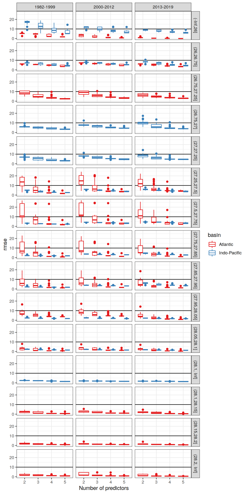
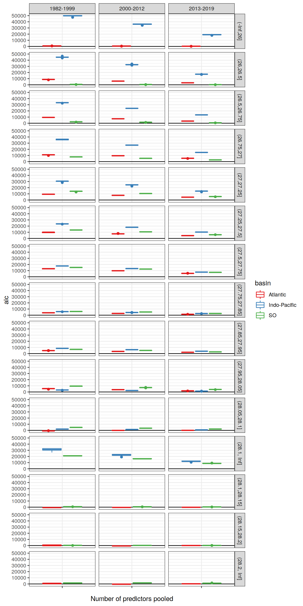
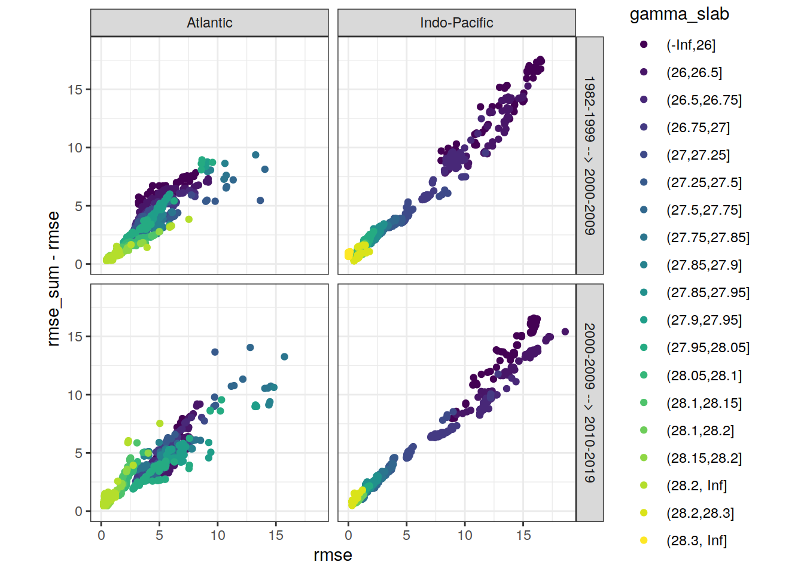
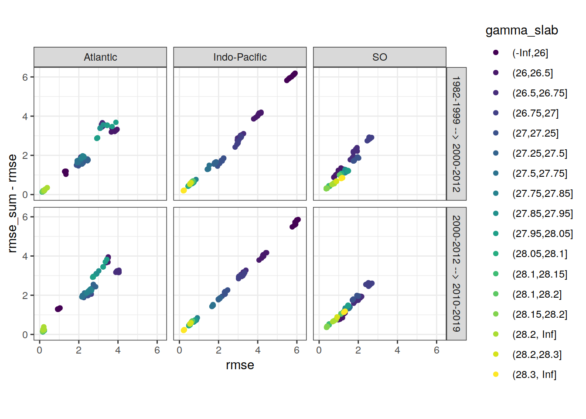
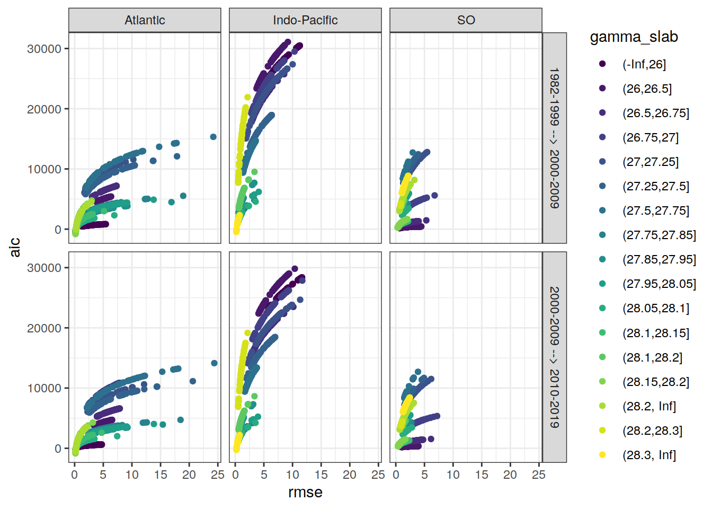
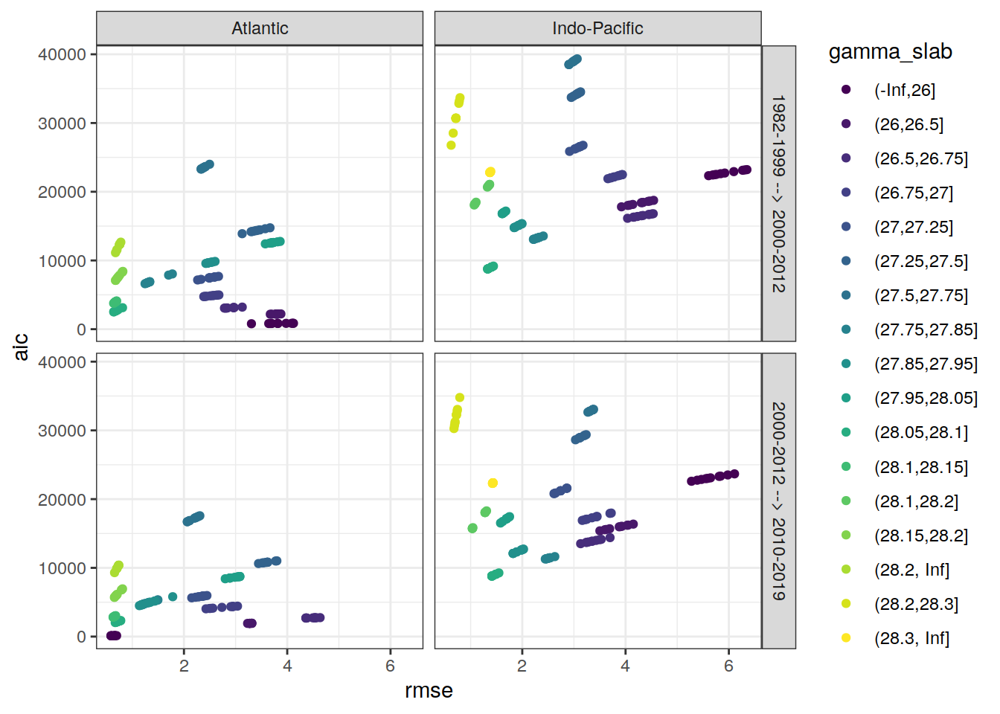

Last updated: 2021-02-27
Checks: 7 0
Knit directory: emlr_mod_v_XXX/
This reproducible R Markdown analysis was created with workflowr (version 1.6.2). The Checks tab describes the reproducibility checks that were applied when the results were created. The Past versions tab lists the development history.
Great! Since the R Markdown file has been committed to the Git repository, you know the exact version of the code that produced these results.
Great job! The global environment was empty. Objects defined in the global environment can affect the analysis in your R Markdown file in unknown ways. For reproduciblity it’s best to always run the code in an empty environment.
The command set.seed(20200707) was run prior to running the code in the R Markdown file. Setting a seed ensures that any results that rely on randomness, e.g. subsampling or permutations, are reproducible.
Great job! Recording the operating system, R version, and package versions is critical for reproducibility.
Nice! There were no cached chunks for this analysis, so you can be confident that you successfully produced the results during this run.
Great job! Using relative paths to the files within your workflowr project makes it easier to run your code on other machines.
Great! You are using Git for version control. Tracking code development and connecting the code version to the results is critical for reproducibility.
The results in this page were generated with repository version b4d5c17. See the Past versions tab to see a history of the changes made to the R Markdown and HTML files.
Note that you need to be careful to ensure that all relevant files for the analysis have been committed to Git prior to generating the results (you can use wflow_publish or wflow_git_commit). workflowr only checks the R Markdown file, but you know if there are other scripts or data files that it depends on. Below is the status of the Git repository when the results were generated:
Ignored files:
Ignored: .Rhistory
Ignored: .Rproj.user/
Unstaged changes:
Modified: data/auxillary/params_local.rds
Note that any generated files, e.g. HTML, png, CSS, etc., are not included in this status report because it is ok for generated content to have uncommitted changes.
These are the previous versions of the repository in which changes were made to the R Markdown (analysis/eMLR_model_fitting.Rmd) and HTML (docs/eMLR_model_fitting.html) files. If you’ve configured a remote Git repository (see ?wflow_git_remote), click on the hyperlinks in the table below to view the files as they were in that past version.
| File | Version | Author | Date | Message |
|---|---|---|---|---|
| html | 19edd1e | Donghe-Zhu | 2021-02-27 | Build site. |
| Rmd | 1ae5bb4 | Donghe-Zhu | 2021-02-27 | local rebuild |
| html | f20483f | Donghe-Zhu | 2021-02-26 | Build site. |
| html | 6a2c7b3 | Donghe-Zhu | 2021-02-25 | Build site. |
| html | 02b976d | Donghe-Zhu | 2021-02-24 | Build site. |
| html | 354c224 | Donghe-Zhu | 2021-02-24 | Build site. |
| Rmd | d910d39 | Donghe-Zhu | 2021-02-24 | local rebuild |
| html | 1a0a88a | Donghe-Zhu | 2021-02-24 | Build site. |
| Rmd | 663e891 | Donghe-Zhu | 2021-02-24 | local rebuild |
| html | 57f701e | Donghe-Zhu | 2021-02-24 | Build site. |
| html | 06f3149 | Donghe-Zhu | 2021-02-16 | Build site. |
| html | 401eab3 | Donghe-Zhu | 2021-02-15 | Build site. |
| html | e3bba84 | Donghe-Zhu | 2021-02-15 | Build site. |
| html | 5dce4b1 | Donghe-Zhu | 2021-02-15 | Build site. |
| Rmd | 35b0f2e | Donghe-Zhu | 2021-02-15 | local rebuild |
| html | 4469a0c | Donghe-Zhu | 2021-02-13 | Build site. |
| Rmd | 8186d57 | Donghe-Zhu | 2021-02-10 | apply nr_obs |
| html | 5ae6a69 | Donghe-Zhu | 2021-02-10 | Build site. |
| Rmd | eeb6557 | Donghe-Zhu | 2021-02-10 | local rebuild |
| html | 05385dc | Donghe-Zhu | 2021-02-10 | Build site. |
| html | f791ae4 | Donghe-Zhu | 2021-02-09 | Build site. |
| html | f71ae34 | Donghe-Zhu | 2021-02-09 | Build site. |
| html | c011832 | Donghe-Zhu | 2021-02-09 | Build site. |
| html | a145fa7 | Donghe-Zhu | 2021-02-09 | Build site. |
| Rmd | 37a41c8 | Donghe-Zhu | 2021-02-09 | local rebuild |
| html | c344e42 | Donghe-Zhu | 2021-02-08 | Build site. |
| Rmd | 8f5fa79 | Donghe-Zhu | 2021-02-08 | local rebuild |
| html | 2f095d7 | Donghe-Zhu | 2021-02-07 | Build site. |
| html | 2305044 | Donghe-Zhu | 2021-02-07 | Build site. |
| Rmd | c3638c1 | Donghe-Zhu | 2021-02-07 | local rebuild |
| html | 1fad5f1 | Donghe-Zhu | 2021-02-07 | Build site. |
| html | ca03c39 | Donghe-Zhu | 2021-02-07 | Build site. |
| html | e2ffc14 | Donghe-Zhu | 2021-02-05 | Build site. |
| html | cd7c52c | Donghe-Zhu | 2021-02-04 | Build site. |
| Rmd | bcf91a8 | jens-daniel-mueller | 2021-02-04 | separate MLR tables, added plot residuals vs location |
| html | bcf84f4 | Donghe-Zhu | 2021-02-02 | Build site. |
| html | a518739 | Donghe-Zhu | 2021-02-01 | Build site. |
| html | 61666de | Donghe-Zhu | 2021-01-31 | Build site. |
| html | 865b582 | Donghe-Zhu | 2021-01-31 | Build site. |
| html | 3e68089 | Donghe-Zhu | 2021-01-31 | Build site. |
| html | ecf335c | Donghe-Zhu | 2021-01-31 | Build site. |
| html | a618965 | Donghe-Zhu | 2021-01-31 | Build site. |
| html | 59e006e | Donghe-Zhu | 2021-01-31 | Build site. |
| html | a1c8f87 | Donghe-Zhu | 2021-01-31 | Build site. |
| html | ae5c18f | Donghe-Zhu | 2021-01-31 | Build site. |
| html | b50fe52 | Donghe-Zhu | 2021-01-31 | Build site. |
| Rmd | ac99ae5 | jens-daniel-mueller | 2021-01-29 | code review |
| html | ac99ae5 | jens-daniel-mueller | 2021-01-29 | code review |
| html | b5bdcaf | Donghe-Zhu | 2021-01-29 | Build site. |
| Rmd | b234505 | Donghe-Zhu | 2021-01-29 | MLR approach across all depth |
| html | 442010d | Donghe-Zhu | 2021-01-29 | Build site. |
| Rmd | e67e7dd | Donghe-Zhu | 2021-01-29 | surface equilibrium approach across all latitudes irrespective of gamma |
| html | 372adf5 | Donghe-Zhu | 2021-01-29 | Build site. |
| html | af8788e | Donghe-Zhu | 2021-01-29 | Build site. |
| html | 21c91c9 | Donghe-Zhu | 2021-01-29 | Build site. |
| html | eded038 | Donghe-Zhu | 2021-01-29 | Build site. |
| html | 541d4dd | Donghe-Zhu | 2021-01-29 | Build site. |
| html | 6a75576 | Donghe-Zhu | 2021-01-28 | Build site. |
| html | 16fba40 | Donghe-Zhu | 2021-01-28 | Build site. |
| Rmd | aecf0c6 | Donghe-Zhu | 2021-01-28 | diagnostic ploting |
| Rmd | a02684e | Donghe-Zhu | 2021-01-28 | error |
| Rmd | 4584be9 | Donghe-Zhu | 2021-01-28 | latest |
| html | 12bc567 | Donghe-Zhu | 2021-01-27 | Build site. |
| html | ceed31b | Donghe-Zhu | 2021-01-27 | Build site. |
| html | 342402d | Donghe-Zhu | 2021-01-27 | Build site. |
| html | 5bad5c2 | Donghe-Zhu | 2021-01-27 | Build site. |
| Rmd | c2c9529 | Donghe-Zhu | 2021-01-27 | random subsetting based on lat |
| html | 61efb56 | Donghe-Zhu | 2021-01-25 | Build site. |
| html | 48f638e | Donghe-Zhu | 2021-01-25 | Build site. |
| html | c1cec47 | Donghe-Zhu | 2021-01-25 | Build site. |
| html | 05ffb0c | Donghe-Zhu | 2021-01-25 | Build site. |
| html | 8b97165 | Donghe-Zhu | 2021-01-25 | Build site. |
| html | c569946 | Donghe-Zhu | 2021-01-24 | Build site. |
| html | a2f0d56 | Donghe-Zhu | 2021-01-23 | Build site. |
| html | 28509fc | Donghe-Zhu | 2021-01-23 | Build site. |
| html | 4c28e4a | Donghe-Zhu | 2021-01-22 | Build site. |
| html | 24cc264 | jens-daniel-mueller | 2021-01-22 | cleaned /docs before creating copies |
| html | 88eb28f | Donghe-Zhu | 2021-01-21 | Build site. |
| html | 2679490 | Donghe-Zhu | 2021-01-21 | Build site. |
| html | 7891955 | Donghe-Zhu | 2021-01-21 | Build site. |
| html | d4cf1cb | Donghe-Zhu | 2021-01-21 | Build site. |
| Rmd | 167eeec | Donghe-Zhu | 2021-01-21 | surface DIC calculation with atmospheric equilibrium option |
| html | 1f3e5b6 | jens-daniel-mueller | 2021-01-20 | Build site. |
| html | 0e7bdf1 | jens-daniel-mueller | 2021-01-15 | cleaning template repository |
| html | 73cbef3 | jens-daniel-mueller | 2021-01-15 | Build site. |
| html | 4571843 | jens-daniel-mueller | 2021-01-14 | revision and html deleted for template copying |
| html | 23151cd | jens-daniel-mueller | 2021-01-14 | Build site. |
| html | b3564aa | jens-daniel-mueller | 2021-01-14 | Build site. |
| html | 8d032c3 | jens-daniel-mueller | 2021-01-14 | Build site. |
| html | 022871c | Donghe-Zhu | 2021-01-13 | Build site. |
| Rmd | d44f36f | Donghe-Zhu | 2021-01-13 | reorder analysis final |
| html | 17dee1d | jens-daniel-mueller | 2021-01-13 | Build site. |
| Rmd | 9e04fd7 | jens-daniel-mueller | 2021-01-13 | local rebuild after revision |
| html | a076226 | Donghe-Zhu | 2021-01-11 | Build site. |
| Rmd | 52eff18 | Donghe-Zhu | 2021-01-09 | Implemet model_run and subsetting |
| html | 7cdea0c | jens-daniel-mueller | 2021-01-06 | Build site. |
| Rmd | b5934dd | jens-daniel-mueller | 2021-01-06 | local rebuild after revision |
| html | fa85b93 | jens-daniel-mueller | 2021-01-06 | Build site. |
| html | e5cb81a | Donghe-Zhu | 2021-01-05 | Build site. |
| Rmd | 608cc45 | Donghe-Zhu | 2021-01-05 | modification of analysis |
| html | a499f10 | Donghe-Zhu | 2021-01-05 | Build site. |
| Rmd | 715bdb4 | Donghe-Zhu | 2021-01-02 | model modification |
| html | fb8a752 | Donghe-Zhu | 2020-12-23 | Build site. |
| Rmd | 82e3c9c | Donghe-Zhu | 2020-12-23 | first build after creating model template |
| html | 8fae0b2 | Donghe-Zhu | 2020-12-21 | Build site. |
| Rmd | 00a1322 | Donghe-Zhu | 2020-12-21 | first build after creating model template |
| Rmd | d73ae35 | Donghe-Zhu | 2020-12-21 | first version with lm error |
| html | c8b76b3 | jens-daniel-mueller | 2020-12-19 | Build site. |
| Rmd | b5fedce | jens-daniel-mueller | 2020-12-19 | first build after creating model template |
| Rmd | 8e8abf5 | Jens Müller | 2020-12-18 | Initial commit |
Required are:
GLODAP <-
read_csv(paste(path_version_data,
"GLODAPv2.2020_MLR_fitting_ready.csv",
sep = ""))Find all possible combinations of following considered predictor variables:
# the following code is a workaround to find all predictor combinations
# using the olsrr package and fit all models for one era, slab, and basin
i_basin <- unique(GLODAP$basin)[1]
i_era <- unique(GLODAP$era)[1]
# subset one basin and era for fitting
GLODAP_basin_era <- GLODAP %>%
filter(basin == i_basin, era == i_era)
i_gamma_slab <- unique(GLODAP_basin_era$gamma_slab)[1]
print(i_gamma_slab)
# subset one gamma slab
GLODAP_basin_era_slab <- GLODAP_basin_era %>%
filter(gamma_slab == i_gamma_slab)
# fit the full linear model, i.e. all predictor combinations
lm_full <- lm(paste(
params_local$MLR_target,
paste(params_local$MLR_predictors, collapse = " + "),
sep = " ~ "
),
data = GLODAP_basin_era_slab)
# fit linear models for all possible predictor combinations
# unfortunately, this functions does not provide model coefficients (yet)
lm_all <- ols_step_all_possible(lm_full)
# convert to tibble
lm_all <- as_tibble(lm_all)
# extract relevant columns and format model formula
lm_all <- lm_all %>%
select(n, predictors) %>%
mutate(lm_coeff = str_replace_all(predictors, " ", " + "),
lm_coeff = paste(params_local$MLR_target, "~", lm_coeff))
# remove certain predictor combinations
# lm_rm_ph <- lm_all %>%
# filter(str_detect(lm_coeff, "phosphate_star")) %>%
# mutate(lm_coeff_filter = str_remove(lm_coeff, "phosphate_star")) %>%
# filter(
# str_detect(lm_coeff_filter, "nitrate") &
# str_detect(lm_coeff_filter, "phosphate")
# )
# lm_rm_si <- lm_all %>%
# filter(str_detect(lm_coeff, "silicate_star")) %>%
# mutate(lm_coeff_filter = str_remove(lm_coeff, "silicate_star")) %>%
# filter(
# str_detect(lm_coeff_filter, "nitrate") &
# str_detect(lm_coeff_filter, "silicate")
# )
# lm_rm_o2 <- lm_all %>%
# filter(str_detect(lm_coeff, "phosphate_star")) %>%
# mutate(lm_coeff_filter = str_remove(lm_coeff, "phosphate_star")) %>%
# filter(
# str_detect(lm_coeff_filter, "phosphate") &
# str_detect(lm_coeff_filter, "oxygen")
# )
# lm_rm <- bind_rows(lm_rm_ph, lm_rm_o2) %>%
# select(-lm_coeff_filter) %>%
# unique()
# lm_rm <- lm_rm_ph %>%
# select(-lm_coeff_filter) %>%
# unique()
#
# lm_all <- anti_join(lm_all, lm_rm)
# remove helper objects
rm(
i_gamma_slab,
i_era,
i_basin,
GLODAP_basin_era,
GLODAP_basin_era_slab,
lm_full,
lm_rm_ph,
lm_rm_si,
lm_rm_o2,
lm_rm
)Select combinations with a total number of predictors in the range:
lm_all <- lm_all %>%
filter(n >= params_local$MLR_predictors_min,
n <= params_local$MLR_predictors_max)This results in a total number of MLR models of:
Individual linear regression models were fitted for the chosen target variable:
as a function of each predictor combination. Fitting was performed separately within each basin, era, and slab. Model diagnostics, such as the root mean squared error (RMSE), were calculated for each fitted model.
# loop across all basins, era, gamma slabs, and MLRs
# fit all MLR models
for (i_basin in unique(GLODAP$basin)) {
for (i_era in unique(GLODAP$era)) {
#i_basin <- unique(GLODAP$basin)[1]
#i_era <- unique(GLODAP$era)[1]
print(i_basin)
print(i_era)
GLODAP_basin_era <- GLODAP %>%
filter(basin == i_basin, era == i_era)
for (i_gamma_slab in unique(GLODAP_basin_era$gamma_slab)) {
#i_gamma_slab <- unique(GLODAP_basin_era$gamma_slab)[1]
print(i_gamma_slab)
GLODAP_basin_era_slab <- GLODAP_basin_era %>%
filter(gamma_slab == i_gamma_slab)
# number of observations used for each fitting model
i_nr_obs = nrow(GLODAP_basin_era_slab)
for (i_predictors in unique(lm_all$predictors)) {
#i_predictors <- unique(lm_all$predictors)[1]
# extract one model definition
i_lm <- lm_all %>%
filter(predictors == i_predictors) %>%
select(lm_coeff) %>%
pull()
# extract number of predictors
i_n_predictors <- lm_all %>%
filter(predictors == i_predictors) %>%
select(n) %>%
pull()
if (i_nr_obs > i_n_predictors) {
# fit model
if (params_local$MLR_type == "rlm") {
i_lm_fit <- MASS::rlm(as.formula(i_lm),
data = GLODAP_basin_era_slab)
}
if (params_local$MLR_type == "lm") {
i_lm_fit <- lm(as.formula(i_lm),
data = GLODAP_basin_era_slab)
}
# find max predictor correlation
i_cor_max <- GLODAP_basin_era_slab %>%
select(!!!syms(str_split(i_predictors, " ",
simplify = TRUE))) %>%
correlate(quiet = TRUE) %>%
select(-term) %>%
abs() %>%
max(na.rm = TRUE)
# calculate root mean squared error
i_rmse <- sqrt(c(crossprod(i_lm_fit$residuals)) /
length(i_lm_fit$residuals))
# calculate maximum residual
i_resid_max <- max(abs(i_lm_fit$residuals))
# calculate Akaike information criterion aic
i_aic <- AIC(i_lm_fit)
# collect model coefficients and diagnostics
coefficients <- tidy(i_lm_fit)
coefficients <- coefficients %>%
mutate(
basin = i_basin,
era = i_era,
gamma_slab = i_gamma_slab,
model = i_lm,
nr_obs = i_nr_obs,
rmse = i_rmse,
aic = i_aic,
resid_max = i_resid_max,
n_predictors = i_n_predictors,
na_predictor = anyNA(coefficients$estimate),
cor_max = i_cor_max
)
if (exists("lm_all_fitted")) {
lm_all_fitted <- bind_rows(lm_all_fitted, coefficients)
}
if (!exists("lm_all_fitted")) {
lm_all_fitted <- coefficients
}
}
}
}
}
}
rm(
i_lm_fit,
coefficients,
i_rmse,
GLODAP_basin_era,
GLODAP_basin_era_slab,
i_lm,
i_basin,
i_era,
i_gamma_slab,
i_nr_obs,
i_predictors,
i_aic,
i_n_predictors,
i_resid_max
)Coefficients are prepared for the mapping of Cant and the chosen target variable.
# select relevant columns
lm_all_fitted <- lm_all_fitted %>%
select(
basin,
gamma_slab,
era,
model,
nr_obs,
n_predictors,
term,
estimate,
rmse,
aic,
resid_max,
na_predictor,
cor_max
)
# set coefficient to zero if not fitted (=NA)
lm_all_fitted <- lm_all_fitted %>%
mutate(estimate = if_else(is.na(estimate), 0, estimate))
# Prepare model coefficients for mapping of target variable
lm_all_fitted_wide <- lm_all_fitted %>%
pivot_wider(
values_from = estimate,
names_from = term,
names_prefix = "coeff_",
values_fill = 0
)Within each basin and slab, the following number of best linear regression models was selected:
The criterion used to select the best models was:
The criterion was summed up for two adjacent eras, and the models with lowest summed values were selected.
Please note, that currently the lm() function produces NAs for some predictors. It is not yet entirely clear when this happens, but presumably it is caused by some form of collinearity between predictors, such that including another predictor does not help to explain the target variable any better. The issues also expresses as exactly identical rmse values of different models. As an interim solution, models with fitted NA predictors were not included.
# remove models with predictors fitted as NA
lm_all_fitted_wide <- lm_all_fitted_wide %>%
filter(na_predictor == FALSE)# calculate RMSE sum for adjacent eras
lm_all_fitted_wide_eras <- lm_all_fitted_wide %>%
select(basin, gamma_slab, model, era, nr_obs, rmse, aic, resid_max) %>%
arrange(era) %>%
group_by(basin, gamma_slab, model) %>%
mutate(
eras = paste(lag(era), era, sep = " --> "),
rmse_sum = rmse + lag(rmse),
aic_sum = aic + lag(aic)
) %>%
ungroup() %>%
select(-c(era)) %>%
drop_na()
# subset models with lowest summed criterion
# chose which criterion is applied
if (params_local$MLR_criterion == "aic") {
lm_best <- lm_all_fitted_wide_eras %>%
group_by(basin, gamma_slab, eras) %>%
slice_min(order_by = aic_sum,
with_ties = FALSE,
n = params_local$MLR_number) %>%
ungroup() %>%
arrange(basin, gamma_slab, eras, model)
} else {
lm_best <- lm_all_fitted_wide_eras %>%
group_by(basin, gamma_slab, eras) %>%
slice_min(order_by = rmse_sum,
with_ties = FALSE,
n = params_local$MLR_number) %>%
ungroup() %>%
arrange(basin, gamma_slab, eras, model)
}lm_best %>%
kable() %>%
add_header_above() %>%
kable_styling() %>%
scroll_box(width = "100%", height = "400px")| basin | gamma_slab | model | nr_obs | rmse | aic | resid_max | eras | rmse_sum | aic_sum |
|---|---|---|---|---|---|---|---|---|---|
| Atlantic | (-Inf,26] | cstar_tref ~ sal + oxygen + aou + nitrate + phosphate | 158 | 1.0382074 | 474.2332 | 3.944222 | 1982-1999 –> 2000-2012 | 2.3741051 | 1198.9867 |
| Atlantic | (-Inf,26] | cstar_tref ~ sal + oxygen + aou + nitrate + silicate + phosphate | 158 | 1.0102185 | 467.5972 | 3.339750 | 1982-1999 –> 2000-2012 | 2.3458438 | 1194.2659 |
| Atlantic | (-Inf,26] | cstar_tref ~ sal + oxygen + aou + silicate + phosphate | 158 | 1.0480832 | 477.2249 | 4.299021 | 1982-1999 –> 2000-2012 | 2.3837757 | 1201.9145 |
| Atlantic | (-Inf,26] | cstar_tref ~ sal + temp + aou + nitrate + phosphate | 158 | 1.0440638 | 476.0107 | 4.148260 | 1982-1999 –> 2000-2012 | 2.3813170 | 1201.1861 |
| Atlantic | (-Inf,26] | cstar_tref ~ sal + temp + aou + nitrate + silicate + phosphate | 158 | 1.0137290 | 468.6934 | 3.297715 | 1982-1999 –> 2000-2012 | 2.3505653 | 1195.7391 |
| Atlantic | (-Inf,26] | cstar_tref ~ sal + temp + oxygen + aou + nitrate + phosphate | 158 | 1.0337825 | 474.8835 | 3.684211 | 1982-1999 –> 2000-2012 | 2.3695815 | 1201.6062 |
| Atlantic | (-Inf,26] | cstar_tref ~ sal + temp + oxygen + aou + nitrate + silicate + phosphate | 158 | 1.0093505 | 469.3256 | 3.392692 | 1982-1999 –> 2000-2012 | 2.3449212 | 1197.9773 |
| Atlantic | (-Inf,26] | cstar_tref ~ sal + temp + oxygen + aou + phosphate | 158 | 1.0447877 | 476.2297 | 3.991338 | 1982-1999 –> 2000-2012 | 2.3809752 | 1201.0734 |
| Atlantic | (-Inf,26] | cstar_tref ~ sal + temp + oxygen + aou + silicate + phosphate | 158 | 1.0432378 | 477.7606 | 3.903496 | 1982-1999 –> 2000-2012 | 2.3788630 | 1204.4292 |
| Atlantic | (-Inf,26] | cstar_tref ~ sal + temp + oxygen + nitrate + silicate + phosphate | 158 | 1.0170935 | 469.7405 | 3.413785 | 1982-1999 –> 2000-2012 | 2.3550073 | 1197.1213 |
| Atlantic | (-Inf,26] | cstar_tref ~ sal + oxygen + aou + nitrate + phosphate | 72 | 1.1326926 | 236.2692 | 2.855476 | 2000-2012 –> 2013-2019 | 2.1709001 | 710.5024 |
| Atlantic | (-Inf,26] | cstar_tref ~ sal + oxygen + aou + nitrate + silicate + phosphate | 72 | 1.0834728 | 231.8718 | 2.650796 | 2000-2012 –> 2013-2019 | 2.0936914 | 699.4691 |
| Atlantic | (-Inf,26] | cstar_tref ~ sal + oxygen + aou + silicate + phosphate | 72 | 1.1936365 | 243.8158 | 3.237974 | 2000-2012 –> 2013-2019 | 2.2417197 | 721.0407 |
| Atlantic | (-Inf,26] | cstar_tref ~ sal + temp + aou + nitrate + phosphate | 72 | 1.1361477 | 236.7078 | 2.802670 | 2000-2012 –> 2013-2019 | 2.1802115 | 712.7185 |
| Atlantic | (-Inf,26] | cstar_tref ~ sal + temp + aou + nitrate + silicate + phosphate | 72 | 1.0788874 | 231.2611 | 2.583446 | 2000-2012 –> 2013-2019 | 2.0926164 | 699.9545 |
| Atlantic | (-Inf,26] | cstar_tref ~ sal + temp + oxygen + aou + nitrate + phosphate | 72 | 1.1315155 | 238.1195 | 2.904684 | 2000-2012 –> 2013-2019 | 2.1652979 | 713.0030 |
| Atlantic | (-Inf,26] | cstar_tref ~ sal + temp + oxygen + aou + nitrate + silicate + phosphate | 72 | 1.0760286 | 232.8790 | 2.653279 | 2000-2012 –> 2013-2019 | 2.0853791 | 702.2046 |
| Atlantic | (-Inf,26] | cstar_tref ~ sal + temp + oxygen + aou + silicate + phosphate | 72 | 1.1875291 | 245.0771 | 3.194201 | 2000-2012 –> 2013-2019 | 2.2307669 | 722.8377 |
| Atlantic | (-Inf,26] | cstar_tref ~ sal + temp + oxygen + nitrate + phosphate | 72 | 1.1396017 | 237.1449 | 2.772460 | 2000-2012 –> 2013-2019 | 2.1874195 | 714.2898 |
| Atlantic | (-Inf,26] | cstar_tref ~ sal + temp + oxygen + nitrate + silicate + phosphate | 72 | 1.0766499 | 230.9622 | 2.586451 | 2000-2012 –> 2013-2019 | 2.0937433 | 700.7026 |
| Atlantic | (26,26.5] | cstar_tref ~ sal + oxygen + aou + nitrate + phosphate | 1046 | 3.3042550 | 5482.8009 | 13.811611 | 1982-1999 –> 2000-2012 | 6.5688725 | 13433.1484 |
| Atlantic | (26,26.5] | cstar_tref ~ sal + oxygen + aou + nitrate + silicate | 1046 | 3.2403045 | 5441.9154 | 14.502344 | 1982-1999 –> 2000-2012 | 6.4880149 | 13376.4262 |
| Atlantic | (26,26.5] | cstar_tref ~ sal + oxygen + aou + nitrate + silicate + phosphate | 1046 | 3.2389169 | 5443.0194 | 14.688990 | 1982-1999 –> 2000-2012 | 6.4823240 | 13375.4862 |
| Atlantic | (26,26.5] | cstar_tref ~ sal + temp + aou + nitrate + silicate | 1046 | 3.3139957 | 5488.9589 | 14.956164 | 1982-1999 –> 2000-2012 | 6.6524475 | 13507.5183 |
| Atlantic | (26,26.5] | cstar_tref ~ sal + temp + aou + nitrate + silicate + phosphate | 1046 | 3.3081857 | 5487.2880 | 15.351355 | 1982-1999 –> 2000-2012 | 6.6465073 | 13507.7285 |
| Atlantic | (26,26.5] | cstar_tref ~ sal + temp + oxygen + aou + nitrate + phosphate | 1046 | 3.2773070 | 5467.6695 | 12.934757 | 1982-1999 –> 2000-2012 | 6.4883908 | 13369.5880 |
| Atlantic | (26,26.5] | cstar_tref ~ sal + temp + oxygen + aou + nitrate + silicate | 1046 | 3.2125948 | 5425.9486 | 13.863059 | 1982-1999 –> 2000-2012 | 6.4258946 | 13329.9712 |
| Atlantic | (26,26.5] | cstar_tref ~ sal + temp + oxygen + aou + nitrate + silicate + phosphate | 1046 | 3.2125528 | 5427.9212 | 13.822807 | 1982-1999 –> 2000-2012 | 6.4070517 | 13316.0460 |
| Atlantic | (26,26.5] | cstar_tref ~ sal + temp + oxygen + nitrate + silicate | 1046 | 3.3407849 | 5505.8019 | 15.174084 | 1982-1999 –> 2000-2012 | 6.7113159 | 13553.5288 |
| Atlantic | (26,26.5] | cstar_tref ~ sal + temp + oxygen + nitrate + silicate + phosphate | 1046 | 3.3345731 | 5503.9085 | 15.588587 | 1982-1999 –> 2000-2012 | 6.7050510 | 13553.5873 |
| Atlantic | (26,26.5] | cstar_tref ~ sal + oxygen + aou + nitrate + phosphate | 567 | 3.2403908 | 2956.3132 | 10.534106 | 2000-2012 –> 2013-2019 | 6.5446458 | 8439.1141 |
| Atlantic | (26,26.5] | cstar_tref ~ sal + oxygen + aou + nitrate + silicate | 567 | 3.0857248 | 2900.8523 | 9.468161 | 2000-2012 –> 2013-2019 | 6.3260293 | 8342.7677 |
| Atlantic | (26,26.5] | cstar_tref ~ sal + oxygen + aou + nitrate + silicate + phosphate | 567 | 3.0339763 | 2883.6735 | 9.412245 | 2000-2012 –> 2013-2019 | 6.2728933 | 8326.6929 |
| Atlantic | (26,26.5] | cstar_tref ~ sal + temp + aou + nitrate + silicate | 567 | 3.1723161 | 2932.2362 | 9.432214 | 2000-2012 –> 2013-2019 | 6.4863118 | 8421.1950 |
| Atlantic | (26,26.5] | cstar_tref ~ sal + temp + aou + nitrate + silicate + phosphate | 567 | 3.0977240 | 2907.2534 | 8.739067 | 2000-2012 –> 2013-2019 | 6.4059096 | 8394.5414 |
| Atlantic | (26,26.5] | cstar_tref ~ sal + temp + oxygen + aou + nitrate + phosphate | 567 | 3.2242301 | 2952.6435 | 11.449224 | 2000-2012 –> 2013-2019 | 6.5015371 | 8420.3131 |
| Atlantic | (26,26.5] | cstar_tref ~ sal + temp + oxygen + aou + nitrate + silicate | 567 | 3.0466697 | 2888.4080 | 10.761888 | 2000-2012 –> 2013-2019 | 6.2592646 | 8314.3566 |
| Atlantic | (26,26.5] | cstar_tref ~ sal + temp + oxygen + aou + nitrate + silicate + phosphate | 567 | 3.0166904 | 2879.1941 | 10.327831 | 2000-2012 –> 2013-2019 | 6.2292432 | 8307.1154 |
| Atlantic | (26,26.5] | cstar_tref ~ sal + temp + oxygen + nitrate + silicate | 567 | 3.1999712 | 2942.0791 | 9.522004 | 2000-2012 –> 2013-2019 | 6.5407562 | 8447.8810 |
| Atlantic | (26,26.5] | cstar_tref ~ sal + temp + oxygen + nitrate + silicate + phosphate | 567 | 3.1227556 | 2916.3800 | 8.695414 | 2000-2012 –> 2013-2019 | 6.4573287 | 8420.2885 |
| Atlantic | (26.5,26.75] | cstar_tref ~ oxygen + aou + nitrate + silicate + phosphate | 1397 | 3.2423787 | 7265.1167 | 9.560288 | 1982-1999 –> 2000-2012 | 6.2982027 | 16900.6544 |
| Atlantic | (26.5,26.75] | cstar_tref ~ sal + oxygen + aou + nitrate + silicate + phosphate | 1397 | 3.2102294 | 7239.2749 | 9.343762 | 1982-1999 –> 2000-2012 | 6.2448568 | 16850.4040 |
| Atlantic | (26.5,26.75] | cstar_tref ~ sal + oxygen + aou + silicate + phosphate | 1397 | 3.2700730 | 7288.8799 | 10.507891 | 1982-1999 –> 2000-2012 | 6.3292231 | 16928.5449 |
| Atlantic | (26.5,26.75] | cstar_tref ~ sal + temp + aou + nitrate + silicate + phosphate | 1397 | 3.2317170 | 7257.9142 | 9.546069 | 1982-1999 –> 2000-2012 | 6.2938190 | 16903.2385 |
| Atlantic | (26.5,26.75] | cstar_tref ~ sal + temp + aou + silicate + phosphate | 1397 | 3.2846060 | 7301.2695 | 10.500101 | 1982-1999 –> 2000-2012 | 6.3669620 | 16969.6063 |
| Atlantic | (26.5,26.75] | cstar_tref ~ sal + temp + oxygen + aou + nitrate + silicate + phosphate | 1397 | 3.1332896 | 7173.4954 | 8.794157 | 1982-1999 –> 2000-2012 | 6.0826758 | 16678.5275 |
| Atlantic | (26.5,26.75] | cstar_tref ~ sal + temp + oxygen + aou + silicate + phosphate | 1397 | 3.2139421 | 7242.5043 | 10.077111 | 1982-1999 –> 2000-2012 | 6.1949222 | 16785.9619 |
| Atlantic | (26.5,26.75] | cstar_tref ~ sal + temp + oxygen + nitrate + silicate + phosphate | 1397 | 3.2574736 | 7280.0940 | 9.819923 | 1982-1999 –> 2000-2012 | 6.3506443 | 16963.7189 |
| Atlantic | (26.5,26.75] | cstar_tref ~ temp + oxygen + aou + nitrate + silicate + phosphate | 1397 | 3.1332904 | 7171.4961 | 8.793931 | 1982-1999 –> 2000-2012 | 6.0827330 | 16674.6008 |
| Atlantic | (26.5,26.75] | cstar_tref ~ temp + oxygen + aou + silicate + phosphate | 1397 | 3.2249399 | 7250.0489 | 10.037456 | 1982-1999 –> 2000-2012 | 6.2079736 | 16794.1190 |
| Atlantic | (26.5,26.75] | cstar_tref ~ oxygen + aou + nitrate + silicate + phosphate | 656 | 3.3433340 | 3459.1900 | 9.454244 | 2000-2012 –> 2013-2019 | 6.5857127 | 10724.3067 |
| Atlantic | (26.5,26.75] | cstar_tref ~ sal + oxygen + aou + nitrate + silicate + phosphate | 656 | 3.3167237 | 3450.7058 | 9.802790 | 2000-2012 –> 2013-2019 | 6.5269531 | 10689.9807 |
| Atlantic | (26.5,26.75] | cstar_tref ~ sal + oxygen + aou + silicate + phosphate | 656 | 3.3455096 | 3460.0435 | 10.735554 | 2000-2012 –> 2013-2019 | 6.6155826 | 10748.9234 |
| Atlantic | (26.5,26.75] | cstar_tref ~ sal + temp + aou + nitrate + silicate + phosphate | 656 | 3.3335092 | 3457.3289 | 9.998952 | 2000-2012 –> 2013-2019 | 6.5652262 | 10715.2431 |
| Atlantic | (26.5,26.75] | cstar_tref ~ sal + temp + aou + silicate + phosphate | 656 | 3.3565540 | 3464.3677 | 10.767824 | 2000-2012 –> 2013-2019 | 6.6411600 | 10765.6372 |
| Atlantic | (26.5,26.75] | cstar_tref ~ sal + temp + oxygen + aou + nitrate + silicate + phosphate | 656 | 3.2676102 | 3433.1326 | 9.323441 | 2000-2012 –> 2013-2019 | 6.4008998 | 10606.6280 |
| Atlantic | (26.5,26.75] | cstar_tref ~ sal + temp + oxygen + aou + silicate + phosphate | 656 | 3.3015492 | 3444.6894 | 10.639303 | 2000-2012 –> 2013-2019 | 6.5154913 | 10687.1938 |
| Atlantic | (26.5,26.75] | cstar_tref ~ sal + temp + oxygen + nitrate + silicate + phosphate | 656 | 3.3557679 | 3466.0603 | 10.316163 | 2000-2012 –> 2013-2019 | 6.6132415 | 10746.1543 |
| Atlantic | (26.5,26.75] | cstar_tref ~ temp + oxygen + aou + nitrate + silicate + phosphate | 656 | 3.2691905 | 3431.7670 | 9.293088 | 2000-2012 –> 2013-2019 | 6.4024809 | 10603.2631 |
| Atlantic | (26.5,26.75] | cstar_tref ~ temp + oxygen + aou + silicate + phosphate | 656 | 3.3238240 | 3451.5114 | 11.113656 | 2000-2012 –> 2013-2019 | 6.5487639 | 10701.5603 |
| Atlantic | (26.75,27] | cstar_tref ~ oxygen + aou + nitrate + silicate + phosphate | 2398 | 2.0422179 | 10243.7478 | 13.072427 | 1982-1999 –> 2000-2012 | 3.6820169 | 22274.6044 |
| Atlantic | (26.75,27] | cstar_tref ~ oxygen + aou + silicate + phosphate | 2398 | 2.0935628 | 10360.8368 | 14.739529 | 1982-1999 –> 2000-2012 | 3.7661002 | 22513.8376 |
| Atlantic | (26.75,27] | cstar_tref ~ sal + oxygen + aou + nitrate + silicate + phosphate | 2398 | 1.9777373 | 10091.8778 | 13.048320 | 1982-1999 –> 2000-2012 | 3.6098667 | 22095.2929 |
| Atlantic | (26.75,27] | cstar_tref ~ sal + oxygen + aou + silicate + phosphate | 2398 | 2.0001820 | 10143.9994 | 14.081577 | 1982-1999 –> 2000-2012 | 3.6531709 | 22225.1681 |
| Atlantic | (26.75,27] | cstar_tref ~ sal + temp + aou + nitrate + silicate + phosphate | 2398 | 2.0453900 | 10253.1915 | 13.198931 | 1982-1999 –> 2000-2012 | 3.7532317 | 22541.3727 |
| Atlantic | (26.75,27] | cstar_tref ~ sal + temp + aou + silicate + phosphate | 2398 | 2.0669164 | 10301.4026 | 14.196373 | 1982-1999 –> 2000-2012 | 3.7902516 | 22644.2987 |
| Atlantic | (26.75,27] | cstar_tref ~ sal + temp + oxygen + aou + nitrate + silicate + phosphate | 2398 | 1.9577047 | 10045.0510 | 12.852844 | 1982-1999 –> 2000-2012 | 3.4513206 | 21493.5208 |
| Atlantic | (26.75,27] | cstar_tref ~ sal + temp + oxygen + aou + silicate + phosphate | 2398 | 1.9733020 | 10081.1101 | 13.668184 | 1982-1999 –> 2000-2012 | 3.4867147 | 21610.2701 |
| Atlantic | (26.75,27] | cstar_tref ~ temp + oxygen + aou + nitrate + silicate + phosphate | 2398 | 2.0377368 | 10235.2128 | 18.405045 | 1982-1999 –> 2000-2012 | 3.5335223 | 21690.7979 |
| Atlantic | (26.75,27] | cstar_tref ~ temp + oxygen + aou + silicate + phosphate | 2398 | 2.0860637 | 10345.6268 | 19.975942 | 1982-1999 –> 2000-2012 | 3.5995129 | 21872.9381 |
| Atlantic | (26.75,27] | cstar_tref ~ oxygen + aou + nitrate + silicate + phosphate | 1263 | 2.5145378 | 5927.4356 | 22.300060 | 2000-2012 –> 2013-2019 | 4.5567556 | 16171.1833 |
| Atlantic | (26.75,27] | cstar_tref ~ sal + oxygen + aou + nitrate + silicate + phosphate | 1263 | 2.4687832 | 5883.0490 | 22.398346 | 2000-2012 –> 2013-2019 | 4.4465205 | 15974.9268 |
| Atlantic | (26.75,27] | cstar_tref ~ sal + oxygen + aou + silicate + phosphate | 1263 | 2.5330762 | 5945.9902 | 25.891764 | 2000-2012 –> 2013-2019 | 4.5332582 | 16089.9896 |
| Atlantic | (26.75,27] | cstar_tref ~ sal + temp + aou + nitrate + silicate + phosphate | 1263 | 2.5134665 | 5928.3592 | 22.501523 | 2000-2012 –> 2013-2019 | 4.5588565 | 16181.5506 |
| Atlantic | (26.75,27] | cstar_tref ~ sal + temp + aou + silicate + phosphate | 1263 | 2.5653762 | 5977.9963 | 25.592327 | 2000-2012 –> 2013-2019 | 4.6322925 | 16279.3988 |
| Atlantic | (26.75,27] | cstar_tref ~ sal + temp + oxygen + aou + nitrate + silicate + phosphate | 1263 | 2.1936686 | 5586.6019 | 19.571794 | 2000-2012 –> 2013-2019 | 4.1513732 | 15631.6529 |
| Atlantic | (26.75,27] | cstar_tref ~ sal + temp + oxygen + aou + silicate + phosphate | 1263 | 2.2447360 | 5642.7318 | 22.401900 | 2000-2012 –> 2013-2019 | 4.2180380 | 15723.8419 |
| Atlantic | (26.75,27] | cstar_tref ~ sal + temp + oxygen + nitrate + silicate + phosphate | 1263 | 2.5620228 | 5976.6922 | 22.802057 | 2000-2012 –> 2013-2019 | 4.7054323 | 16454.3814 |
| Atlantic | (26.75,27] | cstar_tref ~ temp + oxygen + aou + nitrate + silicate + phosphate | 1263 | 2.1944621 | 5585.5155 | 19.509755 | 2000-2012 –> 2013-2019 | 4.2321989 | 15820.7283 |
| Atlantic | (26.75,27] | cstar_tref ~ temp + oxygen + aou + silicate + phosphate | 1263 | 2.2552518 | 5652.5376 | 22.583567 | 2000-2012 –> 2013-2019 | 4.3413155 | 15998.1644 |
| Atlantic | (27,27.25] | cstar_tref ~ sal + aou + nitrate + silicate + phosphate | 2031 | 1.8626152 | 8304.2173 | 11.021443 | 1982-1999 –> 2000-2012 | 3.5644105 | 18504.3667 |
| Atlantic | (27,27.25] | cstar_tref ~ sal + oxygen + aou + nitrate + silicate + phosphate | 2031 | 1.7685785 | 8095.7837 | 13.273629 | 1982-1999 –> 2000-2012 | 3.2488170 | 17569.5660 |
| Atlantic | (27,27.25] | cstar_tref ~ sal + oxygen + aou + silicate + phosphate | 2031 | 1.8904789 | 8364.5325 | 9.689213 | 1982-1999 –> 2000-2012 | 3.4604645 | 18143.6984 |
| Atlantic | (27,27.25] | cstar_tref ~ sal + temp + aou + nitrate + silicate + phosphate | 2031 | 1.7886736 | 8141.6771 | 12.395499 | 1982-1999 –> 2000-2012 | 3.2352503 | 17495.3358 |
| Atlantic | (27,27.25] | cstar_tref ~ sal + temp + aou + silicate + phosphate | 2031 | 1.8979717 | 8380.6003 | 9.355072 | 1982-1999 –> 2000-2012 | 3.4547428 | 18115.6267 |
| Atlantic | (27,27.25] | cstar_tref ~ sal + temp + oxygen + aou + nitrate + silicate + phosphate | 2031 | 1.7317419 | 8012.2853 | 15.886046 | 1982-1999 –> 2000-2012 | 3.1780603 | 17367.0116 |
| Atlantic | (27,27.25] | cstar_tref ~ sal + temp + oxygen + aou + silicate + phosphate | 2031 | 1.8598998 | 8300.2912 | 12.096683 | 1982-1999 –> 2000-2012 | 3.4166128 | 18037.1230 |
| Atlantic | (27,27.25] | cstar_tref ~ sal + temp + oxygen + nitrate + silicate + phosphate | 2031 | 1.8229960 | 8218.8833 | 11.342723 | 1982-1999 –> 2000-2012 | 3.3037503 | 17694.4851 |
| Atlantic | (27,27.25] | cstar_tref ~ sal + temp + oxygen + silicate + phosphate | 2031 | 1.9234272 | 8434.7175 | 8.493771 | 1982-1999 –> 2000-2012 | 3.5167839 | 18291.0461 |
| Atlantic | (27,27.25] | cstar_tref ~ temp + oxygen + aou + nitrate + silicate + phosphate | 2031 | 1.8689532 | 8320.0157 | 18.956833 | 1982-1999 –> 2000-2012 | 3.5357161 | 18413.5457 |
| Atlantic | (27,27.25] | cstar_tref ~ sal + aou + nitrate + silicate + phosphate | 1142 | 2.1593133 | 5013.0566 | 10.465472 | 2000-2012 –> 2013-2019 | 4.0219286 | 13317.2739 |
| Atlantic | (27,27.25] | cstar_tref ~ sal + aou + silicate + phosphate | 1142 | 2.3003827 | 5155.6000 | 13.777336 | 2000-2012 –> 2013-2019 | 4.2152027 | 13570.0995 |
| Atlantic | (27,27.25] | cstar_tref ~ sal + oxygen + aou + nitrate + silicate + phosphate | 1142 | 2.1464785 | 5001.4401 | 9.449703 | 2000-2012 –> 2013-2019 | 3.9150570 | 13097.2238 |
| Atlantic | (27,27.25] | cstar_tref ~ sal + oxygen + aou + silicate + phosphate | 1142 | 2.2946948 | 5151.9457 | 14.080782 | 2000-2012 –> 2013-2019 | 4.1851737 | 13516.4782 |
| Atlantic | (27,27.25] | cstar_tref ~ sal + temp + aou + nitrate + silicate + phosphate | 1142 | 2.1545634 | 5010.0268 | 9.847471 | 2000-2012 –> 2013-2019 | 3.9432370 | 13151.7039 |
| Atlantic | (27,27.25] | cstar_tref ~ sal + temp + aou + silicate + phosphate | 1142 | 2.2882847 | 5145.5566 | 14.231726 | 2000-2012 –> 2013-2019 | 4.1862565 | 13526.1569 |
| Atlantic | (27,27.25] | cstar_tref ~ sal + temp + oxygen + aou + nitrate + silicate + phosphate | 1142 | 2.0775479 | 4928.8897 | 9.783184 | 2000-2012 –> 2013-2019 | 3.8092897 | 12941.1749 |
| Atlantic | (27,27.25] | cstar_tref ~ sal + temp + oxygen + aou + silicate + phosphate | 1142 | 2.2356057 | 5094.3615 | 14.334561 | 2000-2012 –> 2013-2019 | 4.0955055 | 13394.6527 |
| Atlantic | (27,27.25] | cstar_tref ~ sal + temp + oxygen + nitrate + silicate + phosphate | 1142 | 2.1888764 | 5046.1146 | 9.973069 | 2000-2012 –> 2013-2019 | 4.0118723 | 13264.9979 |
| Atlantic | (27,27.25] | cstar_tref ~ temp + oxygen + aou + nitrate + silicate + phosphate | 1142 | 2.2764891 | 5135.7525 | 18.813540 | 2000-2012 –> 2013-2019 | 4.1454423 | 13455.7683 |
| Atlantic | (27.25,27.5] | cstar_tref ~ oxygen + aou + nitrate + silicate + phosphate | 2025 | 2.2571186 | 9057.7617 | 21.333316 | 1982-1999 –> 2000-2012 | 3.9135961 | 20144.1869 |
| Atlantic | (27.25,27.5] | cstar_tref ~ sal + oxygen + aou + nitrate + silicate | 2025 | 2.1403141 | 8842.5591 | 17.909272 | 1982-1999 –> 2000-2012 | 3.7787585 | 19865.9783 |
| Atlantic | (27.25,27.5] | cstar_tref ~ sal + oxygen + aou + nitrate + silicate + phosphate | 2025 | 2.1392607 | 8842.5653 | 18.152763 | 1982-1999 –> 2000-2012 | 3.7620627 | 19812.7677 |
| Atlantic | (27.25,27.5] | cstar_tref ~ sal + temp + aou + nitrate + silicate | 2025 | 2.1625100 | 8884.3428 | 12.574713 | 1982-1999 –> 2000-2012 | 3.8613513 | 20116.1247 |
| Atlantic | (27.25,27.5] | cstar_tref ~ sal + temp + aou + nitrate + silicate + phosphate | 2025 | 2.1590686 | 8879.8926 | 12.833625 | 1982-1999 –> 2000-2012 | 3.8508069 | 20089.5577 |
| Atlantic | (27.25,27.5] | cstar_tref ~ sal + temp + oxygen + aou + nitrate + silicate | 2025 | 2.1403141 | 8844.5591 | 17.906511 | 1982-1999 –> 2000-2012 | 3.7782908 | 19868.3352 |
| Atlantic | (27.25,27.5] | cstar_tref ~ sal + temp + oxygen + aou + nitrate + silicate + phosphate | 2025 | 2.1391730 | 8844.3992 | 17.846793 | 1982-1999 –> 2000-2012 | 3.7585043 | 19804.2779 |
| Atlantic | (27.25,27.5] | cstar_tref ~ temp + aou + nitrate + silicate + phosphate | 2025 | 2.2664591 | 9074.4871 | 13.372191 | 1982-1999 –> 2000-2012 | 3.9854665 | 20374.1931 |
| Atlantic | (27.25,27.5] | cstar_tref ~ temp + oxygen + aou + nitrate + silicate | 2025 | 2.3638566 | 9244.8934 | 19.365747 | 1982-1999 –> 2000-2012 | 4.0204499 | 20331.7212 |
| Atlantic | (27.25,27.5] | cstar_tref ~ temp + oxygen + aou + nitrate + silicate + phosphate | 2025 | 2.2489702 | 9045.1143 | 18.192634 | 1982-1999 –> 2000-2012 | 3.9054295 | 20133.4764 |
| Atlantic | (27.25,27.5] | cstar_tref ~ oxygen + aou + nitrate + silicate + phosphate | 1109 | 2.7884162 | 5435.7065 | 20.513112 | 2000-2012 –> 2013-2019 | 5.0455349 | 14493.4682 |
| Atlantic | (27.25,27.5] | cstar_tref ~ sal + oxygen + aou + nitrate + silicate | 1109 | 2.7818295 | 5430.4610 | 17.251552 | 2000-2012 –> 2013-2019 | 4.9221436 | 14273.0201 |
| Atlantic | (27.25,27.5] | cstar_tref ~ sal + oxygen + aou + nitrate + silicate + phosphate | 1109 | 2.7064010 | 5371.4902 | 19.005456 | 2000-2012 –> 2013-2019 | 4.8456617 | 14214.0555 |
| Atlantic | (27.25,27.5] | cstar_tref ~ sal + temp + aou + nitrate + silicate | 1109 | 2.8205406 | 5461.1132 | 14.090309 | 2000-2012 –> 2013-2019 | 4.9830506 | 14345.4560 |
| Atlantic | (27.25,27.5] | cstar_tref ~ sal + temp + aou + nitrate + silicate + phosphate | 1109 | 2.7324635 | 5392.7473 | 14.021401 | 2000-2012 –> 2013-2019 | 4.8915321 | 14272.6398 |
| Atlantic | (27.25,27.5] | cstar_tref ~ sal + temp + oxygen + aou + nitrate + silicate | 1109 | 2.7685664 | 5421.8608 | 21.376840 | 2000-2012 –> 2013-2019 | 4.9088806 | 14266.4200 |
| Atlantic | (27.25,27.5] | cstar_tref ~ sal + temp + oxygen + aou + nitrate + silicate + phosphate | 1109 | 2.7053602 | 5372.6371 | 20.139108 | 2000-2012 –> 2013-2019 | 4.8445332 | 14217.0362 |
| Atlantic | (27.25,27.5] | cstar_tref ~ sal + temp + oxygen + nitrate + silicate + phosphate | 1109 | 2.7974952 | 5444.9165 | 11.875464 | 2000-2012 –> 2013-2019 | 5.0273272 | 14455.4189 |
| Atlantic | (27.25,27.5] | cstar_tref ~ temp + aou + nitrate + silicate + phosphate | 1109 | 2.8123363 | 5454.6522 | 14.111336 | 2000-2012 –> 2013-2019 | 5.0787954 | 14529.1392 |
| Atlantic | (27.25,27.5] | cstar_tref ~ temp + oxygen + aou + nitrate + silicate + phosphate | 1109 | 2.7871176 | 5436.6733 | 19.218900 | 2000-2012 –> 2013-2019 | 5.0360878 | 14481.7876 |
| Atlantic | (27.5,27.75] | cstar_tref ~ sal + aou + nitrate + silicate + phosphate | 2804 | 2.3843613 | 12844.3739 | 16.074344 | 1982-1999 –> 2000-2012 | 4.6854817 | 29678.8092 |
| Atlantic | (27.5,27.75] | cstar_tref ~ sal + oxygen + aou + nitrate + silicate + phosphate | 2804 | 2.3646915 | 12799.9189 | 15.947237 | 1982-1999 –> 2000-2012 | 4.4645090 | 28952.6908 |
| Atlantic | (27.5,27.75] | cstar_tref ~ sal + oxygen + aou + silicate + phosphate | 2804 | 2.3944064 | 12867.9502 | 14.685866 | 1982-1999 –> 2000-2012 | 4.4949743 | 29021.3907 |
| Atlantic | (27.5,27.75] | cstar_tref ~ sal + temp + aou + nitrate + silicate + phosphate | 2804 | 2.3649692 | 12800.5773 | 15.837292 | 1982-1999 –> 2000-2012 | 4.4315783 | 28834.3000 |
| Atlantic | (27.5,27.75] | cstar_tref ~ sal + temp + aou + silicate + phosphate | 2804 | 2.3920617 | 12862.4560 | 14.587684 | 1982-1999 –> 2000-2012 | 4.4588552 | 28894.8448 |
| Atlantic | (27.5,27.75] | cstar_tref ~ sal + temp + oxygen + aou + nitrate + phosphate | 2804 | 2.5359933 | 13192.1302 | 18.361593 | 1982-1999 –> 2000-2012 | 4.7342908 | 29687.1813 |
| Atlantic | (27.5,27.75] | cstar_tref ~ sal + temp + oxygen + aou + nitrate + silicate + phosphate | 2804 | 2.3645727 | 12801.6371 | 15.906935 | 1982-1999 –> 2000-2012 | 4.4225209 | 28805.9963 |
| Atlantic | (27.5,27.75] | cstar_tref ~ sal + temp + oxygen + aou + silicate + phosphate | 2804 | 2.3920616 | 12864.4558 | 14.588449 | 1982-1999 –> 2000-2012 | 4.4507889 | 28869.6418 |
| Atlantic | (27.5,27.75] | cstar_tref ~ sal + temp + oxygen + nitrate + silicate + phosphate | 2804 | 2.3899389 | 12859.4771 | 15.360569 | 1982-1999 –> 2000-2012 | 4.4556461 | 28889.9396 |
| Atlantic | (27.5,27.75] | cstar_tref ~ sal + temp + oxygen + silicate + phosphate | 2804 | 2.4122515 | 12909.5908 | 14.214259 | 1982-1999 –> 2000-2012 | 4.4796273 | 28944.0833 |
| Atlantic | (27.5,27.75] | cstar_tref ~ sal + aou + nitrate + silicate + phosphate | 1515 | 2.7078202 | 7331.6999 | 19.383046 | 2000-2012 –> 2013-2019 | 5.0921815 | 20176.0738 |
| Atlantic | (27.5,27.75] | cstar_tref ~ sal + aou + silicate + phosphate | 1515 | 2.8745087 | 7510.7055 | 15.545879 | 2000-2012 –> 2013-2019 | 5.3284002 | 20514.2749 |
| Atlantic | (27.5,27.75] | cstar_tref ~ sal + oxygen + aou + nitrate + silicate + phosphate | 1515 | 2.6926942 | 7316.7268 | 20.089368 | 2000-2012 –> 2013-2019 | 5.0573857 | 20116.6457 |
| Atlantic | (27.5,27.75] | cstar_tref ~ sal + oxygen + aou + silicate + phosphate | 1515 | 2.8711798 | 7509.1946 | 15.461950 | 2000-2012 –> 2013-2019 | 5.2655862 | 20377.1448 |
| Atlantic | (27.5,27.75] | cstar_tref ~ sal + temp + aou + nitrate + silicate + phosphate | 1515 | 2.6919437 | 7315.8822 | 19.886060 | 2000-2012 –> 2013-2019 | 5.0569129 | 20116.4595 |
| Atlantic | (27.5,27.75] | cstar_tref ~ sal + temp + aou + silicate + phosphate | 1515 | 2.8690598 | 7506.9564 | 15.594453 | 2000-2012 –> 2013-2019 | 5.2611214 | 20369.4124 |
| Atlantic | (27.5,27.75] | cstar_tref ~ sal + temp + oxygen + aou + nitrate + silicate + phosphate | 1515 | 2.6919437 | 7317.8822 | 19.885854 | 2000-2012 –> 2013-2019 | 5.0565164 | 20119.5192 |
| Atlantic | (27.5,27.75] | cstar_tref ~ sal + temp + oxygen + aou + silicate + phosphate | 1515 | 2.8637502 | 7503.3438 | 16.355938 | 2000-2012 –> 2013-2019 | 5.2558118 | 20367.7996 |
| Atlantic | (27.5,27.75] | cstar_tref ~ sal + temp + oxygen + nitrate + silicate + phosphate | 1515 | 2.7055611 | 7331.1710 | 20.886480 | 2000-2012 –> 2013-2019 | 5.0955000 | 20190.6481 |
| Atlantic | (27.5,27.75] | cstar_tref ~ sal + temp + oxygen + silicate + phosphate | 1515 | 2.8660787 | 7503.8064 | 16.855872 | 2000-2012 –> 2013-2019 | 5.2783302 | 20413.3972 |
| Atlantic | (27.75,27.85] | cstar_tref ~ sal + oxygen + aou + nitrate + phosphate | 1036 | 1.5100084 | 3807.9434 | 14.539112 | 1982-1999 –> 2000-2012 | 3.0360994 | 8683.8943 |
| Atlantic | (27.75,27.85] | cstar_tref ~ sal + oxygen + aou + nitrate + silicate + phosphate | 1036 | 1.4933765 | 3786.9948 | 13.193790 | 1982-1999 –> 2000-2012 | 3.0083549 | 8645.6517 |
| Atlantic | (27.75,27.85] | cstar_tref ~ sal + oxygen + aou + silicate + phosphate | 1036 | 1.5641536 | 3880.9392 | 12.798383 | 1982-1999 –> 2000-2012 | 3.1611985 | 8876.8661 |
| Atlantic | (27.75,27.85] | cstar_tref ~ sal + temp + aou + nitrate + phosphate | 1036 | 1.5197119 | 3821.2156 | 14.808950 | 1982-1999 –> 2000-2012 | 3.0586861 | 8719.3599 |
| Atlantic | (27.75,27.85] | cstar_tref ~ sal + temp + aou + nitrate + silicate + phosphate | 1036 | 1.5041247 | 3801.8541 | 13.515384 | 1982-1999 –> 2000-2012 | 3.0308360 | 8680.8779 |
| Atlantic | (27.75,27.85] | cstar_tref ~ sal + temp + oxygen + aou + nitrate + phosphate | 1036 | 1.4997244 | 3795.7836 | 13.771377 | 1982-1999 –> 2000-2012 | 3.0163979 | 8657.3928 |
| Atlantic | (27.75,27.85] | cstar_tref ~ sal + temp + oxygen + aou + nitrate + silicate + phosphate | 1036 | 1.4819371 | 3773.0620 | 12.346257 | 1982-1999 –> 2000-2012 | 2.9888702 | 8619.6617 |
| Atlantic | (27.75,27.85] | cstar_tref ~ sal + temp + oxygen + aou + silicate + phosphate | 1036 | 1.5167237 | 3819.1375 | 12.205256 | 1982-1999 –> 2000-2012 | 3.0692607 | 8742.4457 |
| Atlantic | (27.75,27.85] | cstar_tref ~ sal + temp + oxygen + nitrate + phosphate | 1036 | 1.5430795 | 3852.8330 | 15.324821 | 1982-1999 –> 2000-2012 | 3.1087399 | 8796.3632 |
| Atlantic | (27.75,27.85] | cstar_tref ~ sal + temp + oxygen + nitrate + silicate + phosphate | 1036 | 1.5289575 | 3835.7831 | 14.091157 | 1982-1999 –> 2000-2012 | 3.0808965 | 8758.0743 |
| Atlantic | (27.75,27.85] | cstar_tref ~ sal + oxygen + aou + nitrate + phosphate | 513 | 1.7094323 | 2019.9324 | 13.736344 | 2000-2012 –> 2013-2019 | 3.2194407 | 5827.8758 |
| Atlantic | (27.75,27.85] | cstar_tref ~ sal + oxygen + aou + nitrate + silicate + phosphate | 513 | 1.6586171 | 1990.9707 | 11.471286 | 2000-2012 –> 2013-2019 | 3.1519935 | 5777.9654 |
| Atlantic | (27.75,27.85] | cstar_tref ~ sal + oxygen + aou + silicate + phosphate | 513 | 1.7475521 | 2042.5606 | 12.039326 | 2000-2012 –> 2013-2019 | 3.3117057 | 5923.4997 |
| Atlantic | (27.75,27.85] | cstar_tref ~ sal + temp + aou + nitrate + phosphate | 513 | 1.7242945 | 2028.8142 | 13.967079 | 2000-2012 –> 2013-2019 | 3.2440064 | 5850.0298 |
| Atlantic | (27.75,27.85] | cstar_tref ~ sal + temp + aou + nitrate + silicate + phosphate | 513 | 1.6731627 | 1999.9292 | 11.689855 | 2000-2012 –> 2013-2019 | 3.1772874 | 5801.7833 |
| Atlantic | (27.75,27.85] | cstar_tref ~ sal + temp + oxygen + aou + nitrate + phosphate | 513 | 1.6587161 | 1991.0319 | 11.883986 | 2000-2012 –> 2013-2019 | 3.1584405 | 5786.8155 |
| Atlantic | (27.75,27.85] | cstar_tref ~ sal + temp + oxygen + aou + nitrate + silicate + phosphate | 513 | 1.6130343 | 1964.3791 | 10.721751 | 2000-2012 –> 2013-2019 | 3.0949714 | 5737.4410 |
| Atlantic | (27.75,27.85] | cstar_tref ~ sal + temp + oxygen + aou + silicate + phosphate | 513 | 1.6452734 | 1982.6831 | 11.380188 | 2000-2012 –> 2013-2019 | 3.1619970 | 5801.8206 |
| Atlantic | (27.75,27.85] | cstar_tref ~ sal + temp + oxygen + nitrate + phosphate | 513 | 1.7556052 | 2047.2777 | 14.468303 | 2000-2012 –> 2013-2019 | 3.2986847 | 5900.1107 |
| Atlantic | (27.75,27.85] | cstar_tref ~ sal + temp + oxygen + nitrate + silicate + phosphate | 513 | 1.7046539 | 2019.0605 | 12.184214 | 2000-2012 –> 2013-2019 | 3.2336114 | 5854.8436 |
| Atlantic | (27.85,27.95] | cstar_tref ~ sal + temp + oxygen + aou + nitrate | 983 | 3.0630171 | 5004.3744 | 26.240993 | 1982-1999 –> 2000-2012 | 5.9542902 | 11646.6323 |
| Atlantic | (27.85,27.95] | cstar_tref ~ sal + temp + oxygen + aou + nitrate + phosphate | 983 | 2.9209554 | 4913.0097 | 23.348570 | 1982-1999 –> 2000-2012 | 5.6332688 | 11386.5402 |
| Atlantic | (27.85,27.95] | cstar_tref ~ sal + temp + oxygen + aou + nitrate + silicate | 983 | 2.9636440 | 4941.5341 | 24.080105 | 1982-1999 –> 2000-2012 | 5.8129478 | 11546.7213 |
| Atlantic | (27.85,27.95] | cstar_tref ~ sal + temp + oxygen + aou + nitrate + silicate + phosphate | 983 | 2.9167184 | 4912.1558 | 23.324808 | 1982-1999 –> 2000-2012 | 5.5922061 | 11351.1595 |
| Atlantic | (27.85,27.95] | cstar_tref ~ sal + temp + oxygen + aou + phosphate | 983 | 2.9304503 | 4917.3900 | 22.456892 | 1982-1999 –> 2000-2012 | 5.6593028 | 11405.1644 |
| Atlantic | (27.85,27.95] | cstar_tref ~ sal + temp + oxygen + aou + silicate + phosphate | 983 | 2.9168969 | 4910.2762 | 23.384895 | 1982-1999 –> 2000-2012 | 5.6443939 | 11398.7229 |
| Atlantic | (27.85,27.95] | cstar_tref ~ temp + oxygen + aou + nitrate + phosphate | 983 | 3.0821699 | 5016.6293 | 23.370605 | 1982-1999 –> 2000-2012 | 5.9778226 | 11662.9317 |
| Atlantic | (27.85,27.95] | cstar_tref ~ temp + oxygen + aou + nitrate + silicate + phosphate | 983 | 3.0752221 | 5014.1926 | 23.047959 | 1982-1999 –> 2000-2012 | 5.9358669 | 11629.9940 |
| Atlantic | (27.85,27.95] | cstar_tref ~ temp + oxygen + aou + phosphate | 983 | 3.0946626 | 5022.5819 | 23.332862 | 1982-1999 –> 2000-2012 | 6.0114682 | 11686.3324 |
| Atlantic | (27.85,27.95] | cstar_tref ~ temp + oxygen + aou + silicate + phosphate | 983 | 3.0757549 | 5012.5332 | 23.130965 | 1982-1999 –> 2000-2012 | 5.9400103 | 11629.7050 |
| Atlantic | (27.85,27.95] | cstar_tref ~ sal + oxygen + aou + nitrate + phosphate | 569 | 3.2198068 | 2959.4398 | 28.682477 | 2000-2012 –> 2013-2019 | 6.6553718 | 8189.4735 |
| Atlantic | (27.85,27.95] | cstar_tref ~ sal + oxygen + aou + nitrate + silicate + phosphate | 569 | 3.2039147 | 2955.8090 | 28.849345 | 2000-2012 –> 2013-2019 | 6.6253703 | 8179.7521 |
| Atlantic | (27.85,27.95] | cstar_tref ~ sal + temp + oxygen + aou + nitrate | 569 | 3.5578347 | 3073.0472 | 28.721108 | 2000-2012 –> 2013-2019 | 6.6208518 | 8077.4216 |
| Atlantic | (27.85,27.95] | cstar_tref ~ sal + temp + oxygen + aou + nitrate + phosphate | 569 | 3.2165771 | 2960.2977 | 28.808840 | 2000-2012 –> 2013-2019 | 6.1375326 | 7873.3074 |
| Atlantic | (27.85,27.95] | cstar_tref ~ sal + temp + oxygen + aou + nitrate + silicate | 569 | 3.4233042 | 3031.1819 | 28.388138 | 2000-2012 –> 2013-2019 | 6.3869482 | 7972.7160 |
| Atlantic | (27.85,27.95] | cstar_tref ~ sal + temp + oxygen + aou + nitrate + silicate + phosphate | 569 | 3.1989479 | 2956.0435 | 29.016215 | 2000-2012 –> 2013-2019 | 6.1156663 | 7868.1993 |
| Atlantic | (27.85,27.95] | cstar_tref ~ sal + temp + oxygen + aou + phosphate | 569 | 3.3261262 | 2996.4099 | 29.121490 | 2000-2012 –> 2013-2019 | 6.2565764 | 7913.7999 |
| Atlantic | (27.85,27.95] | cstar_tref ~ sal + temp + oxygen + aou + silicate + phosphate | 569 | 3.3016373 | 2990.0003 | 28.844568 | 2000-2012 –> 2013-2019 | 6.2185342 | 7900.2765 |
| Atlantic | (27.85,27.95] | cstar_tref ~ temp + oxygen + aou + nitrate + silicate + phosphate | 569 | 3.6536488 | 3105.2886 | 22.923203 | 2000-2012 –> 2013-2019 | 6.7288710 | 8119.4812 |
| Atlantic | (27.85,27.95] | cstar_tref ~ temp + oxygen + aou + silicate + phosphate | 569 | 3.6600265 | 3105.2733 | 23.151675 | 2000-2012 –> 2013-2019 | 6.7357814 | 8117.8065 |
| Atlantic | (27.95,28.05] | cstar_tref ~ oxygen + aou + nitrate + silicate + phosphate | 1204 | 4.0178610 | 6779.7292 | 25.762442 | 1982-1999 –> 2000-2012 | 7.6900067 | 15910.2128 |
| Atlantic | (27.95,28.05] | cstar_tref ~ sal + oxygen + aou + nitrate + silicate + phosphate | 1204 | 3.9663431 | 6750.6536 | 26.278881 | 1982-1999 –> 2000-2012 | 7.5145428 | 15768.0436 |
| Atlantic | (27.95,28.05] | cstar_tref ~ sal + temp + aou + nitrate + silicate + phosphate | 1204 | 3.9222390 | 6723.7277 | 25.772111 | 1982-1999 –> 2000-2012 | 7.4530630 | 15724.6625 |
| Atlantic | (27.95,28.05] | cstar_tref ~ sal + temp + oxygen + aou + nitrate + phosphate | 1204 | 3.5541213 | 6486.4077 | 21.514886 | 1982-1999 –> 2000-2012 | 6.8749279 | 15281.7859 |
| Atlantic | (27.95,28.05] | cstar_tref ~ sal + temp + oxygen + aou + nitrate + silicate + phosphate | 1204 | 3.5310176 | 6472.7033 | 22.926889 | 1982-1999 –> 2000-2012 | 6.7144051 | 15128.4199 |
| Atlantic | (27.95,28.05] | cstar_tref ~ sal + temp + oxygen + nitrate + silicate + phosphate | 1204 | 3.9115984 | 6717.1862 | 25.623406 | 1982-1999 –> 2000-2012 | 7.4349324 | 15711.0028 |
| Atlantic | (27.95,28.05] | cstar_tref ~ temp + aou + nitrate + silicate + phosphate | 1204 | 3.9682210 | 6749.7934 | 25.265565 | 1982-1999 –> 2000-2012 | 7.6108086 | 15853.1867 |
| Atlantic | (27.95,28.05] | cstar_tref ~ temp + oxygen + aou + nitrate + phosphate | 1204 | 3.8735532 | 6691.6507 | 19.419274 | 1982-1999 –> 2000-2012 | 7.7104519 | 15969.2478 |
| Atlantic | (27.95,28.05] | cstar_tref ~ temp + oxygen + aou + nitrate + silicate + phosphate | 1204 | 3.7604125 | 6622.2690 | 22.900385 | 1982-1999 –> 2000-2012 | 7.2584306 | 15591.9137 |
| Atlantic | (27.95,28.05] | cstar_tref ~ temp + oxygen + nitrate + silicate + phosphate | 1204 | 3.9591041 | 6744.2548 | 25.125796 | 1982-1999 –> 2000-2012 | 7.5958976 | 15842.3119 |
| Atlantic | (27.95,28.05] | cstar_tref ~ oxygen + aou + nitrate + silicate + phosphate | 666 | 3.5624057 | 3596.2470 | 28.359612 | 2000-2012 –> 2013-2019 | 7.5802666 | 10375.9761 |
| Atlantic | (27.95,28.05] | cstar_tref ~ sal + oxygen + aou + nitrate + silicate + phosphate | 666 | 3.3826776 | 3529.2913 | 29.607706 | 2000-2012 –> 2013-2019 | 7.3490207 | 10279.9450 |
| Atlantic | (27.95,28.05] | cstar_tref ~ sal + temp + aou + nitrate + silicate + phosphate | 666 | 3.3641621 | 3521.9804 | 29.280436 | 2000-2012 –> 2013-2019 | 7.2864010 | 10245.7081 |
| Atlantic | (27.95,28.05] | cstar_tref ~ sal + temp + oxygen + aou + nitrate + phosphate | 666 | 3.2934675 | 3493.6915 | 24.233945 | 2000-2012 –> 2013-2019 | 6.8475888 | 9980.0992 |
| Atlantic | (27.95,28.05] | cstar_tref ~ sal + temp + oxygen + aou + nitrate + silicate + phosphate | 666 | 3.1959182 | 3455.6429 | 27.018389 | 2000-2012 –> 2013-2019 | 6.7269357 | 9928.3462 |
| Atlantic | (27.95,28.05] | cstar_tref ~ sal + temp + oxygen + nitrate + silicate + phosphate | 666 | 3.3605250 | 3520.5396 | 29.191469 | 2000-2012 –> 2013-2019 | 7.2721234 | 10237.7258 |
| Atlantic | (27.95,28.05] | cstar_tref ~ temp + aou + nitrate + silicate + phosphate | 666 | 3.5417278 | 3588.4929 | 27.962736 | 2000-2012 –> 2013-2019 | 7.5099488 | 10338.2863 |
| Atlantic | (27.95,28.05] | cstar_tref ~ temp + oxygen + aou + nitrate + phosphate | 666 | 3.7631817 | 3669.2788 | 21.509432 | 2000-2012 –> 2013-2019 | 7.6367350 | 10360.9296 |
| Atlantic | (27.95,28.05] | cstar_tref ~ temp + oxygen + aou + nitrate + silicate + phosphate | 666 | 3.5049850 | 3576.6022 | 26.715531 | 2000-2012 –> 2013-2019 | 7.2653975 | 10198.8712 |
| Atlantic | (27.95,28.05] | cstar_tref ~ temp + oxygen + nitrate + silicate + phosphate | 666 | 3.5394291 | 3587.6281 | 27.891571 | 2000-2012 –> 2013-2019 | 7.4985332 | 10331.8828 |
| Atlantic | (28.05,28.1] | cstar_tref ~ sal + temp + oxygen + aou + nitrate | 804 | 1.0115481 | 2314.1161 | 9.678931 | 1982-1999 –> 2000-2012 | 1.8601691 | 5028.4371 |
| Atlantic | (28.05,28.1] | cstar_tref ~ sal + temp + oxygen + aou + nitrate + phosphate | 804 | 0.9922043 | 2285.0686 | 8.390838 | 1982-1999 –> 2000-2012 | 1.8403520 | 5000.1888 |
| Atlantic | (28.05,28.1] | cstar_tref ~ sal + temp + oxygen + aou + nitrate + silicate | 804 | 1.0092107 | 2312.3961 | 9.141038 | 1982-1999 –> 2000-2012 | 1.8507353 | 5010.6458 |
| Atlantic | (28.05,28.1] | cstar_tref ~ sal + temp + oxygen + aou + nitrate + silicate + phosphate | 804 | 0.9868544 | 2278.3749 | 8.854339 | 1982-1999 –> 2000-2012 | 1.8168843 | 4949.0267 |
| Atlantic | (28.05,28.1] | cstar_tref ~ sal + temp + oxygen + aou + phosphate | 804 | 0.9934328 | 2285.0583 | 8.087713 | 1982-1999 –> 2000-2012 | 1.8641000 | 5054.5716 |
| Atlantic | (28.05,28.1] | cstar_tref ~ sal + temp + oxygen + aou + silicate + phosphate | 804 | 0.9873842 | 2277.2379 | 8.903940 | 1982-1999 –> 2000-2012 | 1.8184314 | 4948.5258 |
| Atlantic | (28.05,28.1] | cstar_tref ~ temp + oxygen + aou + nitrate + phosphate | 804 | 1.0479786 | 2371.0092 | 11.443033 | 1982-1999 –> 2000-2012 | 1.9043810 | 5104.9727 |
| Atlantic | (28.05,28.1] | cstar_tref ~ temp + oxygen + aou + nitrate + silicate | 804 | 1.0427980 | 2363.0404 | 11.693571 | 1982-1999 –> 2000-2012 | 1.8850579 | 5061.1694 |
| Atlantic | (28.05,28.1] | cstar_tref ~ temp + oxygen + aou + nitrate + silicate + phosphate | 804 | 1.0382549 | 2358.0196 | 11.926181 | 1982-1999 –> 2000-2012 | 1.8729883 | 5038.8318 |
| Atlantic | (28.05,28.1] | cstar_tref ~ temp + oxygen + aou + silicate + phosphate | 804 | 1.0436142 | 2364.2985 | 12.188672 | 1982-1999 –> 2000-2012 | 1.8828911 | 5054.7923 |
| Atlantic | (28.05,28.1] | cstar_tref ~ sal + oxygen + aou + nitrate + phosphate | 434 | 1.0460351 | 1284.7046 | 7.627744 | 2000-2012 –> 2013-2019 | 2.0692031 | 3617.1869 |
| Atlantic | (28.05,28.1] | cstar_tref ~ sal + oxygen + aou + nitrate + silicate + phosphate | 434 | 1.0459216 | 1286.6104 | 7.586975 | 2000-2012 –> 2013-2019 | 2.0689610 | 3620.8907 |
| Atlantic | (28.05,28.1] | cstar_tref ~ sal + temp + aou + nitrate + phosphate | 434 | 1.0500656 | 1288.0427 | 7.506976 | 2000-2012 –> 2013-2019 | 2.0773265 | 3626.9446 |
| Atlantic | (28.05,28.1] | cstar_tref ~ sal + temp + aou + nitrate + silicate + phosphate | 434 | 1.0499373 | 1289.9367 | 7.462843 | 2000-2012 –> 2013-2019 | 2.0771054 | 3630.6932 |
| Atlantic | (28.05,28.1] | cstar_tref ~ sal + temp + oxygen + aou + nitrate | 434 | 1.0478798 | 1286.2340 | 10.830251 | 2000-2012 –> 2013-2019 | 2.0594278 | 3600.3501 |
| Atlantic | (28.05,28.1] | cstar_tref ~ sal + temp + oxygen + aou + nitrate + phosphate | 434 | 1.0172781 | 1262.5079 | 9.052235 | 2000-2012 –> 2013-2019 | 2.0094824 | 3547.5766 |
| Atlantic | (28.05,28.1] | cstar_tref ~ sal + temp + oxygen + aou + nitrate + silicate | 434 | 1.0354674 | 1277.8910 | 9.566157 | 2000-2012 –> 2013-2019 | 2.0446781 | 3590.2871 |
| Atlantic | (28.05,28.1] | cstar_tref ~ sal + temp + oxygen + aou + nitrate + silicate + phosphate | 434 | 1.0166672 | 1263.9865 | 9.190678 | 2000-2012 –> 2013-2019 | 2.0035216 | 3542.3614 |
| Atlantic | (28.05,28.1] | cstar_tref ~ sal + temp + oxygen + aou + phosphate | 434 | 1.0174317 | 1260.6390 | 9.169936 | 2000-2012 –> 2013-2019 | 2.0108645 | 3545.6973 |
| Atlantic | (28.05,28.1] | cstar_tref ~ sal + temp + oxygen + aou + silicate + phosphate | 434 | 1.0173491 | 1262.5685 | 9.266596 | 2000-2012 –> 2013-2019 | 2.0047333 | 3539.8065 |
| Atlantic | (28.1,28.15] | cstar_tref ~ sal + oxygen + aou + nitrate + silicate + phosphate | 936 | 0.7598154 | 2158.0525 | 5.943044 | 1982-1999 –> 2000-2012 | 1.3880573 | 4645.1933 |
| Atlantic | (28.1,28.15] | cstar_tref ~ sal + oxygen + aou + silicate + phosphate | 936 | 0.7598609 | 2156.1646 | 5.927820 | 1982-1999 –> 2000-2012 | 1.3893138 | 4646.2932 |
| Atlantic | (28.1,28.15] | cstar_tref ~ sal + temp + oxygen + aou + nitrate | 936 | 0.7505637 | 2133.1187 | 7.864208 | 1982-1999 –> 2000-2012 | 1.3349866 | 4431.0017 |
| Atlantic | (28.1,28.15] | cstar_tref ~ sal + temp + oxygen + aou + nitrate + phosphate | 936 | 0.7426781 | 2115.3468 | 7.167238 | 1982-1999 –> 2000-2012 | 1.3257737 | 4409.3412 |
| Atlantic | (28.1,28.15] | cstar_tref ~ sal + temp + oxygen + aou + nitrate + silicate | 936 | 0.7504876 | 2134.9287 | 7.809835 | 1982-1999 –> 2000-2012 | 1.3189048 | 4362.8898 |
| Atlantic | (28.1,28.15] | cstar_tref ~ sal + temp + oxygen + aou + nitrate + silicate + phosphate | 936 | 0.7332530 | 2093.4379 | 7.182115 | 1982-1999 –> 2000-2012 | 1.2960746 | 4297.7757 |
| Atlantic | (28.1,28.15] | cstar_tref ~ sal + temp + oxygen + aou + silicate + phosphate | 936 | 0.7361194 | 2098.7416 | 6.952808 | 1982-1999 –> 2000-2012 | 1.3184348 | 4389.2677 |
| Atlantic | (28.1,28.15] | cstar_tref ~ temp + oxygen + aou + nitrate + silicate | 936 | 0.7987682 | 2249.6435 | 10.877044 | 1982-1999 –> 2000-2012 | 1.3708704 | 4492.3408 |
| Atlantic | (28.1,28.15] | cstar_tref ~ temp + oxygen + aou + nitrate + silicate + phosphate | 936 | 0.7827535 | 2213.7300 | 10.257314 | 1982-1999 –> 2000-2012 | 1.3501586 | 4437.0753 |
| Atlantic | (28.1,28.15] | cstar_tref ~ temp + oxygen + aou + silicate + phosphate | 936 | 0.7856962 | 2218.7544 | 10.025704 | 1982-1999 –> 2000-2012 | 1.3744859 | 4535.9182 |
| Atlantic | (28.1,28.15] | cstar_tref ~ sal + oxygen + aou + nitrate + phosphate | 497 | 0.8713460 | 1287.5350 | 6.170119 | 2000-2012 –> 2013-2019 | 1.6332764 | 3448.7912 |
| Atlantic | (28.1,28.15] | cstar_tref ~ sal + oxygen + aou + nitrate + silicate + phosphate | 497 | 0.8691738 | 1287.0540 | 6.068093 | 2000-2012 –> 2013-2019 | 1.6289892 | 3445.1065 |
| Atlantic | (28.1,28.15] | cstar_tref ~ sal + oxygen + aou + silicate + phosphate | 497 | 0.8712585 | 1287.4353 | 6.182326 | 2000-2012 –> 2013-2019 | 1.6311195 | 3443.5998 |
| Atlantic | (28.1,28.15] | cstar_tref ~ sal + temp + aou + nitrate + silicate + phosphate | 497 | 0.8755192 | 1294.2844 | 5.936568 | 2000-2012 –> 2013-2019 | 1.6396078 | 3462.8354 |
| Atlantic | (28.1,28.15] | cstar_tref ~ sal + temp + oxygen + aou + nitrate | 497 | 0.8286782 | 1237.6291 | 9.047780 | 2000-2012 –> 2013-2019 | 1.5792420 | 3370.7478 |
| Atlantic | (28.1,28.15] | cstar_tref ~ sal + temp + oxygen + aou + nitrate + phosphate | 497 | 0.8223025 | 1231.9518 | 8.292878 | 2000-2012 –> 2013-2019 | 1.5649805 | 3347.2986 |
| Atlantic | (28.1,28.15] | cstar_tref ~ sal + temp + oxygen + aou + nitrate + silicate | 497 | 0.8285961 | 1239.5306 | 9.116248 | 2000-2012 –> 2013-2019 | 1.5790837 | 3374.4593 |
| Atlantic | (28.1,28.15] | cstar_tref ~ sal + temp + oxygen + aou + nitrate + silicate + phosphate | 497 | 0.8098062 | 1218.7303 | 8.335684 | 2000-2012 –> 2013-2019 | 1.5430592 | 3312.1683 |
| Atlantic | (28.1,28.15] | cstar_tref ~ sal + temp + oxygen + aou + phosphate | 497 | 0.8492568 | 1262.0116 | 6.971050 | 2000-2012 –> 2013-2019 | 1.6225461 | 3450.9696 |
| Atlantic | (28.1,28.15] | cstar_tref ~ sal + temp + oxygen + aou + silicate + phosphate | 497 | 0.8110670 | 1218.2767 | 8.149465 | 2000-2012 –> 2013-2019 | 1.5471864 | 3317.0183 |
| Atlantic | (28.15,28.2] | cstar_tref ~ sal + oxygen + aou + nitrate + silicate + phosphate | 1540 | 0.5463689 | 2524.5912 | 2.040269 | 1982-1999 –> 2000-2012 | 1.0604135 | 5892.1290 |
| Atlantic | (28.15,28.2] | cstar_tref ~ sal + temp + aou + nitrate + silicate + phosphate | 1540 | 0.5518264 | 2555.2039 | 2.055332 | 1982-1999 –> 2000-2012 | 1.0709454 | 5966.4351 |
| Atlantic | (28.15,28.2] | cstar_tref ~ sal + temp + oxygen + aou + nitrate | 1540 | 0.3811816 | 1413.7338 | 1.800271 | 1982-1999 –> 2000-2012 | 0.8158366 | 4033.0874 |
| Atlantic | (28.15,28.2] | cstar_tref ~ sal + temp + oxygen + aou + nitrate + phosphate | 1540 | 0.3404219 | 1067.4161 | 1.568671 | 1982-1999 –> 2000-2012 | 0.7401038 | 3315.6553 |
| Atlantic | (28.15,28.2] | cstar_tref ~ sal + temp + oxygen + aou + nitrate + silicate | 1540 | 0.3499661 | 1152.5806 | 1.618526 | 1982-1999 –> 2000-2012 | 0.7393463 | 3284.6693 |
| Atlantic | (28.15,28.2] | cstar_tref ~ sal + temp + oxygen + aou + nitrate + silicate + phosphate | 1540 | 0.3383167 | 1050.3104 | 1.617842 | 1982-1999 –> 2000-2012 | 0.7244768 | 3147.4620 |
| Atlantic | (28.15,28.2] | cstar_tref ~ temp + oxygen + aou + nitrate | 1540 | 0.4269578 | 1761.0344 | 1.632599 | 1982-1999 –> 2000-2012 | 0.8645347 | 4408.1894 |
| Atlantic | (28.15,28.2] | cstar_tref ~ temp + oxygen + aou + nitrate + phosphate | 1540 | 0.3447362 | 1104.2051 | 1.681506 | 1982-1999 –> 2000-2012 | 0.7503579 | 3416.0603 |
| Atlantic | (28.15,28.2] | cstar_tref ~ temp + oxygen + aou + nitrate + silicate | 1540 | 0.3632927 | 1265.6880 | 1.840394 | 1982-1999 –> 2000-2012 | 0.7552045 | 3424.6025 |
| Atlantic | (28.15,28.2] | cstar_tref ~ temp + oxygen + aou + nitrate + silicate + phosphate | 1540 | 0.3426059 | 1087.1135 | 1.730599 | 1982-1999 –> 2000-2012 | 0.7339173 | 3241.2092 |
| Atlantic | (28.15,28.2] | cstar_tref ~ sal + oxygen + aou + nitrate + silicate + phosphate | 819 | 0.7358125 | 1837.7157 | 4.696636 | 2000-2012 –> 2013-2019 | 1.2821814 | 4362.3069 |
| Atlantic | (28.15,28.2] | cstar_tref ~ sal + temp + aou + nitrate + silicate + phosphate | 819 | 0.7414434 | 1850.2030 | 4.701383 | 2000-2012 –> 2013-2019 | 1.2932698 | 4405.4068 |
| Atlantic | (28.15,28.2] | cstar_tref ~ sal + temp + oxygen + aou + nitrate | 819 | 0.6963213 | 1745.3570 | 6.846739 | 2000-2012 –> 2013-2019 | 1.0775029 | 3159.0908 |
| Atlantic | (28.15,28.2] | cstar_tref ~ sal + temp + oxygen + aou + nitrate + phosphate | 819 | 0.6071981 | 1523.0228 | 5.764461 | 2000-2012 –> 2013-2019 | 0.9476199 | 2590.4388 |
| Atlantic | (28.15,28.2] | cstar_tref ~ sal + temp + oxygen + aou + nitrate + silicate | 819 | 0.5919930 | 1481.4826 | 5.113831 | 2000-2012 –> 2013-2019 | 0.9419591 | 2634.0632 |
| Atlantic | (28.15,28.2] | cstar_tref ~ sal + temp + oxygen + aou + nitrate + silicate + phosphate | 819 | 0.5837815 | 1460.6029 | 5.171558 | 2000-2012 –> 2013-2019 | 0.9220982 | 2510.9133 |
| Atlantic | (28.15,28.2] | cstar_tref ~ temp + oxygen + aou + nitrate | 819 | 0.7030888 | 1759.1996 | 7.602305 | 2000-2012 –> 2013-2019 | 1.1300465 | 3520.2341 |
| Atlantic | (28.15,28.2] | cstar_tref ~ temp + oxygen + aou + nitrate + phosphate | 819 | 0.6693303 | 1680.6011 | 8.052277 | 2000-2012 –> 2013-2019 | 1.0140665 | 2784.8062 |
| Atlantic | (28.15,28.2] | cstar_tref ~ temp + oxygen + aou + nitrate + silicate | 819 | 0.6403755 | 1608.1638 | 7.320694 | 2000-2012 –> 2013-2019 | 1.0036682 | 2873.8518 |
| Atlantic | (28.15,28.2] | cstar_tref ~ temp + oxygen + aou + nitrate + silicate + phosphate | 819 | 0.6397228 | 1608.4936 | 7.182190 | 2000-2012 –> 2013-2019 | 0.9823288 | 2695.6071 |
| Atlantic | (28.2, Inf] | cstar_tref ~ sal + aou + nitrate + silicate + phosphate | 2693 | 0.3242828 | 1591.0173 | 2.115462 | 1982-1999 –> 2000-2012 | 0.6239944 | 3193.3546 |
| Atlantic | (28.2, Inf] | cstar_tref ~ sal + oxygen + aou + nitrate + phosphate | 2693 | 0.3469830 | 1955.4330 | 2.125336 | 1982-1999 –> 2000-2012 | 0.6488837 | 3611.7830 |
| Atlantic | (28.2, Inf] | cstar_tref ~ sal + oxygen + aou + nitrate + silicate + phosphate | 2693 | 0.3242747 | 1592.8815 | 2.111834 | 1982-1999 –> 2000-2012 | 0.6221868 | 3152.5217 |
| Atlantic | (28.2, Inf] | cstar_tref ~ sal + temp + aou + nitrate + phosphate | 2693 | 0.3471287 | 1957.6942 | 2.120895 | 1982-1999 –> 2000-2012 | 0.6488928 | 3610.6857 |
| Atlantic | (28.2, Inf] | cstar_tref ~ sal + temp + aou + nitrate + silicate + phosphate | 2693 | 0.3242570 | 1592.5877 | 2.108998 | 1982-1999 –> 2000-2012 | 0.6217599 | 3142.0281 |
| Atlantic | (28.2, Inf] | cstar_tref ~ sal + temp + oxygen + aou + nitrate + phosphate | 2693 | 0.3427199 | 1890.8498 | 2.140263 | 1982-1999 –> 2000-2012 | 0.6267937 | 3097.4662 |
| Atlantic | (28.2, Inf] | cstar_tref ~ sal + temp + oxygen + aou + nitrate + silicate | 2693 | 0.3581719 | 2128.3692 | 2.008375 | 1982-1999 –> 2000-2012 | 0.6500674 | 3536.5803 |
| Atlantic | (28.2, Inf] | cstar_tref ~ sal + temp + oxygen + aou + nitrate + silicate + phosphate | 2693 | 0.3159903 | 1455.4947 | 2.104197 | 1982-1999 –> 2000-2012 | 0.5862118 | 2293.0711 |
| Atlantic | (28.2, Inf] | cstar_tref ~ sal + temp + oxygen + nitrate + phosphate | 2693 | 0.3457583 | 1936.3893 | 2.124533 | 1982-1999 –> 2000-2012 | 0.6437290 | 3495.4877 |
| Atlantic | (28.2, Inf] | cstar_tref ~ sal + temp + oxygen + nitrate + silicate + phosphate | 2693 | 0.3223335 | 1560.5427 | 2.108922 | 1982-1999 –> 2000-2012 | 0.6153076 | 2996.1299 |
| Atlantic | (28.2, Inf] | cstar_tref ~ sal + aou + nitrate + phosphate | 1557 | 0.3868691 | 1473.3053 | 2.525540 | 2000-2012 –> 2013-2019 | 0.7361466 | 3462.2365 |
| Atlantic | (28.2, Inf] | cstar_tref ~ sal + aou + nitrate + silicate + phosphate | 1557 | 0.3502557 | 1165.7023 | 2.704232 | 2000-2012 –> 2013-2019 | 0.6745385 | 2756.7196 |
| Atlantic | (28.2, Inf] | cstar_tref ~ sal + oxygen + aou + nitrate + phosphate | 1557 | 0.3797467 | 1417.4419 | 2.705317 | 2000-2012 –> 2013-2019 | 0.7267298 | 3372.8749 |
| Atlantic | (28.2, Inf] | cstar_tref ~ sal + oxygen + aou + nitrate + silicate + phosphate | 1557 | 0.3498036 | 1163.6809 | 2.743213 | 2000-2012 –> 2013-2019 | 0.6740783 | 2756.5624 |
| Atlantic | (28.2, Inf] | cstar_tref ~ sal + temp + aou + nitrate + phosphate | 1557 | 0.3800118 | 1419.6148 | 2.702494 | 2000-2012 –> 2013-2019 | 0.7271406 | 3377.3089 |
| Atlantic | (28.2, Inf] | cstar_tref ~ sal + temp + aou + nitrate + silicate + phosphate | 1557 | 0.3499444 | 1164.9339 | 2.736657 | 2000-2012 –> 2013-2019 | 0.6742014 | 2757.5216 |
| Atlantic | (28.2, Inf] | cstar_tref ~ sal + temp + oxygen + aou + nitrate + phosphate | 1557 | 0.3767365 | 1394.6591 | 2.691481 | 2000-2012 –> 2013-2019 | 0.7194565 | 3285.5088 |
| Atlantic | (28.2, Inf] | cstar_tref ~ sal + temp + oxygen + aou + nitrate + silicate + phosphate | 1557 | 0.3330850 | 1013.1749 | 2.720445 | 2000-2012 –> 2013-2019 | 0.6490752 | 2468.6696 |
| Atlantic | (28.2, Inf] | cstar_tref ~ sal + temp + oxygen + nitrate + phosphate | 1557 | 0.3788592 | 1410.1550 | 2.700717 | 2000-2012 –> 2013-2019 | 0.7246175 | 3346.5443 |
| Atlantic | (28.2, Inf] | cstar_tref ~ sal + temp + oxygen + nitrate + silicate + phosphate | 1557 | 0.3472468 | 1140.8362 | 2.736144 | 2000-2012 –> 2013-2019 | 0.6695803 | 2701.3789 |
| Indo-Pacific | (-Inf,26] | cstar_tref ~ sal + oxygen + aou + nitrate + phosphate | 5288 | 5.9081446 | 33807.1795 | 33.261331 | 1982-1999 –> 2000-2012 | 12.1256599 | 80522.5792 |
| Indo-Pacific | (-Inf,26] | cstar_tref ~ sal + oxygen + aou + nitrate + silicate + phosphate | 5288 | 5.8704994 | 33741.5762 | 32.823104 | 1982-1999 –> 2000-2012 | 12.0405560 | 80348.7455 |
| Indo-Pacific | (-Inf,26] | cstar_tref ~ sal + oxygen + aou + silicate + phosphate | 5288 | 6.1928478 | 34304.9200 | 29.527354 | 1982-1999 –> 2000-2012 | 12.6716991 | 81612.6324 |
| Indo-Pacific | (-Inf,26] | cstar_tref ~ sal + temp + aou + nitrate + phosphate | 5288 | 6.0145280 | 33995.9192 | 33.811166 | 1982-1999 –> 2000-2012 | 12.3312392 | 80939.0253 |
| Indo-Pacific | (-Inf,26] | cstar_tref ~ sal + temp + aou + nitrate + silicate + phosphate | 5288 | 5.9717691 | 33922.4629 | 33.344196 | 1982-1999 –> 2000-2012 | 12.2304017 | 80734.6862 |
| Indo-Pacific | (-Inf,26] | cstar_tref ~ sal + temp + oxygen + aou + nitrate + phosphate | 5288 | 5.9081398 | 33809.1709 | 33.266206 | 1982-1999 –> 2000-2012 | 12.1253508 | 80525.8665 |
| Indo-Pacific | (-Inf,26] | cstar_tref ~ sal + temp + oxygen + aou + nitrate + silicate + phosphate | 5288 | 5.8703920 | 33743.3827 | 32.845116 | 1982-1999 –> 2000-2012 | 12.0393795 | 80350.0591 |
| Indo-Pacific | (-Inf,26] | cstar_tref ~ sal + temp + oxygen + aou + silicate + phosphate | 5288 | 6.1901333 | 34302.2831 | 29.448378 | 1982-1999 –> 2000-2012 | 12.6684777 | 81610.8702 |
| Indo-Pacific | (-Inf,26] | cstar_tref ~ sal + temp + oxygen + nitrate + phosphate | 5288 | 6.0863610 | 34121.4827 | 34.020695 | 1982-1999 –> 2000-2012 | 12.4717454 | 81220.1444 |
| Indo-Pacific | (-Inf,26] | cstar_tref ~ sal + temp + oxygen + nitrate + silicate + phosphate | 5288 | 6.0433877 | 34048.5450 | 33.550899 | 1982-1999 –> 2000-2012 | 12.3685904 | 81012.9770 |
| Indo-Pacific | (-Inf,26] | cstar_tref ~ sal + oxygen + aou + nitrate + phosphate | 2816 | 5.6382388 | 17746.4099 | 27.667683 | 2000-2012 –> 2013-2019 | 11.5463834 | 51553.5894 |
| Indo-Pacific | (-Inf,26] | cstar_tref ~ sal + oxygen + aou + nitrate + silicate + phosphate | 2816 | 5.5779109 | 17687.8240 | 25.740680 | 2000-2012 –> 2013-2019 | 11.4484102 | 51429.4002 |
| Indo-Pacific | (-Inf,26] | cstar_tref ~ sal + oxygen + aou + silicate + phosphate | 2816 | 5.8778725 | 17980.8313 | 24.128023 | 2000-2012 –> 2013-2019 | 12.0707203 | 52285.7513 |
| Indo-Pacific | (-Inf,26] | cstar_tref ~ sal + temp + aou + nitrate + phosphate | 2816 | 5.7297950 | 17837.1302 | 28.456699 | 2000-2012 –> 2013-2019 | 11.7443230 | 51833.0493 |
| Indo-Pacific | (-Inf,26] | cstar_tref ~ sal + temp + aou + nitrate + silicate + phosphate | 2816 | 5.6630293 | 17773.1187 | 26.656155 | 2000-2012 –> 2013-2019 | 11.6347984 | 51695.5816 |
| Indo-Pacific | (-Inf,26] | cstar_tref ~ sal + temp + oxygen + aou + nitrate + phosphate | 2816 | 5.6377423 | 17747.9139 | 27.730751 | 2000-2012 –> 2013-2019 | 11.5458821 | 51557.0848 |
| Indo-Pacific | (-Inf,26] | cstar_tref ~ sal + temp + oxygen + aou + nitrate + silicate + phosphate | 2816 | 5.5768716 | 17688.7746 | 25.837968 | 2000-2012 –> 2013-2019 | 11.4472636 | 51432.1573 |
| Indo-Pacific | (-Inf,26] | cstar_tref ~ sal + temp + oxygen + aou + silicate + phosphate | 2816 | 5.8769624 | 17981.9592 | 24.045379 | 2000-2012 –> 2013-2019 | 12.0670956 | 52284.2423 |
| Indo-Pacific | (-Inf,26] | cstar_tref ~ sal + temp + oxygen + nitrate + phosphate | 2816 | 5.7921918 | 17898.1305 | 28.600115 | 2000-2012 –> 2013-2019 | 11.8785528 | 52019.6131 |
| Indo-Pacific | (-Inf,26] | cstar_tref ~ sal + temp + oxygen + nitrate + silicate + phosphate | 2816 | 5.7249566 | 17834.3724 | 26.966262 | 2000-2012 –> 2013-2019 | 11.7683443 | 51882.9173 |
| Indo-Pacific | (26,26.5] | cstar_tref ~ sal + oxygen + aou + nitrate + silicate + phosphate | 5525 | 4.3935346 | 32050.7520 | 50.440434 | 1982-1999 –> 2000-2012 | 8.4460883 | 75535.9915 |
| Indo-Pacific | (26,26.5] | cstar_tref ~ sal + oxygen + aou + silicate + phosphate | 5525 | 4.5360650 | 32401.5327 | 43.772780 | 1982-1999 –> 2000-2012 | 8.7824377 | 76605.3494 |
| Indo-Pacific | (26,26.5] | cstar_tref ~ sal + temp + aou + nitrate + silicate + phosphate | 5525 | 4.4061232 | 32082.3678 | 47.078239 | 1982-1999 –> 2000-2012 | 8.4591499 | 75569.4077 |
| Indo-Pacific | (26,26.5] | cstar_tref ~ sal + temp + aou + silicate + phosphate | 5525 | 4.5877220 | 32526.6595 | 39.934460 | 1982-1999 –> 2000-2012 | 8.8818706 | 76903.0425 |
| Indo-Pacific | (26,26.5] | cstar_tref ~ sal + temp + oxygen + aou + nitrate + silicate + phosphate | 5525 | 4.3695428 | 31992.2458 | 49.315429 | 1982-1999 –> 2000-2012 | 8.3981502 | 75388.0758 |
| Indo-Pacific | (26,26.5] | cstar_tref ~ sal + temp + oxygen + aou + silicate + phosphate | 5525 | 4.5297005 | 32388.0177 | 42.929136 | 1982-1999 –> 2000-2012 | 8.7728485 | 76582.1167 |
| Indo-Pacific | (26,26.5] | cstar_tref ~ sal + temp + oxygen + nitrate + silicate + phosphate | 5525 | 4.4837948 | 32275.4615 | 45.595755 | 1982-1999 –> 2000-2012 | 8.5964589 | 75987.8008 |
| Indo-Pacific | (26,26.5] | cstar_tref ~ sal + temp + oxygen + silicate + phosphate | 5525 | 4.6658266 | 32713.1992 | 39.207721 | 1982-1999 –> 2000-2012 | 9.0244249 | 77319.3567 |
| Indo-Pacific | (26,26.5] | cstar_tref ~ temp + aou + nitrate + silicate + phosphate | 5525 | 4.7292783 | 32862.4581 | 47.412368 | 1982-1999 –> 2000-2012 | 9.1428442 | 77661.9159 |
| Indo-Pacific | (26,26.5] | cstar_tref ~ temp + oxygen + aou + nitrate + silicate + phosphate | 5525 | 4.7273110 | 32859.8605 | 47.655241 | 1982-1999 –> 2000-2012 | 9.1368954 | 77647.3981 |
| Indo-Pacific | (26,26.5] | cstar_tref ~ sal + oxygen + aou + nitrate + silicate + phosphate | 2918 | 4.2159915 | 16694.2570 | 56.960184 | 2000-2012 –> 2013-2019 | 8.6095261 | 48745.0090 |
| Indo-Pacific | (26,26.5] | cstar_tref ~ sal + oxygen + aou + silicate + phosphate | 2918 | 4.4724496 | 17036.8813 | 46.310491 | 2000-2012 –> 2013-2019 | 9.0085146 | 49438.4140 |
| Indo-Pacific | (26,26.5] | cstar_tref ~ sal + temp + aou + nitrate + silicate + phosphate | 2918 | 4.2631014 | 16759.1074 | 51.269363 | 2000-2012 –> 2013-2019 | 8.6692246 | 48841.4752 |
| Indo-Pacific | (26,26.5] | cstar_tref ~ sal + temp + aou + silicate + phosphate | 2918 | 4.5594237 | 17149.2824 | 39.840874 | 2000-2012 –> 2013-2019 | 9.1471456 | 49675.9420 |
| Indo-Pacific | (26,26.5] | cstar_tref ~ sal + temp + oxygen + aou + nitrate + silicate + phosphate | 2918 | 4.2073013 | 16684.2151 | 55.736884 | 2000-2012 –> 2013-2019 | 8.5768441 | 48676.4609 |
| Indo-Pacific | (26,26.5] | cstar_tref ~ sal + temp + oxygen + aou + silicate + phosphate | 2918 | 4.4724453 | 17038.8757 | 46.346036 | 2000-2012 –> 2013-2019 | 9.0021458 | 49426.8935 |
| Indo-Pacific | (26,26.5] | cstar_tref ~ sal + temp + oxygen + nitrate + silicate + phosphate | 2918 | 4.3495628 | 16876.2850 | 47.646394 | 2000-2012 –> 2013-2019 | 8.8333577 | 49151.7465 |
| Indo-Pacific | (26,26.5] | cstar_tref ~ sal + temp + oxygen + silicate + phosphate | 2918 | 4.6426236 | 17254.8173 | 36.476302 | 2000-2012 –> 2013-2019 | 9.3084502 | 49968.0165 |
| Indo-Pacific | (26,26.5] | cstar_tref ~ temp + aou + nitrate + silicate + phosphate | 2918 | 4.5489045 | 17135.8025 | 48.107779 | 2000-2012 –> 2013-2019 | 9.2781828 | 49998.2607 |
| Indo-Pacific | (26,26.5] | cstar_tref ~ temp + oxygen + aou + nitrate + silicate + phosphate | 2918 | 4.5483102 | 17137.0400 | 48.501450 | 2000-2012 –> 2013-2019 | 9.2756211 | 49996.9005 |
| Indo-Pacific | (26.5,26.75] | cstar_tref ~ oxygen + aou + nitrate + silicate + phosphate | 4544 | 3.8913517 | 25257.6932 | 27.853242 | 1982-1999 –> 2000-2012 | 7.7641398 | 60143.8499 |
| Indo-Pacific | (26.5,26.75] | cstar_tref ~ sal + oxygen + aou + nitrate + phosphate | 4544 | 3.9266514 | 25339.7617 | 26.472095 | 1982-1999 –> 2000-2012 | 7.7219783 | 59971.8309 |
| Indo-Pacific | (26.5,26.75] | cstar_tref ~ sal + oxygen + aou + nitrate + silicate + phosphate | 4544 | 3.7973242 | 25037.4014 | 25.787956 | 1982-1999 –> 2000-2012 | 7.5031722 | 59371.4273 |
| Indo-Pacific | (26.5,26.75] | cstar_tref ~ sal + oxygen + aou + silicate + phosphate | 4544 | 3.9265162 | 25339.4488 | 20.226531 | 1982-1999 –> 2000-2012 | 7.6839109 | 59845.1956 |
| Indo-Pacific | (26.5,26.75] | cstar_tref ~ sal + temp + aou + nitrate + silicate + phosphate | 4544 | 3.8686141 | 25206.4352 | 27.053829 | 1982-1999 –> 2000-2012 | 7.6376832 | 59753.1959 |
| Indo-Pacific | (26.5,26.75] | cstar_tref ~ sal + temp + oxygen + aou + nitrate + phosphate | 4544 | 3.9257762 | 25339.7359 | 26.208015 | 1982-1999 –> 2000-2012 | 7.7210316 | 59973.5683 |
| Indo-Pacific | (26.5,26.75] | cstar_tref ~ sal + temp + oxygen + aou + nitrate + silicate + phosphate | 4544 | 3.7883819 | 25017.9750 | 25.871154 | 1982-1999 –> 2000-2012 | 7.4920814 | 59346.7074 |
| Indo-Pacific | (26.5,26.75] | cstar_tref ~ sal + temp + oxygen + aou + silicate + phosphate | 4544 | 3.8865474 | 25248.4661 | 26.552236 | 1982-1999 –> 2000-2012 | 7.6319717 | 59716.0842 |
| Indo-Pacific | (26.5,26.75] | cstar_tref ~ sal + temp + oxygen + nitrate + silicate + phosphate | 4544 | 3.9296677 | 25348.7401 | 27.048179 | 1982-1999 –> 2000-2012 | 7.7546641 | 60080.7383 |
| Indo-Pacific | (26.5,26.75] | cstar_tref ~ temp + oxygen + aou + nitrate + silicate + phosphate | 4544 | 3.8518354 | 25166.9337 | 25.588614 | 1982-1999 –> 2000-2012 | 7.6875464 | 59934.1108 |
| Indo-Pacific | (26.5,26.75] | cstar_tref ~ oxygen + aou + nitrate + silicate + phosphate | 2447 | 4.2048977 | 13987.2925 | 31.207461 | 2000-2012 –> 2013-2019 | 8.0962494 | 39244.9857 |
| Indo-Pacific | (26.5,26.75] | cstar_tref ~ sal + oxygen + aou + nitrate + phosphate | 2447 | 4.2585434 | 14049.3348 | 30.985390 | 2000-2012 –> 2013-2019 | 8.1851948 | 39389.0965 |
| Indo-Pacific | (26.5,26.75] | cstar_tref ~ sal + oxygen + aou + nitrate + silicate + phosphate | 2447 | 4.1263148 | 13896.9659 | 30.566323 | 2000-2012 –> 2013-2019 | 7.9236390 | 38934.3673 |
| Indo-Pacific | (26.5,26.75] | cstar_tref ~ sal + temp + aou + nitrate + silicate + phosphate | 2447 | 4.2001695 | 13983.7864 | 31.635505 | 2000-2012 –> 2013-2019 | 8.0687836 | 39190.2216 |
| Indo-Pacific | (26.5,26.75] | cstar_tref ~ sal + temp + oxygen + aou + nitrate + phosphate | 2447 | 4.2562181 | 14048.6617 | 30.486396 | 2000-2012 –> 2013-2019 | 8.1819943 | 39388.3977 |
| Indo-Pacific | (26.5,26.75] | cstar_tref ~ sal + temp + oxygen + aou + nitrate + silicate + phosphate | 2447 | 4.1092818 | 13878.7222 | 29.174056 | 2000-2012 –> 2013-2019 | 7.8976637 | 38896.6972 |
| Indo-Pacific | (26.5,26.75] | cstar_tref ~ sal + temp + oxygen + aou + silicate + phosphate | 2447 | 4.2282323 | 14016.3761 | 23.095241 | 2000-2012 –> 2013-2019 | 8.1147797 | 39264.8422 |
| Indo-Pacific | (26.5,26.75] | cstar_tref ~ sal + temp + oxygen + nitrate + silicate + phosphate | 2447 | 4.2566884 | 14049.2025 | 31.507277 | 2000-2012 –> 2013-2019 | 8.1863561 | 39397.9426 |
| Indo-Pacific | (26.5,26.75] | cstar_tref ~ temp + aou + nitrate + silicate + phosphate | 2447 | 4.2621159 | 14053.4387 | 31.613974 | 2000-2012 –> 2013-2019 | 8.2156997 | 39455.3210 |
| Indo-Pacific | (26.5,26.75] | cstar_tref ~ temp + oxygen + aou + nitrate + silicate + phosphate | 2447 | 4.1678205 | 13945.9476 | 29.090807 | 2000-2012 –> 2013-2019 | 8.0196559 | 39112.8814 |
| Indo-Pacific | (26.75,27] | cstar_tref ~ sal + oxygen + aou + nitrate + phosphate | 5354 | 4.2395987 | 30675.3639 | 23.246791 | 1982-1999 –> 2000-2012 | 7.8884333 | 71557.7865 |
| Indo-Pacific | (26.75,27] | cstar_tref ~ sal + oxygen + aou + nitrate + silicate + phosphate | 5354 | 4.1866293 | 30542.7356 | 21.921436 | 1982-1999 –> 2000-2012 | 7.7982605 | 71272.7986 |
| Indo-Pacific | (26.75,27] | cstar_tref ~ sal + temp + oxygen + aou + nitrate + phosphate | 5354 | 4.1297714 | 30396.3157 | 22.529968 | 1982-1999 –> 2000-2012 | 7.6991045 | 70948.9367 |
| Indo-Pacific | (26.75,27] | cstar_tref ~ sal + temp + oxygen + aou + nitrate + silicate + phosphate | 5354 | 4.0686072 | 30238.5379 | 20.211284 | 1982-1999 –> 2000-2012 | 7.5960628 | 70615.3985 |
| Indo-Pacific | (26.75,27] | cstar_tref ~ sal + temp + oxygen + aou + phosphate | 5354 | 4.1643941 | 30483.7138 | 22.734855 | 1982-1999 –> 2000-2012 | 7.7513405 | 71108.4774 |
| Indo-Pacific | (26.75,27] | cstar_tref ~ sal + temp + oxygen + aou + silicate + phosphate | 5354 | 4.1333789 | 30405.6653 | 21.215537 | 1982-1999 –> 2000-2012 | 7.6969339 | 70933.8839 |
| Indo-Pacific | (26.75,27] | cstar_tref ~ temp + oxygen + aou + nitrate + phosphate | 5354 | 4.1734420 | 30506.9538 | 22.914051 | 1982-1999 –> 2000-2012 | 7.8375806 | 71452.4177 |
| Indo-Pacific | (26.75,27] | cstar_tref ~ temp + oxygen + aou + nitrate + silicate + phosphate | 5354 | 4.1067055 | 30336.3407 | 20.455714 | 1982-1999 –> 2000-2012 | 7.7237355 | 71088.9022 |
| Indo-Pacific | (26.75,27] | cstar_tref ~ temp + oxygen + aou + phosphate | 5354 | 4.2057274 | 30587.4712 | 23.104196 | 1982-1999 –> 2000-2012 | 7.8859232 | 71596.7963 |
| Indo-Pacific | (26.75,27] | cstar_tref ~ temp + oxygen + aou + silicate + phosphate | 5354 | 4.1702723 | 30498.8181 | 21.453131 | 1982-1999 –> 2000-2012 | 7.8227361 | 71396.2141 |
| Indo-Pacific | (26.75,27] | cstar_tref ~ sal + oxygen + aou + nitrate + phosphate | 2868 | 4.5834202 | 16885.7787 | 21.941741 | 2000-2012 –> 2013-2019 | 8.8230189 | 47561.1426 |
| Indo-Pacific | (26.75,27] | cstar_tref ~ sal + oxygen + aou + nitrate + silicate + phosphate | 2868 | 4.5391175 | 16832.0657 | 20.727942 | 2000-2012 –> 2013-2019 | 8.7257468 | 47374.8013 |
| Indo-Pacific | (26.75,27] | cstar_tref ~ sal + temp + oxygen + aou + nitrate + phosphate | 2868 | 4.4937059 | 16774.3909 | 19.327696 | 2000-2012 –> 2013-2019 | 8.6234773 | 47170.7066 |
| Indo-Pacific | (26.75,27] | cstar_tref ~ sal + temp + oxygen + aou + nitrate + silicate + phosphate | 2868 | 4.4456859 | 16714.7657 | 18.413340 | 2000-2012 –> 2013-2019 | 8.5142930 | 46953.3037 |
| Indo-Pacific | (26.75,27] | cstar_tref ~ sal + temp + oxygen + aou + phosphate | 2868 | 4.5360260 | 16826.1577 | 17.606576 | 2000-2012 –> 2013-2019 | 8.7004201 | 47309.8716 |
| Indo-Pacific | (26.75,27] | cstar_tref ~ sal + temp + oxygen + aou + silicate + phosphate | 2868 | 4.5159063 | 16802.6588 | 17.625584 | 2000-2012 –> 2013-2019 | 8.6492852 | 47208.3242 |
| Indo-Pacific | (26.75,27] | cstar_tref ~ temp + oxygen + aou + nitrate + phosphate | 2868 | 4.5371637 | 16827.5961 | 18.186152 | 2000-2012 –> 2013-2019 | 8.7106057 | 47334.5499 |
| Indo-Pacific | (26.75,27] | cstar_tref ~ temp + oxygen + aou + nitrate + silicate + phosphate | 2868 | 4.4840776 | 16762.0876 | 17.854645 | 2000-2012 –> 2013-2019 | 8.5907831 | 47098.4283 |
| Indo-Pacific | (26.75,27] | cstar_tref ~ temp + oxygen + aou + phosphate | 2868 | 4.5774010 | 16876.2410 | 16.522089 | 2000-2012 –> 2013-2019 | 8.7831284 | 47463.7121 |
| Indo-Pacific | (26.75,27] | cstar_tref ~ temp + oxygen + aou + silicate + phosphate | 2868 | 4.5537010 | 16848.4650 | 17.066955 | 2000-2012 –> 2013-2019 | 8.7239733 | 47347.2831 |
| Indo-Pacific | (27,27.25] | cstar_tref ~ oxygen + aou + nitrate + silicate + phosphate | 6466 | 3.9057692 | 35982.9778 | 48.713871 | 1982-1999 –> 2000-2012 | 7.0697021 | 81432.4909 |
| Indo-Pacific | (27,27.25] | cstar_tref ~ sal + oxygen + aou + nitrate + silicate + phosphate | 6466 | 3.8726504 | 35874.8540 | 50.618008 | 1982-1999 –> 2000-2012 | 6.9727897 | 80966.3689 |
| Indo-Pacific | (27,27.25] | cstar_tref ~ sal + temp + aou + nitrate + silicate + phosphate | 6466 | 4.0213515 | 36362.1175 | 49.781672 | 1982-1999 –> 2000-2012 | 7.2500756 | 82171.9038 |
| Indo-Pacific | (27,27.25] | cstar_tref ~ sal + temp + oxygen + aou + nitrate + silicate + phosphate | 6466 | 3.6843471 | 35232.2482 | 42.550831 | 1982-1999 –> 2000-2012 | 6.7021130 | 79849.7973 |
| Indo-Pacific | (27,27.25] | cstar_tref ~ sal + temp + oxygen + aou + silicate + phosphate | 6466 | 3.9241316 | 36045.6333 | 33.497688 | 1982-1999 –> 2000-2012 | 7.1732307 | 81966.6016 |
| Indo-Pacific | (27,27.25] | cstar_tref ~ sal + temp + oxygen + nitrate + silicate + phosphate | 6466 | 4.1224112 | 36683.0924 | 49.252519 | 1982-1999 –> 2000-2012 | 7.4528454 | 83041.0488 |
| Indo-Pacific | (27,27.25] | cstar_tref ~ temp + aou + nitrate + silicate + phosphate | 6466 | 4.0268865 | 36377.9050 | 48.755703 | 1982-1999 –> 2000-2012 | 7.2867928 | 82355.5633 |
| Indo-Pacific | (27,27.25] | cstar_tref ~ temp + oxygen + aou + nitrate + silicate + phosphate | 6466 | 3.7081089 | 35313.3840 | 40.775761 | 1982-1999 –> 2000-2012 | 6.7773901 | 80228.0938 |
| Indo-Pacific | (27,27.25] | cstar_tref ~ temp + oxygen + aou + silicate + phosphate | 6466 | 3.9500266 | 36128.6900 | 31.512269 | 1982-1999 –> 2000-2012 | 7.2528573 | 82337.5496 |
| Indo-Pacific | (27,27.25] | cstar_tref ~ temp + oxygen + nitrate + silicate + phosphate | 6466 | 4.1253304 | 36690.2467 | 48.506869 | 1982-1999 –> 2000-2012 | 7.4805153 | 83177.0650 |
| Indo-Pacific | (27,27.25] | cstar_tref ~ oxygen + aou + nitrate + silicate + phosphate | 3470 | 4.7284767 | 20643.4390 | 37.054814 | 2000-2012 –> 2013-2019 | 8.6342459 | 56626.4168 |
| Indo-Pacific | (27,27.25] | cstar_tref ~ sal + oxygen + aou + nitrate + silicate + phosphate | 3470 | 4.6947642 | 20595.7818 | 38.753685 | 2000-2012 –> 2013-2019 | 8.5674146 | 56470.6358 |
| Indo-Pacific | (27,27.25] | cstar_tref ~ sal + temp + aou + nitrate + silicate + phosphate | 3470 | 4.8373338 | 20803.3975 | 36.256037 | 2000-2012 –> 2013-2019 | 8.8586853 | 57165.5150 |
| Indo-Pacific | (27,27.25] | cstar_tref ~ sal + temp + oxygen + aou + nitrate + silicate + phosphate | 3470 | 4.3044979 | 19995.4772 | 31.639625 | 2000-2012 –> 2013-2019 | 7.9888450 | 55227.7255 |
| Indo-Pacific | (27,27.25] | cstar_tref ~ sal + temp + oxygen + aou + silicate + phosphate | 3470 | 4.4451810 | 20216.6683 | 27.341770 | 2000-2012 –> 2013-2019 | 8.3693126 | 56262.3016 |
| Indo-Pacific | (27,27.25] | cstar_tref ~ sal + temp + oxygen + nitrate + silicate + phosphate | 3470 | 4.9153981 | 20914.5002 | 35.243698 | 2000-2012 –> 2013-2019 | 9.0378093 | 57597.5927 |
| Indo-Pacific | (27,27.25] | cstar_tref ~ temp + aou + nitrate + silicate + phosphate | 3470 | 4.8388654 | 20803.5946 | 35.817177 | 2000-2012 –> 2013-2019 | 8.8657519 | 57181.4995 |
| Indo-Pacific | (27,27.25] | cstar_tref ~ temp + oxygen + aou + nitrate + silicate + phosphate | 3470 | 4.3256980 | 20027.5737 | 30.237193 | 2000-2012 –> 2013-2019 | 8.0338070 | 55340.9576 |
| Indo-Pacific | (27,27.25] | cstar_tref ~ temp + oxygen + aou + silicate + phosphate | 3470 | 4.4723380 | 20256.9380 | 25.616236 | 2000-2012 –> 2013-2019 | 8.4223646 | 56385.6280 |
| Indo-Pacific | (27,27.25] | cstar_tref ~ temp + oxygen + nitrate + silicate + phosphate | 3470 | 4.9160028 | 20913.3540 | 34.970533 | 2000-2012 –> 2013-2019 | 9.0413332 | 57603.6007 |
| Indo-Pacific | (27.25,27.5] | cstar_tref ~ oxygen + aou + nitrate + silicate + phosphate | 5847 | 3.5830901 | 31531.2492 | 32.454766 | 1982-1999 –> 2000-2012 | 6.6297107 | 71525.6717 |
| Indo-Pacific | (27.25,27.5] | cstar_tref ~ sal + aou + nitrate + silicate + phosphate | 5847 | 3.4547220 | 31104.6102 | 30.937998 | 1982-1999 –> 2000-2012 | 6.4103930 | 70620.6620 |
| Indo-Pacific | (27.25,27.5] | cstar_tref ~ sal + oxygen + aou + nitrate + silicate + phosphate | 5847 | 3.4213894 | 30993.2337 | 31.915307 | 1982-1999 –> 2000-2012 | 6.3346238 | 70283.0216 |
| Indo-Pacific | (27.25,27.5] | cstar_tref ~ sal + oxygen + nitrate + silicate + phosphate | 5847 | 3.4222130 | 30994.0484 | 31.732058 | 1982-1999 –> 2000-2012 | 6.3354476 | 70281.8372 |
| Indo-Pacific | (27.25,27.5] | cstar_tref ~ sal + temp + aou + nitrate + silicate + phosphate | 5847 | 3.3997493 | 30919.0348 | 32.211492 | 1982-1999 –> 2000-2012 | 6.2978740 | 70126.7447 |
| Indo-Pacific | (27.25,27.5] | cstar_tref ~ sal + temp + oxygen + aou + nitrate + silicate + phosphate | 5847 | 3.1694873 | 30100.9131 | 32.456526 | 1982-1999 –> 2000-2012 | 5.9497930 | 68655.5399 |
| Indo-Pacific | (27.25,27.5] | cstar_tref ~ sal + temp + oxygen + aou + silicate + phosphate | 5847 | 3.2565652 | 30415.8576 | 32.882574 | 1982-1999 –> 2000-2012 | 6.0927645 | 69282.6491 |
| Indo-Pacific | (27.25,27.5] | cstar_tref ~ sal + temp + oxygen + nitrate + silicate + phosphate | 5847 | 3.4132966 | 30965.5406 | 32.343099 | 1982-1999 –> 2000-2012 | 6.3248065 | 70245.9821 |
| Indo-Pacific | (27.25,27.5] | cstar_tref ~ temp + oxygen + aou + nitrate + silicate + phosphate | 5847 | 3.2436036 | 30369.2208 | 32.869663 | 1982-1999 –> 2000-2012 | 6.1018904 | 69358.4575 |
| Indo-Pacific | (27.25,27.5] | cstar_tref ~ temp + oxygen + aou + silicate + phosphate | 5847 | 3.3461863 | 30731.3292 | 33.390589 | 1982-1999 –> 2000-2012 | 6.2704796 | 70078.9213 |
| Indo-Pacific | (27.25,27.5] | cstar_tref ~ sal + temp + aou + nitrate + silicate + phosphate | 3127 | 3.9490210 | 17479.7087 | 31.161945 | 2000-2012 –> 2013-2019 | 7.3487704 | 48398.7435 |
| Indo-Pacific | (27.25,27.5] | cstar_tref ~ sal + temp + oxygen + aou + nitrate + silicate | 3127 | 3.7870083 | 17217.7199 | 34.406700 | 2000-2012 –> 2013-2019 | 7.2000107 | 48182.2524 |
| Indo-Pacific | (27.25,27.5] | cstar_tref ~ sal + temp + oxygen + aou + nitrate + silicate + phosphate | 3127 | 3.6527302 | 16993.9415 | 32.104464 | 2000-2012 –> 2013-2019 | 6.8222175 | 47094.8546 |
| Indo-Pacific | (27.25,27.5] | cstar_tref ~ sal + temp + oxygen + aou + silicate | 3127 | 3.8005574 | 17238.0556 | 34.420220 | 2000-2012 –> 2013-2019 | 7.2184615 | 48217.3705 |
| Indo-Pacific | (27.25,27.5] | cstar_tref ~ sal + temp + oxygen + aou + silicate + phosphate | 3127 | 3.7363167 | 17133.4407 | 33.056947 | 2000-2012 –> 2013-2019 | 6.9928819 | 47549.2983 |
| Indo-Pacific | (27.25,27.5] | cstar_tref ~ sal + temp + oxygen + nitrate + silicate + phosphate | 3127 | 3.9609379 | 17498.5527 | 31.337944 | 2000-2012 –> 2013-2019 | 7.3742345 | 48464.0933 |
| Indo-Pacific | (27.25,27.5] | cstar_tref ~ temp + oxygen + aou + nitrate + silicate | 3127 | 3.8712880 | 17353.3764 | 34.429027 | 2000-2012 –> 2013-2019 | 7.3474353 | 48530.2857 |
| Indo-Pacific | (27.25,27.5] | cstar_tref ~ temp + oxygen + aou + nitrate + silicate + phosphate | 3127 | 3.7453349 | 17148.5176 | 32.174298 | 2000-2012 –> 2013-2019 | 6.9889385 | 47517.7384 |
| Indo-Pacific | (27.25,27.5] | cstar_tref ~ temp + oxygen + aou + silicate | 3127 | 3.8939716 | 17387.9144 | 34.448255 | 2000-2012 –> 2013-2019 | 7.3804957 | 48597.6798 |
| Indo-Pacific | (27.25,27.5] | cstar_tref ~ temp + oxygen + aou + silicate + phosphate | 3127 | 3.8437243 | 17308.6883 | 33.232474 | 2000-2012 –> 2013-2019 | 7.1899105 | 48040.0175 |
| Indo-Pacific | (27.5,27.75] | cstar_tref ~ sal + oxygen + aou + nitrate + silicate + phosphate | 5836 | 3.1734696 | 30056.9737 | 13.015213 | 1982-1999 –> 2000-2012 | 5.4821602 | 66636.5585 |
| Indo-Pacific | (27.5,27.75] | cstar_tref ~ sal + temp + aou + nitrate + silicate + phosphate | 5836 | 3.1290994 | 29892.6288 | 11.691571 | 1982-1999 –> 2000-2012 | 5.4155598 | 66315.3726 |
| Indo-Pacific | (27.5,27.75] | cstar_tref ~ sal + temp + aou + silicate + phosphate | 5836 | 3.1735450 | 30055.2512 | 8.689085 | 1982-1999 –> 2000-2012 | 5.4890819 | 66680.8347 |
| Indo-Pacific | (27.5,27.75] | cstar_tref ~ sal + temp + nitrate + silicate + phosphate | 5836 | 3.1294481 | 29891.9296 | 12.455483 | 1982-1999 –> 2000-2012 | 5.4998999 | 66897.4594 |
| Indo-Pacific | (27.5,27.75] | cstar_tref ~ sal + temp + oxygen + aou + nitrate + silicate | 5836 | 3.0127413 | 29450.3204 | 12.655245 | 1982-1999 –> 2000-2012 | 5.4217398 | 66719.3261 |
| Indo-Pacific | (27.5,27.75] | cstar_tref ~ sal + temp + oxygen + aou + nitrate + silicate + phosphate | 5836 | 2.9783170 | 29318.1854 | 12.869829 | 1982-1999 –> 2000-2012 | 5.1744982 | 65089.9113 |
| Indo-Pacific | (27.5,27.75] | cstar_tref ~ sal + temp + oxygen + aou + silicate | 5836 | 3.0304211 | 29516.6154 | 12.981932 | 1982-1999 –> 2000-2012 | 5.4431860 | 66808.9455 |
| Indo-Pacific | (27.5,27.75] | cstar_tref ~ sal + temp + oxygen + aou + silicate + phosphate | 5836 | 3.0038077 | 29415.6584 | 11.950018 | 1982-1999 –> 2000-2012 | 5.2195159 | 65328.8752 |
| Indo-Pacific | (27.5,27.75] | cstar_tref ~ sal + temp + oxygen + nitrate + silicate + phosphate | 5836 | 3.1281300 | 29889.0122 | 10.977139 | 1982-1999 –> 2000-2012 | 5.4236431 | 66375.8090 |
| Indo-Pacific | (27.5,27.75] | cstar_tref ~ sal + temp + oxygen + silicate + phosphate | 5836 | 3.1698959 | 30041.8225 | 8.686571 | 1982-1999 –> 2000-2012 | 5.4929254 | 66719.7736 |
| Indo-Pacific | (27.5,27.75] | cstar_tref ~ sal + temp + aou + nitrate + silicate | 3104 | 3.6736333 | 16900.5032 | 10.209719 | 2000-2012 –> 2013-2019 | 6.8651581 | 47021.6955 |
| Indo-Pacific | (27.5,27.75] | cstar_tref ~ sal + temp + aou + nitrate + silicate + phosphate | 3104 | 3.6528449 | 16867.2734 | 10.285132 | 2000-2012 –> 2013-2019 | 6.7819443 | 46759.9022 |
| Indo-Pacific | (27.5,27.75] | cstar_tref ~ sal + temp + nitrate + silicate + phosphate | 3104 | 3.7023122 | 16948.7788 | 17.138991 | 2000-2012 –> 2013-2019 | 6.8317603 | 46840.7084 |
| Indo-Pacific | (27.5,27.75] | cstar_tref ~ sal + temp + oxygen + aou + nitrate + silicate | 3104 | 3.4637436 | 16537.2790 | 14.276204 | 2000-2012 –> 2013-2019 | 6.4764849 | 45987.5994 |
| Indo-Pacific | (27.5,27.75] | cstar_tref ~ sal + temp + oxygen + aou + nitrate + silicate + phosphate | 3104 | 3.4602176 | 16532.9562 | 13.845770 | 2000-2012 –> 2013-2019 | 6.4385346 | 45851.1416 |
| Indo-Pacific | (27.5,27.75] | cstar_tref ~ sal + temp + oxygen + aou + silicate | 3104 | 3.4945155 | 16590.1873 | 14.687842 | 2000-2012 –> 2013-2019 | 6.5249366 | 46106.8027 |
| Indo-Pacific | (27.5,27.75] | cstar_tref ~ sal + temp + oxygen + aou + silicate + phosphate | 3104 | 3.4928406 | 16589.2112 | 14.401213 | 2000-2012 –> 2013-2019 | 6.4966483 | 46004.8695 |
| Indo-Pacific | (27.5,27.75] | cstar_tref ~ sal + temp + oxygen + nitrate + silicate | 3104 | 3.6605753 | 16878.3974 | 10.196717 | 2000-2012 –> 2013-2019 | 6.8428904 | 46965.8596 |
| Indo-Pacific | (27.5,27.75] | cstar_tref ~ sal + temp + oxygen + nitrate + silicate + phosphate | 3104 | 3.6446048 | 16853.2536 | 10.270662 | 2000-2012 –> 2013-2019 | 6.7727348 | 46742.2658 |
| Indo-Pacific | (27.5,27.75] | cstar_tref ~ sal + temp + oxygen + silicate + phosphate | 3104 | 3.6928602 | 16932.9096 | 10.332716 | 2000-2012 –> 2013-2019 | 6.8627561 | 46974.7321 |
| Indo-Pacific | (27.75,27.85] | cstar_tref ~ oxygen + aou + nitrate + silicate + phosphate | 2317 | 2.7212475 | 11228.4142 | 21.917997 | 1982-1999 –> 2000-2012 | 4.6418941 | 24214.7759 |
| Indo-Pacific | (27.75,27.85] | cstar_tref ~ sal + oxygen + aou + nitrate + silicate + phosphate | 2317 | 2.7206310 | 11229.3641 | 22.070589 | 1982-1999 –> 2000-2012 | 4.6303013 | 24181.8367 |
| Indo-Pacific | (27.75,27.85] | cstar_tref ~ sal + oxygen + aou + silicate + phosphate | 2317 | 2.7290365 | 11241.6591 | 21.325228 | 1982-1999 –> 2000-2012 | 4.6507603 | 24231.5321 |
| Indo-Pacific | (27.75,27.85] | cstar_tref ~ sal + temp + aou + nitrate + silicate + phosphate | 2317 | 2.7290716 | 11243.7187 | 21.874695 | 1982-1999 –> 2000-2012 | 4.6489207 | 24229.4797 |
| Indo-Pacific | (27.75,27.85] | cstar_tref ~ sal + temp + oxygen + aou + nitrate + phosphate | 2317 | 2.7278714 | 11241.6802 | 23.105577 | 1982-1999 –> 2000-2012 | 4.6506371 | 24236.9475 |
| Indo-Pacific | (27.75,27.85] | cstar_tref ~ sal + temp + oxygen + aou + nitrate + silicate | 2317 | 2.6493637 | 11106.3577 | 23.856497 | 1982-1999 –> 2000-2012 | 4.6466097 | 24339.6096 |
| Indo-Pacific | (27.75,27.85] | cstar_tref ~ sal + temp + oxygen + aou + nitrate + silicate + phosphate | 2317 | 2.6289513 | 11072.5162 | 21.934772 | 1982-1999 –> 2000-2012 | 4.5090898 | 23929.3942 |
| Indo-Pacific | (27.75,27.85] | cstar_tref ~ sal + temp + oxygen + aou + silicate + phosphate | 2317 | 2.6295577 | 11071.5849 | 21.740452 | 1982-1999 –> 2000-2012 | 4.5142019 | 23941.4519 |
| Indo-Pacific | (27.75,27.85] | cstar_tref ~ temp + oxygen + aou + nitrate + silicate + phosphate | 2317 | 2.6387244 | 11087.7111 | 21.365807 | 1982-1999 –> 2000-2012 | 4.5411434 | 24016.3604 |
| Indo-Pacific | (27.75,27.85] | cstar_tref ~ temp + oxygen + aou + silicate + phosphate | 2317 | 2.6406178 | 11089.0349 | 20.968772 | 1982-1999 –> 2000-2012 | 4.5482001 | 24032.6569 |
| Indo-Pacific | (27.75,27.85] | cstar_tref ~ sal + temp + oxygen + aou + nitrate + phosphate | 1264 | 3.0319458 | 6407.1458 | 35.290067 | 2000-2012 –> 2013-2019 | 5.7598172 | 17648.8260 |
| Indo-Pacific | (27.75,27.85] | cstar_tref ~ sal + temp + oxygen + aou + nitrate + silicate | 1264 | 2.9816794 | 6364.8830 | 35.980451 | 2000-2012 –> 2013-2019 | 5.6310431 | 17471.2407 |
| Indo-Pacific | (27.75,27.85] | cstar_tref ~ sal + temp + oxygen + aou + nitrate + silicate + phosphate | 1264 | 2.9672019 | 6354.5784 | 33.274356 | 2000-2012 –> 2013-2019 | 5.5961533 | 17427.0947 |
| Indo-Pacific | (27.75,27.85] | cstar_tref ~ sal + temp + oxygen + aou + phosphate | 1264 | 3.0327595 | 6405.8242 | 34.844332 | 2000-2012 –> 2013-2019 | 5.7692585 | 17660.1374 |
| Indo-Pacific | (27.75,27.85] | cstar_tref ~ sal + temp + oxygen + aou + silicate | 1264 | 2.9877934 | 6368.0614 | 34.251747 | 2000-2012 –> 2013-2019 | 5.6399206 | 17477.2502 |
| Indo-Pacific | (27.75,27.85] | cstar_tref ~ sal + temp + oxygen + aou + silicate + phosphate | 1264 | 2.9813479 | 6364.6019 | 31.895420 | 2000-2012 –> 2013-2019 | 5.6109056 | 17436.1868 |
| Indo-Pacific | (27.75,27.85] | cstar_tref ~ temp + oxygen + aou + nitrate + silicate | 1264 | 3.0654818 | 6432.9542 | 34.187580 | 2000-2012 –> 2013-2019 | 5.7289961 | 17561.9969 |
| Indo-Pacific | (27.75,27.85] | cstar_tref ~ temp + oxygen + aou + nitrate + silicate + phosphate | 1264 | 3.0426579 | 6416.0617 | 30.875615 | 2000-2012 –> 2013-2019 | 5.6813823 | 17503.7728 |
| Indo-Pacific | (27.75,27.85] | cstar_tref ~ temp + oxygen + aou + silicate | 1264 | 3.0764926 | 6440.0182 | 31.760951 | 2000-2012 –> 2013-2019 | 5.7413499 | 17569.3968 |
| Indo-Pacific | (27.75,27.85] | cstar_tref ~ temp + oxygen + aou + silicate + phosphate | 1264 | 3.0665742 | 6433.8549 | 28.861392 | 2000-2012 –> 2013-2019 | 5.7071919 | 17522.8898 |
| Indo-Pacific | (27.85,27.95] | cstar_tref ~ oxygen + aou + nitrate + phosphate | 2907 | 2.7391027 | 14120.0717 | 28.616999 | 1982-1999 –> 2000-2012 | 4.8514758 | 31509.4110 |
| Indo-Pacific | (27.85,27.95] | cstar_tref ~ oxygen + aou + nitrate + silicate + phosphate | 2907 | 2.7369084 | 14117.4123 | 28.359649 | 1982-1999 –> 2000-2012 | 4.8476476 | 31502.5456 |
| Indo-Pacific | (27.85,27.95] | cstar_tref ~ sal + oxygen + aou + nitrate + phosphate | 2907 | 2.7387015 | 14121.2200 | 28.728209 | 1982-1999 –> 2000-2012 | 4.8508407 | 31511.6713 |
| Indo-Pacific | (27.85,27.95] | cstar_tref ~ sal + oxygen + aou + nitrate + silicate + phosphate | 2907 | 2.7368303 | 14119.2462 | 28.422520 | 1982-1999 –> 2000-2012 | 4.8468402 | 31503.6084 |
| Indo-Pacific | (27.85,27.95] | cstar_tref ~ sal + temp + aou + nitrate + silicate + phosphate | 2907 | 2.7443195 | 14135.1344 | 28.360299 | 1982-1999 –> 2000-2012 | 4.8604268 | 31542.6386 |
| Indo-Pacific | (27.85,27.95] | cstar_tref ~ sal + temp + oxygen + aou + nitrate + phosphate | 2907 | 2.7016786 | 14044.0880 | 28.230018 | 1982-1999 –> 2000-2012 | 4.8032130 | 31396.1702 |
| Indo-Pacific | (27.85,27.95] | cstar_tref ~ sal + temp + oxygen + aou + nitrate + silicate + phosphate | 2907 | 2.7004857 | 14043.5202 | 28.455559 | 1982-1999 –> 2000-2012 | 4.7932875 | 31364.2073 |
| Indo-Pacific | (27.85,27.95] | cstar_tref ~ temp + aou + nitrate + silicate + phosphate | 2907 | 2.7448988 | 14134.3614 | 28.185033 | 1982-1999 –> 2000-2012 | 4.8625461 | 31545.7003 |
| Indo-Pacific | (27.85,27.95] | cstar_tref ~ temp + oxygen + aou + nitrate + phosphate | 2907 | 2.7026569 | 14044.1928 | 28.417644 | 1982-1999 –> 2000-2012 | 4.8043308 | 31394.8076 |
| Indo-Pacific | (27.85,27.95] | cstar_tref ~ temp + oxygen + aou + nitrate + silicate + phosphate | 2907 | 2.7011461 | 14042.9418 | 28.633357 | 1982-1999 –> 2000-2012 | 4.7939723 | 31361.7225 |
| Indo-Pacific | (27.85,27.95] | cstar_tref ~ oxygen + aou + nitrate + silicate + phosphate | 1542 | 3.2823201 | 8055.4962 | 31.823285 | 2000-2012 –> 2013-2019 | 6.0192285 | 22172.9085 |
| Indo-Pacific | (27.85,27.95] | cstar_tref ~ sal + oxygen + aou + nitrate + silicate + phosphate | 1542 | 3.2790303 | 8054.4037 | 32.216639 | 2000-2012 –> 2013-2019 | 6.0158606 | 22173.6499 |
| Indo-Pacific | (27.85,27.95] | cstar_tref ~ sal + temp + oxygen + aou + nitrate | 1542 | 3.1822377 | 7959.9974 | 32.017867 | 2000-2012 –> 2013-2019 | 5.9064125 | 22050.2967 |
| Indo-Pacific | (27.85,27.95] | cstar_tref ~ sal + temp + oxygen + aou + nitrate + phosphate | 1542 | 3.1767440 | 7956.6687 | 31.881688 | 2000-2012 –> 2013-2019 | 5.8784226 | 22000.7567 |
| Indo-Pacific | (27.85,27.95] | cstar_tref ~ sal + temp + oxygen + aou + nitrate + silicate | 1542 | 3.1820680 | 7961.8330 | 32.077871 | 2000-2012 –> 2013-2019 | 5.9059571 | 22053.5223 |
| Indo-Pacific | (27.85,27.95] | cstar_tref ~ sal + temp + oxygen + aou + nitrate + silicate + phosphate | 1542 | 3.1760747 | 7958.0189 | 31.994368 | 2000-2012 –> 2013-2019 | 5.8765604 | 22001.5392 |
| Indo-Pacific | (27.85,27.95] | cstar_tref ~ temp + oxygen + aou + nitrate | 1542 | 3.1823803 | 7958.1357 | 31.944102 | 2000-2012 –> 2013-2019 | 5.9067160 | 22046.7781 |
| Indo-Pacific | (27.85,27.95] | cstar_tref ~ temp + oxygen + aou + nitrate + phosphate | 1542 | 3.1767686 | 7954.6926 | 31.850384 | 2000-2012 –> 2013-2019 | 5.8794254 | 21998.8853 |
| Indo-Pacific | (27.85,27.95] | cstar_tref ~ temp + oxygen + aou + nitrate + silicate | 1542 | 3.1822510 | 7960.0104 | 31.986959 | 2000-2012 –> 2013-2019 | 5.9062344 | 22049.9010 |
| Indo-Pacific | (27.85,27.95] | cstar_tref ~ temp + oxygen + aou + nitrate + silicate + phosphate | 1542 | 3.1761372 | 7956.0795 | 31.940854 | 2000-2012 –> 2013-2019 | 5.8772832 | 21999.0214 |
| Indo-Pacific | (27.95,28.05] | cstar_tref ~ sal + oxygen + aou + nitrate + silicate | 2467 | 2.1792907 | 10858.6260 | 8.502155 | 1982-1999 –> 2000-2012 | 4.0658897 | 25425.2456 |
| Indo-Pacific | (27.95,28.05] | cstar_tref ~ sal + oxygen + aou + nitrate + silicate + phosphate | 2467 | 2.1545744 | 10804.3477 | 8.077510 | 1982-1999 –> 2000-2012 | 4.0373824 | 25358.7135 |
| Indo-Pacific | (27.95,28.05] | cstar_tref ~ sal + temp + aou + nitrate + silicate | 2467 | 2.1868435 | 10875.6962 | 8.583791 | 1982-1999 –> 2000-2012 | 4.0752629 | 25449.1497 |
| Indo-Pacific | (27.95,28.05] | cstar_tref ~ sal + temp + aou + nitrate + silicate + phosphate | 2467 | 2.1560629 | 10807.7551 | 8.090281 | 1982-1999 –> 2000-2012 | 4.0424086 | 25375.4231 |
| Indo-Pacific | (27.95,28.05] | cstar_tref ~ sal + temp + oxygen + aou + nitrate + silicate | 2467 | 2.1537997 | 10802.5732 | 8.082020 | 1982-1999 –> 2000-2012 | 4.0387698 | 25365.0718 |
| Indo-Pacific | (27.95,28.05] | cstar_tref ~ sal + temp + oxygen + aou + nitrate + silicate + phosphate | 2467 | 2.1513187 | 10798.8864 | 8.032399 | 1982-1999 –> 2000-2012 | 4.0117616 | 25270.5770 |
| Indo-Pacific | (27.95,28.05] | cstar_tref ~ sal + temp + oxygen + aou + silicate + phosphate | 2467 | 2.1669752 | 10832.6643 | 8.102243 | 1982-1999 –> 2000-2012 | 4.0291385 | 25308.9041 |
| Indo-Pacific | (27.95,28.05] | cstar_tref ~ sal + temp + oxygen + nitrate + silicate + phosphate | 2467 | 2.1563228 | 10808.3498 | 8.092007 | 1982-1999 –> 2000-2012 | 4.0436606 | 25379.7436 |
| Indo-Pacific | (27.95,28.05] | cstar_tref ~ temp + oxygen + aou + nitrate + silicate + phosphate | 2467 | 2.1879541 | 10880.2015 | 7.917490 | 1982-1999 –> 2000-2012 | 4.0507520 | 25358.8560 |
| Indo-Pacific | (27.95,28.05] | cstar_tref ~ temp + oxygen + aou + silicate + phosphate | 2467 | 2.1886299 | 10879.7253 | 7.878228 | 1982-1999 –> 2000-2012 | 4.0642895 | 25405.1370 |
| Indo-Pacific | (27.95,28.05] | cstar_tref ~ sal + oxygen + aou + nitrate + phosphate | 1354 | 2.3937485 | 6220.1919 | 8.306747 | 2000-2012 –> 2013-2019 | 4.5799110 | 17094.3514 |
| Indo-Pacific | (27.95,28.05] | cstar_tref ~ sal + oxygen + aou + nitrate + silicate + phosphate | 1354 | 2.3828037 | 6209.7818 | 8.123602 | 2000-2012 –> 2013-2019 | 4.5373781 | 17014.1295 |
| Indo-Pacific | (27.95,28.05] | cstar_tref ~ sal + temp + aou + nitrate + phosphate | 1354 | 2.3949270 | 6221.5248 | 8.259385 | 2000-2012 –> 2013-2019 | 4.5805806 | 17094.5357 |
| Indo-Pacific | (27.95,28.05] | cstar_tref ~ sal + temp + aou + nitrate + silicate + phosphate | 1354 | 2.3851377 | 6212.4332 | 8.081850 | 2000-2012 –> 2013-2019 | 4.5412006 | 17020.1883 |
| Indo-Pacific | (27.95,28.05] | cstar_tref ~ sal + temp + oxygen + aou + nitrate + phosphate | 1354 | 2.3923801 | 6220.6434 | 8.423808 | 2000-2012 –> 2013-2019 | 4.5778498 | 17095.2391 |
| Indo-Pacific | (27.95,28.05] | cstar_tref ~ sal + temp + oxygen + aou + nitrate + silicate | 1354 | 2.3903242 | 6218.3153 | 8.809476 | 2000-2012 –> 2013-2019 | 4.5441239 | 17020.8885 |
| Indo-Pacific | (27.95,28.05] | cstar_tref ~ sal + temp + oxygen + aou + nitrate + silicate + phosphate | 1354 | 2.3752818 | 6203.2199 | 8.355865 | 2000-2012 –> 2013-2019 | 4.5266005 | 17002.1063 |
| Indo-Pacific | (27.95,28.05] | cstar_tref ~ sal + temp + oxygen + aou + silicate + phosphate | 1354 | 2.4042191 | 6234.0112 | 8.580453 | 2000-2012 –> 2013-2019 | 4.5711943 | 17066.6755 |
| Indo-Pacific | (27.95,28.05] | cstar_tref ~ sal + temp + oxygen + nitrate + phosphate | 1354 | 2.3949943 | 6221.6009 | 8.251733 | 2000-2012 –> 2013-2019 | 4.5805940 | 17094.4901 |
| Indo-Pacific | (27.95,28.05] | cstar_tref ~ sal + temp + oxygen + nitrate + silicate + phosphate | 1354 | 2.3852578 | 6212.5695 | 8.077633 | 2000-2012 –> 2013-2019 | 4.5415806 | 17020.9193 |
| Indo-Pacific | (28.05,28.1] | cstar_tref ~ oxygen + aou + nitrate + silicate + phosphate | 1718 | 1.8463208 | 6996.4105 | 10.225349 | 1982-1999 –> 2000-2012 | 3.4405196 | 16640.5731 |
| Indo-Pacific | (28.05,28.1] | cstar_tref ~ sal + oxygen + aou + nitrate + silicate + phosphate | 1718 | 1.8382258 | 6983.3126 | 9.837262 | 1982-1999 –> 2000-2012 | 3.4140192 | 16570.1588 |
| Indo-Pacific | (28.05,28.1] | cstar_tref ~ sal + oxygen + aou + silicate + phosphate | 1718 | 1.8450332 | 6994.0133 | 9.467590 | 1982-1999 –> 2000-2012 | 3.4414783 | 16645.3685 |
| Indo-Pacific | (28.05,28.1] | cstar_tref ~ sal + temp + aou + nitrate + silicate + phosphate | 1718 | 1.8460772 | 6997.9571 | 9.791021 | 1982-1999 –> 2000-2012 | 3.4264679 | 16599.6844 |
| Indo-Pacific | (28.05,28.1] | cstar_tref ~ sal + temp + aou + silicate + phosphate | 1718 | 1.8511670 | 7005.4174 | 9.474435 | 1982-1999 –> 2000-2012 | 3.4501316 | 16664.8274 |
| Indo-Pacific | (28.05,28.1] | cstar_tref ~ sal + temp + oxygen + aou + nitrate + silicate + phosphate | 1718 | 1.6596412 | 6634.1553 | 10.112265 | 1982-1999 –> 2000-2012 | 3.0763941 | 15679.5548 |
| Indo-Pacific | (28.05,28.1] | cstar_tref ~ sal + temp + oxygen + aou + silicate + phosphate | 1718 | 1.7729967 | 6859.1708 | 9.239349 | 1982-1999 –> 2000-2012 | 3.3162971 | 16339.5889 |
| Indo-Pacific | (28.05,28.1] | cstar_tref ~ sal + temp + oxygen + nitrate + silicate + phosphate | 1718 | 1.8469754 | 6999.6285 | 9.783651 | 1982-1999 –> 2000-2012 | 3.4288467 | 16606.1389 |
| Indo-Pacific | (28.05,28.1] | cstar_tref ~ temp + oxygen + aou + nitrate + silicate + phosphate | 1718 | 1.6851843 | 6684.6350 | 9.508440 | 1982-1999 –> 2000-2012 | 3.1119376 | 15763.9638 |
| Indo-Pacific | (28.05,28.1] | cstar_tref ~ temp + oxygen + aou + silicate + phosphate | 1718 | 1.8032691 | 6915.3424 | 9.697645 | 1982-1999 –> 2000-2012 | 3.4298781 | 16662.3098 |
| Indo-Pacific | (28.05,28.1] | cstar_tref ~ sal + oxygen + aou + nitrate + silicate + phosphate | 966 | 2.0390007 | 4133.8616 | 9.783984 | 2000-2012 –> 2013-2019 | 3.8772265 | 11117.1743 |
| Indo-Pacific | (28.05,28.1] | cstar_tref ~ sal + oxygen + aou + silicate + phosphate | 966 | 2.0390556 | 4131.9137 | 9.747515 | 2000-2012 –> 2013-2019 | 3.8840888 | 11125.9270 |
| Indo-Pacific | (28.05,28.1] | cstar_tref ~ sal + temp + aou + nitrate + silicate + phosphate | 966 | 2.0453831 | 4139.8997 | 9.746036 | 2000-2012 –> 2013-2019 | 3.8914603 | 11137.8567 |
| Indo-Pacific | (28.05,28.1] | cstar_tref ~ sal + temp + aou + silicate + phosphate | 966 | 2.0453970 | 4137.9128 | 9.764284 | 2000-2012 –> 2013-2019 | 3.8965640 | 11143.3302 |
| Indo-Pacific | (28.05,28.1] | cstar_tref ~ sal + temp + oxygen + aou + nitrate + silicate | 966 | 1.9804005 | 4077.5231 | 8.800304 | 2000-2012 –> 2013-2019 | 3.8447934 | 11109.4021 |
| Indo-Pacific | (28.05,28.1] | cstar_tref ~ sal + temp + oxygen + aou + nitrate + silicate + phosphate | 966 | 1.8625995 | 3961.0413 | 10.132291 | 2000-2012 –> 2013-2019 | 3.5222407 | 10595.1966 |
| Indo-Pacific | (28.05,28.1] | cstar_tref ~ sal + temp + oxygen + aou + silicate + phosphate | 966 | 1.9441954 | 4041.8760 | 8.956172 | 2000-2012 –> 2013-2019 | 3.7171920 | 10901.0468 |
| Indo-Pacific | (28.05,28.1] | cstar_tref ~ sal + temp + oxygen + nitrate + silicate + phosphate | 966 | 2.0450979 | 4139.6302 | 9.744538 | 2000-2012 –> 2013-2019 | 3.8920733 | 11139.2587 |
| Indo-Pacific | (28.05,28.1] | cstar_tref ~ temp + oxygen + aou + nitrate + silicate + phosphate | 966 | 1.8716119 | 3968.3669 | 9.781216 | 2000-2012 –> 2013-2019 | 3.5567962 | 10653.0019 |
| Indo-Pacific | (28.05,28.1] | cstar_tref ~ temp + oxygen + aou + silicate + phosphate | 966 | 2.0001288 | 4094.6740 | 9.111786 | 2000-2012 –> 2013-2019 | 3.8033978 | 11010.0164 |
| Indo-Pacific | (28.1, Inf] | cstar_tref ~ oxygen + aou + nitrate + silicate + phosphate | 14627 | 1.3445893 | 50185.4032 | 13.266137 | 1982-1999 –> 2000-2012 | 2.4490842 | 111949.7485 |
| Indo-Pacific | (28.1, Inf] | cstar_tref ~ sal + aou + nitrate + silicate + phosphate | 14627 | 1.2494600 | 48038.8292 | 11.951281 | 1982-1999 –> 2000-2012 | 2.3095030 | 108132.5045 |
| Indo-Pacific | (28.1, Inf] | cstar_tref ~ sal + oxygen + aou + nitrate + silicate + phosphate | 14627 | 1.2259117 | 47484.2225 | 13.501571 | 1982-1999 –> 2000-2012 | 2.2575423 | 106474.9432 |
| Indo-Pacific | (28.1, Inf] | cstar_tref ~ sal + oxygen + nitrate + silicate + phosphate | 14627 | 1.3133686 | 49498.1312 | 9.366747 | 1982-1999 –> 2000-2012 | 2.4634246 | 112906.4588 |
| Indo-Pacific | (28.1, Inf] | cstar_tref ~ sal + temp + aou + nitrate + silicate + phosphate | 14627 | 1.2268725 | 47507.1424 | 13.475607 | 1982-1999 –> 2000-2012 | 2.2591107 | 106521.8086 |
| Indo-Pacific | (28.1, Inf] | cstar_tref ~ sal + temp + oxygen + aou + nitrate + silicate + phosphate | 14627 | 1.1913295 | 46649.1221 | 13.074387 | 1982-1999 –> 2000-2012 | 2.2118753 | 105202.4830 |
| Indo-Pacific | (28.1, Inf] | cstar_tref ~ sal + temp + oxygen + nitrate + silicate + phosphate | 14627 | 1.2284384 | 47544.4552 | 13.457848 | 1982-1999 –> 2000-2012 | 2.2617904 | 106602.9820 |
| Indo-Pacific | (28.1, Inf] | cstar_tref ~ temp + aou + nitrate + silicate + phosphate | 14627 | 1.3529440 | 50366.6138 | 13.068005 | 1982-1999 –> 2000-2012 | 2.4639859 | 112371.3228 |
| Indo-Pacific | (28.1, Inf] | cstar_tref ~ temp + oxygen + aou + nitrate + silicate + phosphate | 14627 | 1.1936124 | 46703.1286 | 13.187468 | 1982-1999 –> 2000-2012 | 2.2141619 | 105254.6322 |
| Indo-Pacific | (28.1, Inf] | cstar_tref ~ temp + oxygen + nitrate + silicate + phosphate | 14627 | 1.3591254 | 50499.9672 | 12.907049 | 1982-1999 –> 2000-2012 | 2.4770940 | 112757.4410 |
| Indo-Pacific | (28.1, Inf] | cstar_tref ~ sal + aou + nitrate + silicate + phosphate | 7804 | 1.4123708 | 27549.7620 | 9.529089 | 2000-2012 –> 2013-2019 | 2.6618308 | 75588.5913 |
| Indo-Pacific | (28.1, Inf] | cstar_tref ~ sal + oxygen + aou + nitrate + silicate + phosphate | 7804 | 1.3942652 | 27350.3851 | 10.629411 | 2000-2012 –> 2013-2019 | 2.6201769 | 74834.6076 |
| Indo-Pacific | (28.1, Inf] | cstar_tref ~ sal + oxygen + aou + silicate + phosphate | 7804 | 1.4923380 | 28409.3615 | 12.644005 | 2000-2012 –> 2013-2019 | 2.8302151 | 78448.3652 |
| Indo-Pacific | (28.1, Inf] | cstar_tref ~ sal + oxygen + nitrate + silicate + phosphate | 7804 | 1.4569278 | 28034.5504 | 8.140875 | 2000-2012 –> 2013-2019 | 2.7702964 | 77532.6816 |
| Indo-Pacific | (28.1, Inf] | cstar_tref ~ sal + temp + aou + nitrate + silicate + phosphate | 7804 | 1.3952422 | 27361.3180 | 10.595906 | 2000-2012 –> 2013-2019 | 2.6221147 | 74868.4604 |
| Indo-Pacific | (28.1, Inf] | cstar_tref ~ sal + temp + aou + silicate + phosphate | 7804 | 1.4925685 | 28411.7727 | 12.628703 | 2000-2012 –> 2013-2019 | 2.8303164 | 78447.9491 |
| Indo-Pacific | (28.1, Inf] | cstar_tref ~ sal + temp + oxygen + aou + nitrate + silicate + phosphate | 7804 | 1.3463098 | 26806.1024 | 10.367173 | 2000-2012 –> 2013-2019 | 2.5376393 | 73455.2245 |
| Indo-Pacific | (28.1, Inf] | cstar_tref ~ sal + temp + oxygen + aou + silicate + phosphate | 7804 | 1.4919182 | 28406.9705 | 12.691344 | 2000-2012 –> 2013-2019 | 2.8295879 | 78443.4374 |
| Indo-Pacific | (28.1, Inf] | cstar_tref ~ sal + temp + oxygen + nitrate + silicate + phosphate | 7804 | 1.3967133 | 27377.7659 | 10.570114 | 2000-2012 –> 2013-2019 | 2.6251516 | 74922.2211 |
| Indo-Pacific | (28.1, Inf] | cstar_tref ~ temp + oxygen + aou + nitrate + silicate + phosphate | 7804 | 1.3486947 | 26831.7271 | 10.395678 | 2000-2012 –> 2013-2019 | 2.5423072 | 73534.8557 |
lm_best %>%
group_by(basin, gamma_slab, eras) %>%
summarise(rmse_sum_mean = mean(rmse_sum),
ais_sum_mean = mean(aic_sum)) %>%
ungroup() %>%
kable() %>%
add_header_above() %>%
kable_styling() %>%
scroll_box(width = "100%", height = "400px")| basin | gamma_slab | eras | rmse_sum_mean | ais_sum_mean |
|---|---|---|---|---|
| Atlantic | (-Inf,26] | 1982-1999 –> 2000-2012 | 2.3664955 | 1199.4300 |
| Atlantic | (-Inf,26] | 2000-2012 –> 2013-2019 | 2.1541746 | 709.6723 |
| Atlantic | (26,26.5] | 1982-1999 –> 2000-2012 | 6.5575870 | 13432.3029 |
| Atlantic | (26,26.5] | 2000-2012 –> 2013-2019 | 6.4023920 | 8383.4266 |
| Atlantic | (26.5,26.75] | 1982-1999 –> 2000-2012 | 6.2452013 | 16844.9376 |
| Atlantic | (26.5,26.75] | 2000-2012 –> 2013-2019 | 6.5415512 | 10698.8891 |
| Atlantic | (26.75,27] | 1982-1999 –> 2000-2012 | 3.6325708 | 22096.2101 |
| Atlantic | (26.75,27] | 2000-2012 –> 2013-2019 | 4.4376041 | 16032.5818 |
| Atlantic | (27,27.25] | 1982-1999 –> 2000-2012 | 3.3914608 | 17963.1805 |
| Atlantic | (27,27.25] | 2000-2012 –> 2013-2019 | 4.0528965 | 13323.5530 |
| Atlantic | (27.25,27.5] | 1982-1999 –> 2000-2012 | 3.8614717 | 20054.0619 |
| Atlantic | (27.25,27.5] | 2000-2012 –> 2013-2019 | 4.9583547 | 14354.8442 |
| Atlantic | (27.5,27.75] | 1982-1999 –> 2000-2012 | 4.5078272 | 29057.8878 |
| Atlantic | (27.5,27.75] | 2000-2012 –> 2013-2019 | 5.1747746 | 20276.1375 |
| Atlantic | (27.75,27.85] | 1982-1999 –> 2000-2012 | 3.0559340 | 8718.0588 |
| Atlantic | (27.75,27.85] | 2000-2012 –> 2013-2019 | 3.2052139 | 5826.2185 |
| Atlantic | (27.85,27.95] | 1982-1999 –> 2000-2012 | 5.8161578 | 11534.3904 |
| Atlantic | (27.85,27.95] | 2000-2012 –> 2013-2019 | 6.4481504 | 8021.2234 |
| Atlantic | (27.95,28.05] | 1982-1999 –> 2000-2012 | 7.3857467 | 15678.0788 |
| Atlantic | (27.95,28.05] | 2000-2012 –> 2013-2019 | 7.2972951 | 10227.7770 |
| Atlantic | (28.05,28.1] | 1982-1999 –> 2000-2012 | 1.8595990 | 5025.1162 |
| Atlantic | (28.05,28.1] | 2000-2012 –> 2013-2019 | 2.0425304 | 3586.1794 |
| Atlantic | (28.1,28.15] | 1982-1999 –> 2000-2012 | 1.3467061 | 4464.7097 |
| Atlantic | (28.1,28.15] | 2000-2012 –> 2013-2019 | 1.5969091 | 3397.2995 |
| Atlantic | (28.15,28.2] | 1982-1999 –> 2000-2012 | 0.8255137 | 4012.9500 |
| Atlantic | (28.15,28.2] | 2000-2012 –> 2013-2019 | 1.0594741 | 3153.6719 |
| Atlantic | (28.2, Inf] | 1982-1999 –> 2000-2012 | 0.6287827 | 3212.9108 |
| Atlantic | (28.2, Inf] | 2000-2012 –> 2013-2019 | 0.6975565 | 3028.5326 |
| Indo-Pacific | (-Inf,26] | 1982-1999 –> 2000-2012 | 12.3073100 | 80887.7586 |
| Indo-Pacific | (-Inf,26] | 2000-2012 –> 2013-2019 | 11.7151774 | 51797.3387 |
| Indo-Pacific | (26,26.5] | 1982-1999 –> 2000-2012 | 8.7641169 | 76520.0455 |
| Indo-Pacific | (26,26.5] | 2000-2012 –> 2013-2019 | 8.9709013 | 49391.9119 |
| Indo-Pacific | (26.5,26.75] | 1982-1999 –> 2000-2012 | 7.6598180 | 59813.6709 |
| Indo-Pacific | (26.5,26.75] | 2000-2012 –> 2013-2019 | 8.0890016 | 39227.4753 |
| Indo-Pacific | (26.75,27] | 1982-1999 –> 2000-2012 | 7.7700111 | 71197.1612 |
| Indo-Pacific | (26.75,27] | 2000-2012 –> 2013-2019 | 8.6844732 | 47282.2123 |
| Indo-Pacific | (27,27.25] | 1982-1999 –> 2000-2012 | 7.1418312 | 81752.6483 |
| Indo-Pacific | (27,27.25] | 2000-2012 –> 2013-2019 | 8.5819569 | 56586.1873 |
| Indo-Pacific | (27.25,27.5] | 1982-1999 –> 2000-2012 | 6.2747783 | 70045.9487 |
| Indo-Pacific | (27.25,27.5] | 2000-2012 –> 2013-2019 | 7.1863356 | 48059.2334 |
| Indo-Pacific | (27.5,27.75] | 1982-1999 –> 2000-2012 | 5.4062210 | 66357.2866 |
| Indo-Pacific | (27.5,27.75] | 2000-2012 –> 2013-2019 | 6.6893848 | 46525.5577 |
| Indo-Pacific | (27.75,27.85] | 1982-1999 –> 2000-2012 | 4.5981758 | 24135.4045 |
| Indo-Pacific | (27.75,27.85] | 2000-2012 –> 2013-2019 | 5.6866018 | 17527.8792 |
| Indo-Pacific | (27.85,27.95] | 1982-1999 –> 2000-2012 | 4.8314581 | 31463.2483 |
| Indo-Pacific | (27.85,27.95] | 2000-2012 –> 2013-2019 | 5.9172101 | 22054.7259 |
| Indo-Pacific | (27.95,28.05] | 1982-1999 –> 2000-2012 | 4.0459316 | 25369.6821 |
| Indo-Pacific | (27.95,28.05] | 2000-2012 –> 2013-2019 | 4.5581013 | 17052.3524 |
| Indo-Pacific | (28.05,28.1] | 1982-1999 –> 2000-2012 | 3.3535970 | 16417.2168 |
| Indo-Pacific | (28.05,28.1] | 2000-2012 –> 2013-2019 | 3.7885833 | 10993.2211 |
| Indo-Pacific | (28.1, Inf] | 1982-1999 –> 2000-2012 | 2.3367572 | 108817.4325 |
| Indo-Pacific | (28.1, Inf] | 2000-2012 –> 2013-2019 | 2.6869636 | 76007.6394 |
A data frame to map the target variable is prepared.
# create table with two era belonging to one eras
eras_forward <- lm_all_fitted_wide %>%
arrange(era) %>%
group_by(basin, gamma_slab, model) %>%
mutate(eras = paste(era, lead(era), sep = " --> ")) %>%
ungroup() %>%
select(era, eras) %>%
unique()
eras_backward <- lm_all_fitted_wide %>%
arrange(era) %>%
group_by(basin, gamma_slab, model) %>%
mutate(eras = paste(lag(era), era, sep = " --> ")) %>%
ungroup() %>%
select(era, eras) %>%
unique()
eras_era <- full_join(eras_backward, eras_forward) %>%
filter(str_detect(eras, "NA") == FALSE)
# extend best model selection from eras to era
lm_best_target <- full_join(
lm_best %>% select(basin, gamma_slab, model, eras),
eras_era)
lm_best_target <- left_join(lm_best_target, lm_all_fitted_wide)
rm(eras_era, eras_forward, eras_backward,
lm_all_fitted)# plot model diagnostics, if activated
if (params_local$plot_all_figures == "y") {
# mutate predictors column
lm_best_plot <- lm_best_target %>%
select(basin, gamma_slab, model, eras, era) %>%
mutate(
predictors = str_remove(model, paste(params_local$MLR_target, "~ ")),
predictors = str_replace_all(predictors, "\\+ ", "")
)
# loop across all basins, era, gamma slabs, and MLRs
# fit all MLR models
for (i_basin in unique(GLODAP$basin)) {
for (i_era in unique(GLODAP$era)) {
#i_basin <- unique(GLODAP$basin)[1]
#i_era <- unique(GLODAP$era)[2]
print(i_basin)
print(i_era)
GLODAP_basin_era <- GLODAP %>%
filter(basin == i_basin, era == i_era)
for (i_gamma_slab in unique(GLODAP_basin_era$gamma_slab)) {
#i_gamma_slab <- unique(GLODAP_basin_era$gamma_slab)[1]
print(i_gamma_slab)
GLODAP_basin_era_slab <- GLODAP_basin_era %>%
filter(gamma_slab == i_gamma_slab)
lm_best_basin_era_slab <- lm_best_plot %>%
filter(basin == i_basin, era == i_era, gamma_slab == i_gamma_slab)
for (i_eras in unique(lm_best_basin_era_slab$eras)) {
#i_eras <- unique(lm_best_basin_era_slab$eras)[1]
print(i_eras)
lm_best_basin_era_slab_eras <- lm_best_basin_era_slab %>%
filter(eras == i_eras)
for (i_predictors in unique(lm_best_basin_era_slab_eras$predictors)) {
#i_predictors <- unique(lm_best_basin_era_slab$predictors)[1]
print(i_predictors)
# extract one model definition
i_lm <- lm_all %>%
filter(predictors == i_predictors) %>%
select(lm_coeff) %>%
pull()
# fit model
if (params_local$MLR_type == "rlm") {
i_lm_fit <- MASS::rlm(as.formula(i_lm),
data = GLODAP_basin_era_slab)
}
if (params_local$MLR_type == "lm") {
i_lm_fit <- lm(as.formula(i_lm),
data = GLODAP_basin_era_slab)
}
# plot model diagnostics vs predictors
p_model_predictors <- ggnostic(
i_lm_fit,
columnsY = c(params_local$MLR_target, ".fitted", ".resid"),
title = paste(
"era:",
i_era,
"| eras:",
i_eras,
"| basin:",
i_basin,
"| gamma slab:",
i_gamma_slab,
"| predictors:",
i_predictors
)
)
ggsave(
plot = p_model_predictors,
path = paste(path_version_figures, "eMLR_diagnostics/", sep = ""),
filename = paste(
"MLR_residuals",
i_era,
i_eras,
i_basin,
i_gamma_slab,
i_predictors,
"predictors.png",
sep = "_"
),
width = 14,
height = 8
)
rm(p_model_predictors)
# plot model diagnostics vs location
GLODAP_basin_era_slab <- GLODAP_basin_era_slab %>%
mutate(fitted = i_lm_fit$fitted.values,
residuals = i_lm_fit$residuals)
GLODAP_basin_era_slab_long <- GLODAP_basin_era_slab %>%
pivot_longer(cols = c(params_local$MLR_target , fitted, residuals),
names_to = "estimate",
values_to = "value"
) %>%
pivot_longer(cols = c(lat, lon, depth),
names_to = "coordinate_type",
values_to = "coordinate_value"
)
p_model_coordinate <- GLODAP_basin_era_slab_long %>%
ggplot(aes(coordinate_value, value)) +
geom_bin2d() +
scale_fill_viridis_c() +
labs(
title = paste(
"era:",
i_era,
"| eras:",
i_eras,
"| basin:",
i_basin,
"| gamma slab:",
i_gamma_slab,
"| predictors:",
i_predictors
)
) +
facet_grid(estimate~coordinate_type,
scales = "free")
ggsave(
plot = p_model_coordinate,
path = paste(path_version_figures, "eMLR_diagnostics", sep = ""),
filename = paste(
"Location_MLR_residuals",
i_era,
i_eras,
i_basin,
i_gamma_slab,
i_predictors,
"predictors.png",
sep = "_"
),
width = 14,
height = 8
)
rm(p_model_coordinate)
}
}
}
}
}
rm(
lm_best_plot,
lm_best_basin_era_slab,
i_rmse,
GLODAP_basin_era,
GLODAP_basin_era_slab,
i_lm,
lm_all_fitted,
i_basin,
i_era,
i_gamma_slab,
i_predictors,
lm_all,
i_aic,
i_n_predictors,
i_resid_max
)
}Individual residual plots of the MLR models for each basin, era, eras and neutral density (gamma) slab are available at:
/nfs/kryo/work/jenmueller/emlr_cant/model/v_XXX/figures/eMLR_diagnostics/
A data frame of coefficient offsets is prepared to facilitate the direct mapping of Cant.
# pivot long format
lm_best_long <- lm_best_target %>%
pivot_longer(cols = starts_with("coeff_"),
names_to = "term",
values_to = "estimate",
names_prefix = "coeff_")
# subtract coefficients of adjacent era
lm_best_long <- lm_best_long %>%
arrange(era) %>%
group_by(basin, gamma_slab, eras, model, term) %>%
mutate(delta_coeff = estimate - lag(estimate)) %>%
ungroup() %>%
arrange(basin, gamma_slab, model, term, eras) %>%
drop_na() %>%
select(-c(era,estimate))
# pivot back to wide format
lm_best_cant <- lm_best_long %>%
pivot_wider(values_from = delta_coeff,
names_from = term,
names_prefix = "delta_coeff_",
values_fill = 0)lm_best_target %>%
select(
basin,
gamma_slab,
model,
eras,
era,
starts_with("coeff_")
) %>%
write_csv(paste(path_version_data,
"lm_best_target.csv",
sep = ""))
lm_best_cant %>%
select(
basin,
gamma_slab,
model,
eras,
starts_with("delta_coeff_")
) %>%
write_csv(paste(path_version_data,
"lm_best_cant.csv",
sep = ""))The selection criterion (rmse) was plotted against the number of predictors (limited to 3 - 9).
lm_all_fitted_wide %>%
ggplot(aes(as.factor(n_predictors),
!!sym(params_local$MLR_criterion),
col = basin)) +
geom_hline(yintercept = 10) +
geom_boxplot() +
facet_grid(gamma_slab~era) +
scale_color_brewer(palette = "Set1") +
labs(x="Number of predictors")
| Version | Author | Date |
|---|---|---|
| 19edd1e | Donghe-Zhu | 2021-02-27 |
| f20483f | Donghe-Zhu | 2021-02-26 |
| 6a2c7b3 | Donghe-Zhu | 2021-02-25 |
| 02b976d | Donghe-Zhu | 2021-02-24 |
| 354c224 | Donghe-Zhu | 2021-02-24 |
| 1a0a88a | Donghe-Zhu | 2021-02-24 |
| 57f701e | Donghe-Zhu | 2021-02-24 |
| 06f3149 | Donghe-Zhu | 2021-02-16 |
| 401eab3 | Donghe-Zhu | 2021-02-15 |
| e3bba84 | Donghe-Zhu | 2021-02-15 |
| 5dce4b1 | Donghe-Zhu | 2021-02-15 |
| 4469a0c | Donghe-Zhu | 2021-02-13 |
| 5ae6a69 | Donghe-Zhu | 2021-02-10 |
| 05385dc | Donghe-Zhu | 2021-02-10 |
| f791ae4 | Donghe-Zhu | 2021-02-09 |
| f71ae34 | Donghe-Zhu | 2021-02-09 |
| c011832 | Donghe-Zhu | 2021-02-09 |
| a145fa7 | Donghe-Zhu | 2021-02-09 |
| c344e42 | Donghe-Zhu | 2021-02-08 |
| 2f095d7 | Donghe-Zhu | 2021-02-07 |
| 1fad5f1 | Donghe-Zhu | 2021-02-07 |
| ca03c39 | Donghe-Zhu | 2021-02-07 |
| cd7c52c | Donghe-Zhu | 2021-02-04 |
| bcf84f4 | Donghe-Zhu | 2021-02-02 |
| a518739 | Donghe-Zhu | 2021-02-01 |
| 61666de | Donghe-Zhu | 2021-01-31 |
| 865b582 | Donghe-Zhu | 2021-01-31 |
| 3e68089 | Donghe-Zhu | 2021-01-31 |
| ecf335c | Donghe-Zhu | 2021-01-31 |
| a618965 | Donghe-Zhu | 2021-01-31 |
| 59e006e | Donghe-Zhu | 2021-01-31 |
| a1c8f87 | Donghe-Zhu | 2021-01-31 |
| ae5c18f | Donghe-Zhu | 2021-01-31 |
| b50fe52 | Donghe-Zhu | 2021-01-31 |
| ac99ae5 | jens-daniel-mueller | 2021-01-29 |
| b5bdcaf | Donghe-Zhu | 2021-01-29 |
| 442010d | Donghe-Zhu | 2021-01-29 |
| 372adf5 | Donghe-Zhu | 2021-01-29 |
| af8788e | Donghe-Zhu | 2021-01-29 |
| 21c91c9 | Donghe-Zhu | 2021-01-29 |
| eded038 | Donghe-Zhu | 2021-01-29 |
| 541d4dd | Donghe-Zhu | 2021-01-29 |
| 6a75576 | Donghe-Zhu | 2021-01-28 |
| 16fba40 | Donghe-Zhu | 2021-01-28 |
| 12bc567 | Donghe-Zhu | 2021-01-27 |
| ceed31b | Donghe-Zhu | 2021-01-27 |
| 342402d | Donghe-Zhu | 2021-01-27 |
| 5bad5c2 | Donghe-Zhu | 2021-01-27 |
| 61efb56 | Donghe-Zhu | 2021-01-25 |
| 48f638e | Donghe-Zhu | 2021-01-25 |
| c1cec47 | Donghe-Zhu | 2021-01-25 |
| 05ffb0c | Donghe-Zhu | 2021-01-25 |
| 8b97165 | Donghe-Zhu | 2021-01-25 |
| c569946 | Donghe-Zhu | 2021-01-24 |
| a2f0d56 | Donghe-Zhu | 2021-01-23 |
| 28509fc | Donghe-Zhu | 2021-01-23 |
| 4c28e4a | Donghe-Zhu | 2021-01-22 |
| 24cc264 | jens-daniel-mueller | 2021-01-22 |
| 7891955 | Donghe-Zhu | 2021-01-21 |
| d4cf1cb | Donghe-Zhu | 2021-01-21 |
| 1f3e5b6 | jens-daniel-mueller | 2021-01-20 |
| 0e7bdf1 | jens-daniel-mueller | 2021-01-15 |
| 4571843 | jens-daniel-mueller | 2021-01-14 |
| b3564aa | jens-daniel-mueller | 2021-01-14 |
| 8d032c3 | jens-daniel-mueller | 2021-01-14 |
| 17dee1d | jens-daniel-mueller | 2021-01-13 |
| 7cdea0c | jens-daniel-mueller | 2021-01-06 |
| fa85b93 | jens-daniel-mueller | 2021-01-06 |
| e5cb81a | Donghe-Zhu | 2021-01-05 |
| a499f10 | Donghe-Zhu | 2021-01-05 |
| fb8a752 | Donghe-Zhu | 2020-12-23 |
| 8fae0b2 | Donghe-Zhu | 2020-12-21 |
| c8b76b3 | jens-daniel-mueller | 2020-12-19 |
lm_best_target %>%
ggplot(aes("",
!!sym(params_local$MLR_criterion),
col = basin)) +
geom_hline(yintercept = 10) +
geom_boxplot() +
facet_grid(gamma_slab~era) +
scale_color_brewer(palette = "Set1") +
labs(x="Number of predictors pooled")
| Version | Author | Date |
|---|---|---|
| 19edd1e | Donghe-Zhu | 2021-02-27 |
| f20483f | Donghe-Zhu | 2021-02-26 |
| 6a2c7b3 | Donghe-Zhu | 2021-02-25 |
| 354c224 | Donghe-Zhu | 2021-02-24 |
| 1a0a88a | Donghe-Zhu | 2021-02-24 |
| 57f701e | Donghe-Zhu | 2021-02-24 |
| 06f3149 | Donghe-Zhu | 2021-02-16 |
| 401eab3 | Donghe-Zhu | 2021-02-15 |
| e3bba84 | Donghe-Zhu | 2021-02-15 |
| 5dce4b1 | Donghe-Zhu | 2021-02-15 |
| 4469a0c | Donghe-Zhu | 2021-02-13 |
| 5ae6a69 | Donghe-Zhu | 2021-02-10 |
| 05385dc | Donghe-Zhu | 2021-02-10 |
| f791ae4 | Donghe-Zhu | 2021-02-09 |
| f71ae34 | Donghe-Zhu | 2021-02-09 |
| c011832 | Donghe-Zhu | 2021-02-09 |
| a145fa7 | Donghe-Zhu | 2021-02-09 |
| c344e42 | Donghe-Zhu | 2021-02-08 |
| 2f095d7 | Donghe-Zhu | 2021-02-07 |
| 1fad5f1 | Donghe-Zhu | 2021-02-07 |
| ca03c39 | Donghe-Zhu | 2021-02-07 |
| e2ffc14 | Donghe-Zhu | 2021-02-05 |
| cd7c52c | Donghe-Zhu | 2021-02-04 |
| bcf84f4 | Donghe-Zhu | 2021-02-02 |
| a518739 | Donghe-Zhu | 2021-02-01 |
| 61666de | Donghe-Zhu | 2021-01-31 |
| 865b582 | Donghe-Zhu | 2021-01-31 |
| 3e68089 | Donghe-Zhu | 2021-01-31 |
| ecf335c | Donghe-Zhu | 2021-01-31 |
| a618965 | Donghe-Zhu | 2021-01-31 |
| 59e006e | Donghe-Zhu | 2021-01-31 |
| a1c8f87 | Donghe-Zhu | 2021-01-31 |
| ae5c18f | Donghe-Zhu | 2021-01-31 |
| b50fe52 | Donghe-Zhu | 2021-01-31 |
| ac99ae5 | jens-daniel-mueller | 2021-01-29 |
| b5bdcaf | Donghe-Zhu | 2021-01-29 |
| 442010d | Donghe-Zhu | 2021-01-29 |
| 372adf5 | Donghe-Zhu | 2021-01-29 |
| af8788e | Donghe-Zhu | 2021-01-29 |
| 21c91c9 | Donghe-Zhu | 2021-01-29 |
| eded038 | Donghe-Zhu | 2021-01-29 |
| 541d4dd | Donghe-Zhu | 2021-01-29 |
| 6a75576 | Donghe-Zhu | 2021-01-28 |
| 16fba40 | Donghe-Zhu | 2021-01-28 |
| 12bc567 | Donghe-Zhu | 2021-01-27 |
| ceed31b | Donghe-Zhu | 2021-01-27 |
| 342402d | Donghe-Zhu | 2021-01-27 |
| 5bad5c2 | Donghe-Zhu | 2021-01-27 |
| 61efb56 | Donghe-Zhu | 2021-01-25 |
| 48f638e | Donghe-Zhu | 2021-01-25 |
| c1cec47 | Donghe-Zhu | 2021-01-25 |
| 05ffb0c | Donghe-Zhu | 2021-01-25 |
| 8b97165 | Donghe-Zhu | 2021-01-25 |
| c569946 | Donghe-Zhu | 2021-01-24 |
| a2f0d56 | Donghe-Zhu | 2021-01-23 |
| 28509fc | Donghe-Zhu | 2021-01-23 |
| 4c28e4a | Donghe-Zhu | 2021-01-22 |
| 24cc264 | jens-daniel-mueller | 2021-01-22 |
| 7891955 | Donghe-Zhu | 2021-01-21 |
| d4cf1cb | Donghe-Zhu | 2021-01-21 |
| 1f3e5b6 | jens-daniel-mueller | 2021-01-20 |
| 0e7bdf1 | jens-daniel-mueller | 2021-01-15 |
| 4571843 | jens-daniel-mueller | 2021-01-14 |
| b3564aa | jens-daniel-mueller | 2021-01-14 |
| 8d032c3 | jens-daniel-mueller | 2021-01-14 |
| 17dee1d | jens-daniel-mueller | 2021-01-13 |
| 7cdea0c | jens-daniel-mueller | 2021-01-06 |
| fa85b93 | jens-daniel-mueller | 2021-01-06 |
| e5cb81a | Donghe-Zhu | 2021-01-05 |
| a499f10 | Donghe-Zhu | 2021-01-05 |
| fb8a752 | Donghe-Zhu | 2020-12-23 |
| 8fae0b2 | Donghe-Zhu | 2020-12-21 |
| c8b76b3 | jens-daniel-mueller | 2020-12-19 |
RMSE was plotted to compare the agreement for one model applied to two adjacent eras (ie check whether the same predictor combination performs equal in both eras).
# find max rmse to scale axis
max_rmse <-
max(c(lm_all_fitted_wide_eras$rmse,
lm_all_fitted_wide_eras$rmse_sum - lm_all_fitted_wide_eras$rmse))
lm_all_fitted_wide_eras %>%
ggplot(aes(rmse, rmse_sum - rmse, col = gamma_slab)) +
geom_point() +
scale_color_viridis_d() +
coord_equal(xlim = c(0,max_rmse),
ylim = c(0,max_rmse)) +
facet_grid(eras ~ basin)
| Version | Author | Date |
|---|---|---|
| 19edd1e | Donghe-Zhu | 2021-02-27 |
| f20483f | Donghe-Zhu | 2021-02-26 |
| 6a2c7b3 | Donghe-Zhu | 2021-02-25 |
| 02b976d | Donghe-Zhu | 2021-02-24 |
| 354c224 | Donghe-Zhu | 2021-02-24 |
| 1a0a88a | Donghe-Zhu | 2021-02-24 |
| 57f701e | Donghe-Zhu | 2021-02-24 |
| 06f3149 | Donghe-Zhu | 2021-02-16 |
| e3bba84 | Donghe-Zhu | 2021-02-15 |
| 5dce4b1 | Donghe-Zhu | 2021-02-15 |
| 4469a0c | Donghe-Zhu | 2021-02-13 |
| 5ae6a69 | Donghe-Zhu | 2021-02-10 |
| 05385dc | Donghe-Zhu | 2021-02-10 |
| f791ae4 | Donghe-Zhu | 2021-02-09 |
| f71ae34 | Donghe-Zhu | 2021-02-09 |
| c011832 | Donghe-Zhu | 2021-02-09 |
| a145fa7 | Donghe-Zhu | 2021-02-09 |
| c344e42 | Donghe-Zhu | 2021-02-08 |
| 2f095d7 | Donghe-Zhu | 2021-02-07 |
| 1fad5f1 | Donghe-Zhu | 2021-02-07 |
| ca03c39 | Donghe-Zhu | 2021-02-07 |
| cd7c52c | Donghe-Zhu | 2021-02-04 |
| bcf84f4 | Donghe-Zhu | 2021-02-02 |
| 61666de | Donghe-Zhu | 2021-01-31 |
| 865b582 | Donghe-Zhu | 2021-01-31 |
| 3e68089 | Donghe-Zhu | 2021-01-31 |
| ecf335c | Donghe-Zhu | 2021-01-31 |
| a618965 | Donghe-Zhu | 2021-01-31 |
| 59e006e | Donghe-Zhu | 2021-01-31 |
| a1c8f87 | Donghe-Zhu | 2021-01-31 |
| ae5c18f | Donghe-Zhu | 2021-01-31 |
| b50fe52 | Donghe-Zhu | 2021-01-31 |
| ac99ae5 | jens-daniel-mueller | 2021-01-29 |
| b5bdcaf | Donghe-Zhu | 2021-01-29 |
| 442010d | Donghe-Zhu | 2021-01-29 |
| 372adf5 | Donghe-Zhu | 2021-01-29 |
| af8788e | Donghe-Zhu | 2021-01-29 |
| 21c91c9 | Donghe-Zhu | 2021-01-29 |
| eded038 | Donghe-Zhu | 2021-01-29 |
| 541d4dd | Donghe-Zhu | 2021-01-29 |
| 6a75576 | Donghe-Zhu | 2021-01-28 |
| 16fba40 | Donghe-Zhu | 2021-01-28 |
| 12bc567 | Donghe-Zhu | 2021-01-27 |
| ceed31b | Donghe-Zhu | 2021-01-27 |
| 342402d | Donghe-Zhu | 2021-01-27 |
| 5bad5c2 | Donghe-Zhu | 2021-01-27 |
| 61efb56 | Donghe-Zhu | 2021-01-25 |
| 48f638e | Donghe-Zhu | 2021-01-25 |
| c1cec47 | Donghe-Zhu | 2021-01-25 |
| 05ffb0c | Donghe-Zhu | 2021-01-25 |
| 8b97165 | Donghe-Zhu | 2021-01-25 |
| c569946 | Donghe-Zhu | 2021-01-24 |
| a2f0d56 | Donghe-Zhu | 2021-01-23 |
| 28509fc | Donghe-Zhu | 2021-01-23 |
| 4c28e4a | Donghe-Zhu | 2021-01-22 |
| 24cc264 | jens-daniel-mueller | 2021-01-22 |
| 7891955 | Donghe-Zhu | 2021-01-21 |
| d4cf1cb | Donghe-Zhu | 2021-01-21 |
| 1f3e5b6 | jens-daniel-mueller | 2021-01-20 |
| 0e7bdf1 | jens-daniel-mueller | 2021-01-15 |
| 4571843 | jens-daniel-mueller | 2021-01-14 |
| b3564aa | jens-daniel-mueller | 2021-01-14 |
| 8d032c3 | jens-daniel-mueller | 2021-01-14 |
| 17dee1d | jens-daniel-mueller | 2021-01-13 |
| 7cdea0c | jens-daniel-mueller | 2021-01-06 |
| fa85b93 | jens-daniel-mueller | 2021-01-06 |
| e5cb81a | Donghe-Zhu | 2021-01-05 |
| a499f10 | Donghe-Zhu | 2021-01-05 |
| fb8a752 | Donghe-Zhu | 2020-12-23 |
| 8fae0b2 | Donghe-Zhu | 2020-12-21 |
| c8b76b3 | jens-daniel-mueller | 2020-12-19 |
rm(max_rmse)# find max rmse to scale axis
max_rmse <-
max(c(lm_best$rmse,
lm_best$rmse_sum - lm_best$rmse))
lm_best %>%
ggplot(aes(rmse, rmse_sum - rmse, col = gamma_slab)) +
geom_point() +
scale_color_viridis_d() +
coord_equal(xlim = c(0,max_rmse),
ylim = c(0,max_rmse)) +
facet_grid(eras ~ basin)
| Version | Author | Date |
|---|---|---|
| 19edd1e | Donghe-Zhu | 2021-02-27 |
| f20483f | Donghe-Zhu | 2021-02-26 |
| 6a2c7b3 | Donghe-Zhu | 2021-02-25 |
| 354c224 | Donghe-Zhu | 2021-02-24 |
| 1a0a88a | Donghe-Zhu | 2021-02-24 |
| 57f701e | Donghe-Zhu | 2021-02-24 |
| 06f3149 | Donghe-Zhu | 2021-02-16 |
| 401eab3 | Donghe-Zhu | 2021-02-15 |
| e3bba84 | Donghe-Zhu | 2021-02-15 |
| 5dce4b1 | Donghe-Zhu | 2021-02-15 |
| 4469a0c | Donghe-Zhu | 2021-02-13 |
| 5ae6a69 | Donghe-Zhu | 2021-02-10 |
| 05385dc | Donghe-Zhu | 2021-02-10 |
| f791ae4 | Donghe-Zhu | 2021-02-09 |
| f71ae34 | Donghe-Zhu | 2021-02-09 |
| c011832 | Donghe-Zhu | 2021-02-09 |
| a145fa7 | Donghe-Zhu | 2021-02-09 |
| c344e42 | Donghe-Zhu | 2021-02-08 |
| 2f095d7 | Donghe-Zhu | 2021-02-07 |
| 1fad5f1 | Donghe-Zhu | 2021-02-07 |
| ca03c39 | Donghe-Zhu | 2021-02-07 |
| e2ffc14 | Donghe-Zhu | 2021-02-05 |
| cd7c52c | Donghe-Zhu | 2021-02-04 |
| bcf84f4 | Donghe-Zhu | 2021-02-02 |
| a518739 | Donghe-Zhu | 2021-02-01 |
| 61666de | Donghe-Zhu | 2021-01-31 |
| 865b582 | Donghe-Zhu | 2021-01-31 |
| 3e68089 | Donghe-Zhu | 2021-01-31 |
| ecf335c | Donghe-Zhu | 2021-01-31 |
| a618965 | Donghe-Zhu | 2021-01-31 |
| 59e006e | Donghe-Zhu | 2021-01-31 |
| a1c8f87 | Donghe-Zhu | 2021-01-31 |
| ae5c18f | Donghe-Zhu | 2021-01-31 |
| b50fe52 | Donghe-Zhu | 2021-01-31 |
| ac99ae5 | jens-daniel-mueller | 2021-01-29 |
| b5bdcaf | Donghe-Zhu | 2021-01-29 |
| 442010d | Donghe-Zhu | 2021-01-29 |
| 372adf5 | Donghe-Zhu | 2021-01-29 |
| af8788e | Donghe-Zhu | 2021-01-29 |
| 21c91c9 | Donghe-Zhu | 2021-01-29 |
| eded038 | Donghe-Zhu | 2021-01-29 |
| 541d4dd | Donghe-Zhu | 2021-01-29 |
| 6a75576 | Donghe-Zhu | 2021-01-28 |
| 16fba40 | Donghe-Zhu | 2021-01-28 |
| 12bc567 | Donghe-Zhu | 2021-01-27 |
| ceed31b | Donghe-Zhu | 2021-01-27 |
| 342402d | Donghe-Zhu | 2021-01-27 |
| 5bad5c2 | Donghe-Zhu | 2021-01-27 |
| 61efb56 | Donghe-Zhu | 2021-01-25 |
| 48f638e | Donghe-Zhu | 2021-01-25 |
| c1cec47 | Donghe-Zhu | 2021-01-25 |
| 05ffb0c | Donghe-Zhu | 2021-01-25 |
| 8b97165 | Donghe-Zhu | 2021-01-25 |
| c569946 | Donghe-Zhu | 2021-01-24 |
| a2f0d56 | Donghe-Zhu | 2021-01-23 |
| 28509fc | Donghe-Zhu | 2021-01-23 |
| 4c28e4a | Donghe-Zhu | 2021-01-22 |
| 24cc264 | jens-daniel-mueller | 2021-01-22 |
| 7891955 | Donghe-Zhu | 2021-01-21 |
| d4cf1cb | Donghe-Zhu | 2021-01-21 |
| 1f3e5b6 | jens-daniel-mueller | 2021-01-20 |
| 0e7bdf1 | jens-daniel-mueller | 2021-01-15 |
| 4571843 | jens-daniel-mueller | 2021-01-14 |
| b3564aa | jens-daniel-mueller | 2021-01-14 |
| 8d032c3 | jens-daniel-mueller | 2021-01-14 |
| 17dee1d | jens-daniel-mueller | 2021-01-13 |
| 7cdea0c | jens-daniel-mueller | 2021-01-06 |
| fa85b93 | jens-daniel-mueller | 2021-01-06 |
| e5cb81a | Donghe-Zhu | 2021-01-05 |
| a499f10 | Donghe-Zhu | 2021-01-05 |
| fb8a752 | Donghe-Zhu | 2020-12-23 |
| 8fae0b2 | Donghe-Zhu | 2020-12-21 |
| c8b76b3 | jens-daniel-mueller | 2020-12-19 |
rm(max_rmse)The number of models where a particular predictor was included were counted for each basin, density slab and compared eras
# calculate cases of predictor used
lm_all_stats <- lm_best_long %>%
filter(term != "(Intercept)",
delta_coeff != 0) %>%
group_by(basin, eras, gamma_slab) %>%
count(term) %>%
ungroup() %>%
pivot_wider(values_from = n,
names_from = term,
values_fill = 0)
# print table
lm_all_stats %>%
gt(rowname_col = "gamma_slab",
groupname_col = c("basin", "eras")) %>%
summary_rows(
groups = TRUE,
fns = list(total = "sum")
)| aou | nitrate | oxygen | phosphate | sal | silicate | temp | |
|---|---|---|---|---|---|---|---|
| Atlantic - 1982-1999 --> 2000-2012 | |||||||
| (-Inf,26] | 9 | 7 | 8 | 10 | 10 | 6 | 7 |
| (26,26.5] | 8 | 10 | 8 | 6 | 10 | 8 | 7 |
| (26.5,26.75] | 9 | 6 | 8 | 10 | 7 | 10 | 7 |
| (26.75,27] | 10 | 5 | 8 | 10 | 6 | 10 | 6 |
| (27,27.25] | 8 | 6 | 7 | 10 | 9 | 10 | 7 |
| (27.25,27.5] | 10 | 10 | 7 | 6 | 6 | 10 | 7 |
| (27.5,27.75] | 8 | 6 | 7 | 10 | 10 | 9 | 7 |
| (27.75,27.85] | 8 | 8 | 8 | 10 | 10 | 6 | 7 |
| (27.85,27.95] | 10 | 6 | 10 | 8 | 6 | 5 | 10 |
| (27.95,28.05] | 8 | 10 | 8 | 10 | 5 | 8 | 8 |
| (28.05,28.1] | 10 | 7 | 10 | 7 | 6 | 6 | 10 |
| (28.1,28.15] | 10 | 7 | 10 | 7 | 7 | 8 | 8 |
| (28.15,28.2] | 10 | 10 | 9 | 6 | 6 | 6 | 9 |
| (28.2, Inf] | 8 | 10 | 7 | 9 | 10 | 6 | 7 |
| total | 126.00 | 108.00 | 115.00 | 119.00 | 108.00 | 108.00 | 107.00 |
| Atlantic - 2000-2012 --> 2013-2019 | |||||||
| (-Inf,26] | 8 | 8 | 8 | 10 | 10 | 6 | 7 |
| (26,26.5] | 8 | 10 | 8 | 6 | 10 | 8 | 7 |
| (26.5,26.75] | 9 | 6 | 8 | 10 | 7 | 10 | 7 |
| (26.75,27] | 9 | 6 | 8 | 10 | 7 | 10 | 7 |
| (27,27.25] | 9 | 6 | 6 | 10 | 9 | 10 | 6 |
| (27.25,27.5] | 9 | 10 | 7 | 7 | 7 | 10 | 7 |
| (27.5,27.75] | 8 | 5 | 6 | 10 | 10 | 10 | 6 |
| (27.75,27.85] | 8 | 8 | 8 | 10 | 10 | 6 | 7 |
| (27.85,27.95] | 10 | 7 | 10 | 8 | 8 | 6 | 8 |
| (27.95,28.05] | 8 | 10 | 8 | 10 | 5 | 8 | 8 |
| (28.05,28.1] | 10 | 8 | 8 | 8 | 10 | 5 | 8 |
| (28.1,28.15] | 10 | 7 | 9 | 8 | 10 | 6 | 7 |
| (28.15,28.2] | 10 | 10 | 9 | 6 | 6 | 6 | 9 |
| (28.2, Inf] | 8 | 10 | 6 | 10 | 10 | 5 | 6 |
| total | 124.00 | 111.00 | 109.00 | 123.00 | 119.00 | 106.00 | 100.00 |
| Indo-Pacific - 1982-1999 --> 2000-2012 | |||||||
| (-Inf,26] | 8 | 8 | 8 | 10 | 10 | 6 | 7 |
| (26,26.5] | 8 | 6 | 7 | 10 | 8 | 10 | 8 |
| (26.5,26.75] | 9 | 8 | 9 | 10 | 8 | 8 | 6 |
| (26.75,27] | 10 | 6 | 10 | 10 | 6 | 5 | 8 |
| (27,27.25] | 8 | 8 | 8 | 10 | 5 | 10 | 8 |
| (27.25,27.5] | 8 | 8 | 8 | 10 | 7 | 10 | 6 |
| (27.5,27.75] | 7 | 6 | 7 | 8 | 10 | 10 | 9 |
| (27.75,27.85] | 10 | 7 | 9 | 9 | 7 | 9 | 7 |
| (27.85,27.95] | 10 | 10 | 8 | 10 | 5 | 6 | 6 |
| (27.95,28.05] | 9 | 8 | 8 | 7 | 8 | 10 | 8 |
| (28.05,28.1] | 9 | 6 | 8 | 10 | 7 | 10 | 7 |
| (28.1, Inf] | 7 | 10 | 7 | 10 | 6 | 10 | 6 |
| total | 103.00 | 91.00 | 97.00 | 114.00 | 87.00 | 104.00 | 86.00 |
| Indo-Pacific - 2000-2012 --> 2013-2019 | |||||||
| (-Inf,26] | 8 | 8 | 8 | 10 | 10 | 6 | 7 |
| (26,26.5] | 8 | 6 | 7 | 10 | 8 | 10 | 8 |
| (26.5,26.75] | 9 | 9 | 8 | 10 | 7 | 8 | 7 |
| (26.75,27] | 10 | 6 | 10 | 10 | 6 | 5 | 8 |
| (27,27.25] | 8 | 8 | 8 | 10 | 5 | 10 | 8 |
| (27.25,27.5] | 9 | 6 | 9 | 6 | 6 | 10 | 10 |
| (27.5,27.75] | 6 | 7 | 7 | 6 | 10 | 10 | 10 |
| (27.75,27.85] | 10 | 5 | 10 | 6 | 6 | 8 | 10 |
| (27.85,27.95] | 10 | 10 | 10 | 6 | 5 | 6 | 8 |
| (27.95,28.05] | 8 | 9 | 8 | 9 | 10 | 6 | 8 |
| (28.05,28.1] | 9 | 6 | 8 | 9 | 8 | 10 | 8 |
| (28.1, Inf] | 8 | 7 | 7 | 10 | 9 | 10 | 6 |
| total | 103.00 | 87.00 | 100.00 | 102.00 | 90.00 | 99.00 | 98.00 |
AIC is an alternative criterion to RMSE to judge model quality, but not (yet) taken into account.
lm_all_fitted_wide_eras %>%
ggplot(aes(rmse, aic, col = gamma_slab)) +
geom_point() +
scale_color_viridis_d() +
facet_grid(eras~basin)
| Version | Author | Date |
|---|---|---|
| 19edd1e | Donghe-Zhu | 2021-02-27 |
| f20483f | Donghe-Zhu | 2021-02-26 |
| 6a2c7b3 | Donghe-Zhu | 2021-02-25 |
| 02b976d | Donghe-Zhu | 2021-02-24 |
| 354c224 | Donghe-Zhu | 2021-02-24 |
| 1a0a88a | Donghe-Zhu | 2021-02-24 |
| 57f701e | Donghe-Zhu | 2021-02-24 |
| 06f3149 | Donghe-Zhu | 2021-02-16 |
| e3bba84 | Donghe-Zhu | 2021-02-15 |
| 5dce4b1 | Donghe-Zhu | 2021-02-15 |
| 4469a0c | Donghe-Zhu | 2021-02-13 |
| 5ae6a69 | Donghe-Zhu | 2021-02-10 |
| 05385dc | Donghe-Zhu | 2021-02-10 |
| f791ae4 | Donghe-Zhu | 2021-02-09 |
| f71ae34 | Donghe-Zhu | 2021-02-09 |
| c011832 | Donghe-Zhu | 2021-02-09 |
| a145fa7 | Donghe-Zhu | 2021-02-09 |
| c344e42 | Donghe-Zhu | 2021-02-08 |
| 2f095d7 | Donghe-Zhu | 2021-02-07 |
| 1fad5f1 | Donghe-Zhu | 2021-02-07 |
| ca03c39 | Donghe-Zhu | 2021-02-07 |
| cd7c52c | Donghe-Zhu | 2021-02-04 |
| bcf84f4 | Donghe-Zhu | 2021-02-02 |
| 61666de | Donghe-Zhu | 2021-01-31 |
| 865b582 | Donghe-Zhu | 2021-01-31 |
| 3e68089 | Donghe-Zhu | 2021-01-31 |
| ecf335c | Donghe-Zhu | 2021-01-31 |
| a618965 | Donghe-Zhu | 2021-01-31 |
| 59e006e | Donghe-Zhu | 2021-01-31 |
| a1c8f87 | Donghe-Zhu | 2021-01-31 |
| ae5c18f | Donghe-Zhu | 2021-01-31 |
| b50fe52 | Donghe-Zhu | 2021-01-31 |
| ac99ae5 | jens-daniel-mueller | 2021-01-29 |
| b5bdcaf | Donghe-Zhu | 2021-01-29 |
| 442010d | Donghe-Zhu | 2021-01-29 |
| 372adf5 | Donghe-Zhu | 2021-01-29 |
| af8788e | Donghe-Zhu | 2021-01-29 |
| 21c91c9 | Donghe-Zhu | 2021-01-29 |
| eded038 | Donghe-Zhu | 2021-01-29 |
| 541d4dd | Donghe-Zhu | 2021-01-29 |
| 6a75576 | Donghe-Zhu | 2021-01-28 |
| 16fba40 | Donghe-Zhu | 2021-01-28 |
| 12bc567 | Donghe-Zhu | 2021-01-27 |
| ceed31b | Donghe-Zhu | 2021-01-27 |
| 342402d | Donghe-Zhu | 2021-01-27 |
| 5bad5c2 | Donghe-Zhu | 2021-01-27 |
| 61efb56 | Donghe-Zhu | 2021-01-25 |
| 48f638e | Donghe-Zhu | 2021-01-25 |
| c1cec47 | Donghe-Zhu | 2021-01-25 |
| 05ffb0c | Donghe-Zhu | 2021-01-25 |
| 8b97165 | Donghe-Zhu | 2021-01-25 |
| c569946 | Donghe-Zhu | 2021-01-24 |
| a2f0d56 | Donghe-Zhu | 2021-01-23 |
| 28509fc | Donghe-Zhu | 2021-01-23 |
| 4c28e4a | Donghe-Zhu | 2021-01-22 |
| 24cc264 | jens-daniel-mueller | 2021-01-22 |
| 7891955 | Donghe-Zhu | 2021-01-21 |
| d4cf1cb | Donghe-Zhu | 2021-01-21 |
| 1f3e5b6 | jens-daniel-mueller | 2021-01-20 |
| 0e7bdf1 | jens-daniel-mueller | 2021-01-15 |
| 4571843 | jens-daniel-mueller | 2021-01-14 |
| b3564aa | jens-daniel-mueller | 2021-01-14 |
| 8d032c3 | jens-daniel-mueller | 2021-01-14 |
| 17dee1d | jens-daniel-mueller | 2021-01-13 |
| 7cdea0c | jens-daniel-mueller | 2021-01-06 |
| fa85b93 | jens-daniel-mueller | 2021-01-06 |
| e5cb81a | Donghe-Zhu | 2021-01-05 |
| a499f10 | Donghe-Zhu | 2021-01-05 |
| fb8a752 | Donghe-Zhu | 2020-12-23 |
| 8fae0b2 | Donghe-Zhu | 2020-12-21 |
| c8b76b3 | jens-daniel-mueller | 2020-12-19 |
lm_best %>%
ggplot(aes(rmse, aic, col = gamma_slab)) +
geom_point() +
scale_color_viridis_d() +
facet_grid(eras~basin)
| Version | Author | Date |
|---|---|---|
| 19edd1e | Donghe-Zhu | 2021-02-27 |
| f20483f | Donghe-Zhu | 2021-02-26 |
| 6a2c7b3 | Donghe-Zhu | 2021-02-25 |
| 354c224 | Donghe-Zhu | 2021-02-24 |
| 1a0a88a | Donghe-Zhu | 2021-02-24 |
| 57f701e | Donghe-Zhu | 2021-02-24 |
| 06f3149 | Donghe-Zhu | 2021-02-16 |
| 401eab3 | Donghe-Zhu | 2021-02-15 |
| e3bba84 | Donghe-Zhu | 2021-02-15 |
| 5dce4b1 | Donghe-Zhu | 2021-02-15 |
| 4469a0c | Donghe-Zhu | 2021-02-13 |
| 5ae6a69 | Donghe-Zhu | 2021-02-10 |
| 05385dc | Donghe-Zhu | 2021-02-10 |
| f791ae4 | Donghe-Zhu | 2021-02-09 |
| f71ae34 | Donghe-Zhu | 2021-02-09 |
| c011832 | Donghe-Zhu | 2021-02-09 |
| a145fa7 | Donghe-Zhu | 2021-02-09 |
| c344e42 | Donghe-Zhu | 2021-02-08 |
| 2f095d7 | Donghe-Zhu | 2021-02-07 |
| 1fad5f1 | Donghe-Zhu | 2021-02-07 |
| ca03c39 | Donghe-Zhu | 2021-02-07 |
| e2ffc14 | Donghe-Zhu | 2021-02-05 |
| cd7c52c | Donghe-Zhu | 2021-02-04 |
| bcf84f4 | Donghe-Zhu | 2021-02-02 |
| a518739 | Donghe-Zhu | 2021-02-01 |
| 61666de | Donghe-Zhu | 2021-01-31 |
| 865b582 | Donghe-Zhu | 2021-01-31 |
| 3e68089 | Donghe-Zhu | 2021-01-31 |
| ecf335c | Donghe-Zhu | 2021-01-31 |
| a618965 | Donghe-Zhu | 2021-01-31 |
| 59e006e | Donghe-Zhu | 2021-01-31 |
| a1c8f87 | Donghe-Zhu | 2021-01-31 |
| ae5c18f | Donghe-Zhu | 2021-01-31 |
| b50fe52 | Donghe-Zhu | 2021-01-31 |
| ac99ae5 | jens-daniel-mueller | 2021-01-29 |
| b5bdcaf | Donghe-Zhu | 2021-01-29 |
| 442010d | Donghe-Zhu | 2021-01-29 |
| 372adf5 | Donghe-Zhu | 2021-01-29 |
| af8788e | Donghe-Zhu | 2021-01-29 |
| 21c91c9 | Donghe-Zhu | 2021-01-29 |
| eded038 | Donghe-Zhu | 2021-01-29 |
| 541d4dd | Donghe-Zhu | 2021-01-29 |
| 6a75576 | Donghe-Zhu | 2021-01-28 |
| 16fba40 | Donghe-Zhu | 2021-01-28 |
| 12bc567 | Donghe-Zhu | 2021-01-27 |
| ceed31b | Donghe-Zhu | 2021-01-27 |
| 342402d | Donghe-Zhu | 2021-01-27 |
| 5bad5c2 | Donghe-Zhu | 2021-01-27 |
| 61efb56 | Donghe-Zhu | 2021-01-25 |
| 48f638e | Donghe-Zhu | 2021-01-25 |
| c1cec47 | Donghe-Zhu | 2021-01-25 |
| 05ffb0c | Donghe-Zhu | 2021-01-25 |
| 8b97165 | Donghe-Zhu | 2021-01-25 |
| c569946 | Donghe-Zhu | 2021-01-24 |
| a2f0d56 | Donghe-Zhu | 2021-01-23 |
| 28509fc | Donghe-Zhu | 2021-01-23 |
| 4c28e4a | Donghe-Zhu | 2021-01-22 |
| 24cc264 | jens-daniel-mueller | 2021-01-22 |
| 7891955 | Donghe-Zhu | 2021-01-21 |
| d4cf1cb | Donghe-Zhu | 2021-01-21 |
| 1f3e5b6 | jens-daniel-mueller | 2021-01-20 |
| 0e7bdf1 | jens-daniel-mueller | 2021-01-15 |
| 4571843 | jens-daniel-mueller | 2021-01-14 |
| b3564aa | jens-daniel-mueller | 2021-01-14 |
| 8d032c3 | jens-daniel-mueller | 2021-01-14 |
| 17dee1d | jens-daniel-mueller | 2021-01-13 |
| 7cdea0c | jens-daniel-mueller | 2021-01-06 |
| fa85b93 | jens-daniel-mueller | 2021-01-06 |
| e5cb81a | Donghe-Zhu | 2021-01-05 |
| a499f10 | Donghe-Zhu | 2021-01-05 |
| fb8a752 | Donghe-Zhu | 2020-12-23 |
| 8fae0b2 | Donghe-Zhu | 2020-12-21 |
| c8b76b3 | jens-daniel-mueller | 2020-12-19 |
sessionInfo()R version 4.0.3 (2020-10-10)
Platform: x86_64-pc-linux-gnu (64-bit)
Running under: openSUSE Leap 15.2
Matrix products: default
BLAS: /usr/local/R-4.0.3/lib64/R/lib/libRblas.so
LAPACK: /usr/local/R-4.0.3/lib64/R/lib/libRlapack.so
locale:
[1] LC_CTYPE=en_US.UTF-8 LC_NUMERIC=C
[3] LC_TIME=en_US.UTF-8 LC_COLLATE=en_US.UTF-8
[5] LC_MONETARY=en_US.UTF-8 LC_MESSAGES=en_US.UTF-8
[7] LC_PAPER=en_US.UTF-8 LC_NAME=C
[9] LC_ADDRESS=C LC_TELEPHONE=C
[11] LC_MEASUREMENT=en_US.UTF-8 LC_IDENTIFICATION=C
attached base packages:
[1] stats graphics grDevices utils datasets methods base
other attached packages:
[1] gt_0.2.2 corrr_0.4.3 broom_0.7.5 kableExtra_1.3.1
[5] knitr_1.30 olsrr_0.5.3 GGally_2.0.0 lubridate_1.7.9
[9] metR_0.9.0 scico_1.2.0 patchwork_1.1.1 collapse_1.5.0
[13] forcats_0.5.0 stringr_1.4.0 dplyr_1.0.2 purrr_0.3.4
[17] readr_1.4.0 tidyr_1.1.2 tibble_3.0.4 ggplot2_3.3.3
[21] tidyverse_1.3.0 workflowr_1.6.2
loaded via a namespace (and not attached):
[1] fs_1.5.0 webshot_0.5.2 RColorBrewer_1.1-2
[4] httr_1.4.2 rprojroot_2.0.2 tools_4.0.3
[7] backports_1.1.10 R6_2.5.0 nortest_1.0-4
[10] DBI_1.1.0 colorspace_2.0-0 withr_2.3.0
[13] gridExtra_2.3 tidyselect_1.1.0 curl_4.3
[16] compiler_4.0.3 git2r_0.27.1 cli_2.2.0
[19] rvest_0.3.6 xml2_1.3.2 sass_0.2.0
[22] labeling_0.4.2 scales_1.1.1 checkmate_2.0.0
[25] goftest_1.2-2 digest_0.6.27 foreign_0.8-80
[28] rmarkdown_2.5 rio_0.5.16 pkgconfig_2.0.3
[31] htmltools_0.5.0 highr_0.8 dbplyr_1.4.4
[34] rlang_0.4.10 readxl_1.3.1 rstudioapi_0.13
[37] farver_2.0.3 generics_0.1.0 jsonlite_1.7.2
[40] zip_2.1.1 car_3.0-10 magrittr_2.0.1
[43] Matrix_1.2-18 Rcpp_1.0.5 munsell_0.5.0
[46] fansi_0.4.1 abind_1.4-5 lifecycle_0.2.0
[49] stringi_1.5.3 whisker_0.4 yaml_2.2.1
[52] carData_3.0-4 plyr_1.8.6 grid_4.0.3
[55] blob_1.2.1 parallel_4.0.3 promises_1.1.1
[58] crayon_1.3.4 lattice_0.20-41 haven_2.3.1
[61] hms_0.5.3 pillar_1.4.7 reprex_0.3.0
[64] glue_1.4.2 evaluate_0.14 RcppArmadillo_0.10.1.2.2
[67] data.table_1.13.6 modelr_0.1.8 vctrs_0.3.6
[70] httpuv_1.5.4 cellranger_1.1.0 gtable_0.3.0
[73] reshape_0.8.8 assertthat_0.2.1 xfun_0.20
[76] openxlsx_4.2.3 RcppEigen_0.3.3.9.1 later_1.1.0.1
[79] viridisLite_0.3.0 ellipsis_0.3.1 here_1.0.1